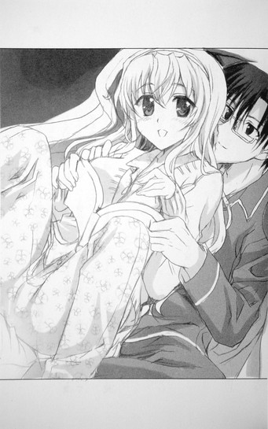
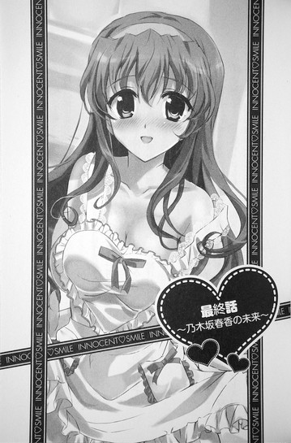

| [五十嵐雄策] 乃木坂春香の秘密16 | |
| 五十嵐雄策 | |
| (2015) | |
|
乃木坂春香の秘密 16
五十嵐雄策
|
底本データ
一頁17行 一行42文字 段組１段
乃木坂春香の秘密⑯
容姿端麗で才色兼備、『白銀の星屑』の二つ名を持ち、ファンクラブの会員数も三桁を越す、まさに深窓のお嬢様という言葉がぴったりの学園のアイドル、乃木坂春香。そんな彼女の秘密を知ってしまったあの日以来、裕人の平凡な学園生活は終わりを告げ、ある意味奇妙な彼女との関係が始まったのだった。
これは、様々な障害を乗り越え、晴れて互いの思いを伝え合った二人の後日談。それぞれの家を行き来する春香と裕人のらぶらぶ新生活、裕人の両親への初ご挨拶ドジっ子話、美夏の想い爆発の丸秘作戦や椎菜のその後、メイド隊序列二位の謎が明らかになる過去話。そして──!?
ついに最終幕を迎える、お嬢様のシークレット・ラブコメをどうぞ（はあと）
五十嵐雄策
五十嵐雄策の秘密⑯。10月３日生まれのＯ型。第４回電撃ｈｐ短編小説賞最優秀賞を受賞し、文庫デビュー。ついにデビュー作の本シリーズの完結......コミカライズ、ドラマＣＤ、ＴＶアニメ化なども経験し、著者も感慨深く思っています。読者の皆様に最大の感謝をば！
イラスト：しゃあ
しゃあの秘密⑯。コミック連載中の『キョウハクＤＯＧ'ｓ』も単行本１、２巻発売中です。後日談ということで裸エプロンは外せません！これもみな、読者の皆様のおかげです（!?）。
乃木坂春香の秘密 16
これまでの人生においてトップ３に入るビッグイベントだったハッピースプリング島での大立ち回りから一ヶ月ほどが過ぎ、またこの上なくサプライズで一生の思い出に残るようなメモリアルイベントだった秋葉原での疑似結婚式が終わってから一週間ほどが経った。
季節は秋から冬へと移り少しずつ肌寒くなり始める十一月の朝。
あちこちでちらほらと白い息が目立つ学園へと向かう通学路のその途中。
「──お、おはようございます、裕人さん♪」
「あ、ああ、おはよう、春香」
待ち合わせ場所である河原にかかる橋の前で。
俺と春香は向かい合ったままそんな風に挨拶を交わしていた。
「え、ええと......きょ、今日は冬らしく空気が澄んだ気持ちのいい朝ですね。川の流れがとっても清らかで......」
「そ、そうだな、泳いでる魚も見えるし......」
「は、はい、かわいらしいです......」
「......」
「......」
二人してそのまま黙り込んでしまう。
どこかぎこちないというか初々しいやり取り。
まるで今日初めて会った二人みたいである。
いや何だってこんなお見合いにおける初顔合わせ状態になってるのかっていうと......それには理由があるんだよ。
一週間前の結婚式とその後の二人だけの、その、ゴ、ゴホン、初めてのキスを経て。
俺たちの関係はそれまでのいわゆる〝友達以上恋人未満〟から無事に公認の〝夫婦〟となったわけだが、この関係の変化というものが意外と曲者というか俺たちにもたらしたものが大きかったわけであって......
「え、えと......な、何だか不思議な感じですね......。こ、こうして裕人さんと、その、〝夫婦〟としていっしょに向かい合っていられるだなんて......」
「あ、ああ、まだどこか慣れんというか......」
「は、はい......そ、その、胸がすごくどきどきしています......」
「......」
「......」
う、うーむ、なんかものすごい気恥ずかしいな......
何だか春香と知り合った当時に戻ってしまったような感覚というか。
や、もちろん本当に知り合った一年半前に戻ったわけじゃないし（当然だ）、俺たちの互いを想い合う気持ちは以前とは比べものにならないくらい強くなっていると思う。
だけどこうして互いに互いのことを〝好き〟だと認識して〝夫婦〟として顔を見合わせてるっていうのはまたこれまでとはまったく違う新鮮な気分で......なんか春香の顔を見ているだけで顔面がＵＳＢ接続型カイロのように熱くなってくる感じであり......
それは春香も同じ心地なのか。
「............（も、もじもじ）」
ちょこんと目を伏せたままこっちの様子を下からうかがっている感じである。
む、むう、そんな小動物みたいな仕草もかわいらしくて思わずここが通学路だってことを忘れて力いっぱいギュッと抱きしめたくなるな......なんていう俺の頭の悪いことこの上ない感想はどうでもいいとして。
「あ、あー、と、とりあえず行くか？」
「え......？」
「そのだな、このままだと遅刻するかもしれんし......」
「あ、は、はい、そうですね......」
これ以上ここでもじもじくん（×二）をしていても始まらない。
言った通りあんまり時間もないし何より道のど真ん中だ。
そう春香を促して歩きだそうとして。
と。
──きゅっ......
「お......」
ふと左手が柔らかな感触に包まれるのを感じた。
見てみると......春香が頬を青森産のサンふじリンゴみたいに真っ赤にしながら、俺の小指を遠慮がちに握っていた。
「え、ええと、春香......？」
「──!? あ、え、えと......っ......！」
意図が分からずに声をかけると春香は何かに気付いたようにはっと慌てたように両手をぱたぱたとさせて。
「す、すみません......っ！ と、突然このようなことをしてしまって......」
「え、い、いや......」
それはいいんだが......
ふいのちょこっと小指アクションにどう対処していいか分からなくなる俺に。
「......わ、分かってはいます......」
「えっ」
「そ、その、分かっています......あの、私たちが、そ、その、ふ、〝夫婦〟だということはみなさんには『秘密』だって......」
「え......？」
「で、でも、それだけではやっぱり寂しいです......。『秘密』だとはいっても、やっぱり裕人さんの温もりをできる限り感じていっしょに歩きたくて......。そ、その、手を握ってしまうのはまずいかもしれないですけれど、こ、これくらいならぎりぎりせ～ふではないんじゃないかって......」
恥ずかしそうにきゅ～っと目をつむりながらもさらにぎゅっと小指に力を込めてそう言ってくる。
その様子はこの上なく一生懸命であり心を許して寄り添ってくる甘えてくる仔犬のようであり......
「あ、あー、そうだな」
「え......」
「──そうだよな。いくら『秘密』っていったって、やっぱりそれに気を遣いすぎるのも考えものか。俺も......春香と〝夫婦〟としていっしょに歩きたい。だからできる限りこうして行こう」
「あ......」
その声に春香の表情がぱあっと輝く。
もう一度こっくりとうなずくと少しだけ遠慮がちに、だけど確かな力をこめて小指を握り直してきて。
「ゆ、裕人さんの温もりです......え、えへへ......♪」
「......」
満面の笑みでそう言ってきたのだった。
う、うーむ、その笑顔だけで顔面の温度が一気に五度くらい上がりそうな気がするな......
──これはその後のお話。
様々な障害を乗り越えて互いの想いを伝え合って〝夫婦〟となった俺たちの......乃木坂春香と綾瀬裕人の、後日談的なお話だ。
乃木坂春香の後日
～Ｔｈｅ ａｆｔｅｒ①～
１
朝の教室はクラスメイトたちの声で賑わっていた。
挨拶やら今日の授業についてやらの様々な話し声。
そんな喧噪の中春香と並んで教室に入ると。
「おー、おはよー、春香ちゃん、綾瀬っちー♪」
まず聞こえてきたのはそんな聞き慣れた明るい声だった。
声の出所はこっちに向かってぶんぶんと大きく手を振る白城版ツインテール娘。周りには澤北さん、椎菜、朝比奈さんの姿も見える。
澤村さんは俺たちが近づいてくるのを見ると。
「もー、相変わらず仲がいいなー♪ 二人そろって同伴出勤かー？この年がら年中常夏な赤道直下バカップルめー♪」
「え......？」
「い、いや......」
いきなりそんな冷やかし度数マックスな声が飛んできた。
「入ってきた瞬間に教室の温度が十度くらい上がった感じだなー。もう空気が違うっていうか何ていうかさー♪それに見てたんだぞー♪ここに来るまでに二人とも、手を繋いで歩いてただろー？うまーく周りからは隠れるようにやってたみたいだけど、この良子ちゃんのミラクルピーピングアイは誤魔化せないんだからなー♪」
「え、えと、そ、その......」
「そ、それはだな......」
とりあえずミラクルピーピングアイはただの盗撮野郎じゃないかって突っ込みはさておき。
う、うーむ、相変わらず朝っぱらからぐいぐいとアグレッシブに攻め込んでくるな......
そのあまりに通常進行なツインテールクオリティに何て答えていいか分からずに言葉を詰まらせる俺たちに、さらにもう一人の白城版ツインテール娘がにやにやと笑みを浮かべながら加わってくる。
「ん～、むらむら、それはしょうがないじゃ～ん♪何てったってこの二人はちょっと前に結婚式を挙げたばっかりのあつあつの新婚さんいらっしゃいなんだから～♪」
「あ、そっかそっかー、それじゃあ仕方ないかー♪神様と神父様の前で永遠の愛を誓った二人はそりゃあどんな時でも通学路でも片時も愛の手錠を外すわけにはいかないよねー♪らぶらぶ怠慢罪で逮捕されちゃうー♪」
「あ、あの......（真っ赤）」
「ぐ、ぐう......」
ホ、ホントに容赦ないな......
ツインテール娘×二のダブル澤攻撃はどこまでも痛恨の一撃というか......
「ちょ、ちょっと良子に幸子、それくらいにしときなって。二人とも困ってるよ......？」
「そ、そうだよ......それに良子ちゃん、そんな風に机の上で脚を組んだりしたら、そ、その、見えちゃうし......！」
見かねてくれたのか椎菜と朝比奈さんの二人がそうフォローしてきてくれるが、ほとんど焼け鉄板に神戸ビーフである。
「えー、これくらいいいじゃんいいじゃーん♪幸せのお裾分けっていうか何ていうかさー、それくらいないとこっちとしては微妙にやってられないっていうかー。あとスカートの中はちゃーんと綾瀬っち以外には見えそうで見えない角度を維持してるから大丈夫なんだぜー♪」
「そうそう～♪ み～んな綾瀬っちと春香っちのことが大好きなんだから、そのちょっとした愛の変化形だよ～♪」
止まらない冷やかしの嵐。
何と答えていいかまったく分からずにどうすることもできずにいると。
「──あ、でもでも結婚式といえばさー、あの時の綾瀬っちはほんと大変だったよねー♪」
「え？」
と、澤村さんが思い出したように手をぽんと叩いてそう言ってきた。
「ほらほら、あの披露宴の後だよー。二人ともいなくなったと思ったら近くの公園で発見されて、そのまま春香ちゃんのパパっちにすっごく追っかけられてさー」
「あー、うん......」
あれか......
ほんの一週間ほど前なんだがなぜか六ヶ月前くらいに感じられる出来事を思い起こす。
春香と、その、初めてのキスをした後、血の涙を流す鬼神のような玄冬さん（日本刀所持）に追いかけられたわけであって──
「えんえん三十分くらい逃げてたんじゃないー？確か御茶ノ水を越えて飯田橋まで逃げて、どっかの出版社の入り口のところで捕まってさー」
「鬼気迫る雰囲気だったよね～♪どこかの編集部員らしき人たちも驚いた目で見てたし。真剣白刃取り？そんな感じで～♪」
「裕人の眼鏡、真っ二つに割れてたよね......」
「う、うん、あれはセンセーショナルでした......」
「......」
思わず直したばかりの眼鏡のフレームに手をやってしまう。
その後追いついてきた葉月さんをはじめとしたメイドさんたちにすぐに取り押さえられて事なきを得たものの、あれはホントに紙一重だった......
ここ最近一番の生命の危機を思い出してドクダミ茶を飲んだ後みたいな苦い気分になっていると。
「──で、本題はこっからなんだけど、綾瀬っちに春香ちゃん、ほんとのところはどうなんだー♪」
「えっ」
近づいて俺たちの脇腹をつんつんとやりながらそんなことを言ってきた。
「ほら、あの時の噂の真相だよー♪二人とも『秘密』って言ってたけど、やっぱりほんとにキスしちゃったのー？」
「!!」
「!?」
な、何でそういうクリティカルな突っ込みをしてくるんだこの核弾頭ツインテール娘は！
てかさっきの唐突な結婚式後のクライシスへの話題振りもまさかそのための布石だったとか......！
「んー、だって私たちだれもその決定的瞬間は見てないわけだしさー。やっぱり友達として知っておく義務があるっていうかー♪ほらほら、いいからゲロっちゃいなよー♪」
「きみたちには黙秘権も弁護士を呼ぶ権利も認められていないぞ～♪」
「え、えと、そ、それは......」
「う......」
きらーんと目を光らせながら迫ってくる澤村さんと澤北さんに後ずさりする。
い、いやキスしたこと自体は俺たちの素直の気持ちに基づくものだし何も後ろめたいことじゃないからことさらに隠すことでもないとは思うんだが......それでもこんな朝っぱらから皆の前で公表するのはなんか違うと思うんだよ！
助けを求めて頼みの綱の椎菜と朝比奈さん（良心）を見てみるも。
「......（じ、じー）」
「......（ち、ちらちら）」
「............」
なんか二人まで興味津々な目でこっちを見つめてるし。
いやどうしてドッグショーの結果発表を待つ初出場チワワみたいな視線を向けてくるんですか......
う、うう、文字通り四面楚歌だ......
「さあさあ、素直に言っちゃえよー♪ 言えば楽になるぞー♪」
「ほらほら～、どうなんだ～？ キスorノットキス？どっちだ～？」
「そ、それは、あ、あの、そ、その......」
「だ、だからだな......」
春香と二人でしどろもどろになっていると。
と、そこで。
ガラリ。
「......は～い......みんな～......ホームルームを始めるわよ～......」
そんな声とともに教室のドアが開いて。
すり切れたボロ雑巾みたいに疲れ切った声とともに由香里さんが教室に入ってきた。
「......は～、まったく昨日は飲み過ぎたわ～......お気に入りのヴィジュアル系バンドバーが結成三周年ライブをやるっていうからついついボトルを入れすぎて......早く終わらせないとマーライオンしちゃいそうだからみんな速やかに席について～......」
干上がった河童のように死んだ目で教室を見渡しながらそう力なく声を発する。
おお、殺伐とした耳年増な教室に二日酔い救世主が......と思いきや。
「......あら～ん、裕くんに春香ちゃん、相変わらず仲がいいっていうかしっぽりどっぴゅり永年連れ添った夫婦みたいな雰囲気ね～ん......。......あ、でも学校にいる間はあの時みたいにディープなキスとかは控えなきゃだめよ～ん......不純異性交遊で個人指導しなきゃいけなくなっちゃうから～......」
「......」
......セクハラだけはどんな時でも忘れないんだよな、この人。
何ていうか......白城学園三年三組は極めていつも通りな感じだった。
午前中の授業が終わり昼休みになった。
昼食やその後のお喋りなどで賑わう五十分の休憩時間。
そんな中──春香と俺は教室を離れ音楽室にいた。
あの結婚式以来昼休みは二人でいっしょに音楽室で昼飯を食べるのが常となっていたのであり、今日も今日とてピアノの横で春香お手製の昼食セット（重箱入り）を食べようとしていたわけだが──
「......何で、いるんだ？」
思わずそんな言葉がついて出た。
ピアノ脇に敷かれたピンク色のランチシート。
そこに当たり前のようにちょこんといたのは。
「ん、どしたのおに～さん？ 道を歩いてたらゴールドバーに当たったマルチーズみたいな顔して～♪」
「......」
にこにこ笑顔のちんまいツインテール娘（元祖）だった。
ランチシートの真ん中に座り込んでこっちを見上げながらもむもむと重箱のイナリ寿司をつまんでいる。
その周りには当然のごとく無口メイド長さん、にっこりメイドさん、ちびっこメイドの姿もあって......
「......いや、だから何でいるんだ？」
ここは白城学園の音楽室で時間は昼休みの真っ最中だって話である。
メイドさんたちはともかく、ツインテール娘の方は自分の学校があるだろうに......
だがその言葉に美夏はにっこりと笑って。
「え～、いいじゃ～ん♪ ほら、お姉ちゃんとおに～さんが結婚して〝夫婦〟になったってことは、おに～さんはわたしのお義兄さんになったってことであって、それはつまり家族になったってことだよね？家族がいっしょにご飯を食べるのは普通のことだよ～？」
「......貴重な団欒のお時間です」
「楽しい家族のお時間が成就するようにご協力するのもメイドとしての大事な務めと言えましょう～♪」
「──（こくこく）」
「......」
......言いたいことはそういうことじゃないんだが。
とはいえその辺を突っ込んでももはや霜降り越後和牛に経文だろう。
俺は軽くため息を吐いて。
「......はあ、分かったよ。ちゃんと昼休みが終わるまでには帰るんだぞ」
「うんうん、おに～さんのそういう柔軟に現実を受け入れるところ、いい旦那さんポイントだと思うよ～♪」
ツインテール娘が出来のいいジャンガリアンハムスターを見るハムスター使いみたいに満足そうにうなずいて。
「それじゃあ改めて......れっつお弁当た～いむ♪」
乃木坂姉妹とメイドさん×三との昼休みが始まった。
昼飯自体はいつものノリだった。
いつものように「あ～ん♪（×五）」攻撃があったり、口元についたご飯粒を美夏たちの口車に乗せられて春香が「わ、わん......♪」と舐め取ろうとしたり、オカズのタラバガニの脚（ボイル済み）でポッキーゲームもどきをやらされたり。
笑いの絶えることのない和やかな時間。
「......」
......まあ、何だかんだでこうやって美夏たちも含めて皆でわいわいといっしょに過ごすのは楽しいんだよ。
ツインテール娘もメイドさんたちもみんな気心が知れまくった気の合うメンバーだし、大勢が集まればそれだけ話も弾むしな。
まあ少しばかり賑やかすぎるかもしれないのと......かなりな程度に耳年増なのが玉に瑕なくらいで。
「はい、どうぞです、裕人さん♪」
「ん、サンキュ、春香」
「いいえ、どういたしまして♪」
そんなことをそこはかとなく考えながら春香に「あ～ん♪」してもらった銀鱈の西京焼きを食べていると。
「............じ～......」
「ん？」
と、ツインテール娘がなんかこっちを見ながら首を傾けていることに気付いた。
「どうしたんだ、美夏？」
「ん～、どうしたってゆうかさ～」
「？」
訝しく思っていると美夏はぽんと手を叩きながらにっこりと笑って。
「──ねね、二人とも～♪ ちょ～っと提案があるんだけどいいかな～♪」
「ん？」
「はい？」
ツインテールをぶるんと揺らしながらそう言ってきた。
提案......？
「うん、そ♪ あのさあのさ、せっかく〝夫婦〟になったんだからさ、呼び方もそれに見合ったのに変えてみたら～？」
「え？」
「呼び方、ですか......？」
「そだよ～。今まで通りの〝春香〟、〝裕人さん〟でもいいけど、それだけじゃちょっと寂しい感じがしない？これまでの〝友達以上恋人未満〟から〝夫婦〟になったのを記念してちょっとした変化をつけてみるのもいいと思うんだよ～♪ほら、色々あるじゃん、〝あなた〟とか〝ハニー〟とか〝裕ちゃん〟とか〝はるにゃん〟とか〝ダ～リン♪〟とかさ～♪」
にまにまといたずらっぽい笑みを浮かべながらそんなことを口にしてくる。
「......」
......何か考えてるかと思ってたらこれか。というかこれまたさっそく耳年増ボンバー炸裂な匂いが......
そこはかとなく微妙な表情になる俺に。
「ほらほら、ものはためしだよ。やるだけやってみなよ、ね♪」
「あ、は、はい......」
「まあ、やるだけなら......」
春香と二人でうなずき合って。
「え、えと......それでは、やってみますね？」
「あ、ああ......」
正面から向かい合って互いの目と目を見つめ合う。
む、むう、何だか少しだけ緊張するな......
落ち着かずに思わず眼鏡の位置を直す俺をじっと見上げて、春香は恥ずかしそうに口にした。
「......あ、あなた......♪」
「お......」
「......だ、だーりん......♪」
「おお......」
「......ゆ、裕ちゃん......♪」
「お、おお......」
なんか胸にズギューン！ と来た。
顔を赤くしながらもじもじと呼びかけてくる春香の遠慮がちな声。
それは甘えてくる仔犬のようでありまんま恥じらいながら初めての呼びかけをしてくる初々しい新妻のようであり......
う、うーむ、こういうのも新鮮でいいもんだな......
まさか呼び方一つ変えただけでここまで感じ入るものがあるとは思わなかった。
春香の繰り出す〝裕ちゃん♪〟の破壊力に心の中で身悶えしていると。
「あ、あの......」
「ん？」
「え、えと......そ、その、今度は裕ちゃんの番です......」
胸の前で手をきゅっと握りながらそう見上げてきた。
「え？ あ、ああ、そうだよな......」
お互いに呼び合うというプレイ（？）なわけだから俺にも順番が回ってくるのは当然なのであって。
春香の言葉にうなずき返すと俺はゴホンと咳払いをして。
「あ、あー......」
「......」
「......ハ、ハニー......」
「......は、はい」
「......マ、マイスイートハート......」
「............はい」
「......は、はるにゃん......」
「............っ」
ぐ、ぐう、顔面に防犯スプレー（主成分トウガラシ）をぶっかけられたくらい小っ恥ずかしい......
春香のことを『乃木坂さん』でなく初めて『春香』と呼んだ時以上の面はゆさというか。
だけど不思議とその呼び方がしっくりとくるところもまた否定のできない事実で......
「......は、はるにゃん......」
「......ゆ、裕ちゃん......♪」
「......はるにゃん」
「......裕ちゃん♪」
「はるにゃん......♪」
「裕ちゃん......♪」
「はるにゃん......♪」
「裕ちゃん......♪」
「はるにゃん......♪」
な、なんかクセになるんだよな......
春香が〝裕ちゃん♪〟と恥ずかしそうに口にする度に、俺の口から〝はるにゃん♪〟の言葉が出る度に胸の奥がもぞもぞとこそばゆくも満たされた感じになる。何というか、いつまでもこのままこうしてお互いに呼び合っていたくなるというか......
「はるにゃん......♪」
「裕ちゃん......♪」
「はるにゃん......♪」
「裕ちゃん......♪」
「はるにゃん......♪」
「裕ちゃん......♪」
「はるにゃん......♪」
「裕ちゃん......♪」
「はるにゃん......♪」
「裕ちゃん......♪」
まるでどこぞのエビセンを食べているかのように後を引いて止まらない......
そんな俺たちの傍らで。
「......は～、もうこの二人はすぐに自分たちだけの世界に入るんだから～」
「まあまあいいではないですか～。それだけ仲がよろしいということなのですから～♪」
「......素敵なバカップルです」
「──（こくこく♪）」
「それはそなんだけどさ～。こうも毎日見てるとデザートのチョコレートケーキの後にイチゴ大福とバターた～っぷりのホットケーキを食べてるみたいってゆうか～。も～、おなかいっぱ～い」
美夏が呆れたようにそう顔を振っていたのだった。
２
放課後になった。
「──じゃあ春香、帰るか」
「はいです♪」
隣で教科書をカバンに詰めていた春香にそう声をかけると、満面の笑みとともにそんな返事が戻って来た。
〝夫婦〟になって以来、登校や昼休みのお弁当タイムだけでなく、春香の用事（委員会とか由香里さんのピアノレッスンとか）がない限りは下校もいっしょにすることにしていたりするのである。
それにはまあ、その、できるだけいっしょに春香との時間を過ごしたいっていう一番の理由があるんだが、その他にももう一つそうすると都合がいいわけがあって──
と、そこで。
「──あ、裕人、乃木坂さん、ちょっといいっ」
「お？」
教室を出ようとしていたところで呼び止められた。
振り返るとそこにはこっちに向かって駆け寄ってくる椎菜の姿。
「ん、どうしたんだ、椎菜？」
「天宮さん？」
「うん、ごめんね、帰るところ呼び止めて。──あのさ、突然なんだけど二人とも再来週の日曜日って時間あるかな？」
「再来週？」
たぶん大丈夫だと思うが......
来週は乃木坂家の大掃除を手伝うことになっていたが確か再来週は特に何もなかったはずだ。急な予定とかが入らなければ問題はないだろう。
その返事に椎菜は顔を輝かせて。
「あ、よかったー。あのさ、実はその日にあたし、ピアノのコンクールに出ることになったんだよ」
「お、そうなのか？」
「うん、そんなに大きなやつじゃないんだけどね。でも今回は審査員に憧れてるピアニストの人が入ることになってるから、ちょっとだけ気合いを入れてるんだ。ほら、できればやっぱり音大に行きたいと思ってるし、音楽を仕事にできたらって思ってるから......」
「......」
「あ......っと、そんなことはいいよね、あはは......♪──で、どうかな、よかったら乃木坂さんと裕人の二人にも見に来てもらいたいって思ってさ。もちろん気が向いたらでいいんだけど......」
ちょっとだけ遠慮がちにそうこっちを見上げてくる。
気が向いたらも何も、そういうことなら大歓迎だ。
「ん、大丈夫だ。というかぜひ応援に行かせてくれ」
「はい、ぜひ行きたいです♪」
なのでそう返すと椎菜は満面の笑みになって。
「わ、ほんと？ ありがと！ 実は一人だと少しだけ不安だったんだ。じゃあ決まりね！入場券が手に入ったら渡すから。──それじゃ今日もレッスンがあるから。また明日！」
そう言うと椎菜は手をぶんぶんと振りながら元気に走って行ってしまった。
うーむ、椎菜もがんばってるんだな。
自分の将来のことをちゃんと考えてそれに向かって積極的に行動しようとしている。俺も負けないようにがんばらんと。
元気に手を振りながら教室を出て行ったフレンドリー娘の背中を思い返しつつそんなことを何となく考えていて。
「──じゃあ、俺たちもそろそろ行くか」
「はいです♪」
笑顔でうなずき返してきた春香と並んで教室を出て。
俺たちは校舎を出て帰路についた。
途中登校時と同じようにこっそりと手を繋いでほんわかと幸せな心地になってみたり、電車に貼られていた『ドジっ娘アキちゃん』の新アニメのポスターに春香が興奮して「はあはあ......アキちゃん......はあはあ......♪」と骨付き肉を前にした仔犬みたいになったり、自動販売機でＰＡＳＭＯが使えることに春香が感動して「ぶ、文明の利器です......！」とチェリーコークを二本買ってみたりして。
学園から移動することおよそ三十分。
春香と二人でやって来たのは──
「......お帰りなさいませ、春香様、裕人様」
「ただいまです、葉月さん♪」
「あー、どうもです」
ほんの五時間ほど前に顔を合わせたばかりの無口メイド長さんが玄関で恭しく頭を下げる──乃木坂邸だった。
「......午後の授業はいかがでしたか？ 英語の小テストがあると伺っておりましたが」
「はい、おかげさまでばっちりでした♪」
「......それはよかったです。裕人様は？」
「あ、はい。俺も何とか......」
いや春香はここが家である以上帰ってくるのは当然として、どうして俺までここにいるのかというと、それは我が綾瀬家が姉とその親友の酔った上での火の不始末（火炎放射とか）によりとうとう全焼の憂き目を見てその結果家無き子となった俺が乃木坂邸でお世話になっている......というわけではなくて。
「それじゃあ、私は乗馬のレッスンがあるのでお先に失礼しますね。裕人さんは今日は......」
「ん、俺は今日は一日玄冬さんのところだ。今週は法律学と経営学と経済学の三連コンボだからな」
「そうですか......がんばってくださいね♪」
「ああ、春香もな」
ぐっと両手を握ってグーを作る春香にそう答えて手を振る。
これが──その理由だった。
俺が乃木坂邸に来ている理由。
それは春香の〝夫〟として──乃木坂家の女性を守っていくに相応しい男としての資質を身に付けるべく......自らを鍛えるためなんだよ。
あの日......ハッピースプリング島での殴り合いの時に玄冬さんに問われた覚悟。
足りないものがあるのならば死にもの狂いの努力でそれを補えという一喝。
それを実現するために結婚式後に一から自分を鍛えてほしいと玄冬さんに頼みこんだところ、玄冬さんは我が意を得たりとばかりにニヤリと笑い「......ほう、構わんが、私の帝王学は甘くはないぞ？」と言ってくれた。それであの日からほぼ毎日、乃木坂邸に通って様々な訓練を受けているのである。
「葉月さん、玄冬さんはもう来て......？」
「......はい。『羅刹金剛の間』で一時間前から裕人様をお待ちになっておられます」
「......。......そうですか」
「......本日もまた一段と気合いが入っていらっしゃるご様子です。裕人様、ご武運を」
「......はい」
静かに頭を下げる葉月さんにそう答えて、『羅刹金剛の間』へと向かう。
玄関から十分ほど歩いたところにある仰々しい意匠付き扉の部屋。
その扉を開けて中に入ると。
「......遅かったな、裕人よ」
「玄冬さん......」
革張りの豪奢なイスにドン！と威圧感とともに鎮座する玄冬さんがそこにいた。
顔を上げてサングラス越しにギロリとこっちに視線を送ってくると。
「......今日で七日目か。青っちろい軟弱者のくせになかなかに粘るではないか。そろそろ怖じ気づいて逃げ出す頃かと思ったわ」
「......逃げるなんてしません。自分で言い出したことですし、それに何より......」
「？」
「......これは、春香と居られるために必要なことです」
その言葉に玄冬さんはニヤリと笑って。
「......ふ、言いおるわ。それでは今日の分を始めるぞ」
基本的な〝帝王学〟全般は、玄冬さんが一人で受け持ってくれていた。
乃木坂家の〝夫〟として身に付けるべき一般的な教養から経済学、経営学、法律学、語学。交渉術や弁論術や人身掌握術。果ては銃剣の扱いやら用兵術やら戦闘機の操縦法やら実戦格闘術まで。
もちろん専門的な分野は他に葉月さんや那波さん、アリスたちメイドさんや平蔵さんたち黒服たちが補ってくれていたが、それでも最も長い時間いっしょにいてくれて先生と呼ぶべきは玄冬さんだった。
「......そこは違うだろう。一昨日の指導で教えたはずだが......？（手で弄んでいたクルミの指圧球にピシリとヒビ）」
「あ、はい。刑法における超法規的措置は責任阻却事由で──」
「違ぁあああああああう!! 超法規的措置は法規上のものではなく解釈上の違法性阻却事由だと何度言わせるつもりだ！（クルミが粉々に粉砕）」
「は、はい！ ええと、違法性が阻却されるから構成要件が成立しなくなって......」
「こぉおのおおお愚か者がぁああ!!構成要件自体は条文の要件を満たせば成り立つと言っておるだろうがあ!!!お前のその頭はただの小洒落た眼鏡置きかぁあああ!!（ドン！と拳を叩き付けたテーブルにヒビ）」
「す、すみません......」
「まったく、この程度の基本知識の一つも満足に覚えられんとはな!!まだエンゼルフィッシュの方が物覚えがいいわこの盆暗がぁあ!!（テーブルが見事なまでに真っ二つに割れた）」
激烈すぎるボディアクションを伴った厳しい言葉。
しかも教えてくれている間なんかやたらと顔の距離が近いしその顔も抗争を間近に控えたマフィアのボスみたいで怖いし......
だけど。
それだけど。
その根底にあるのは......厳しさだけでないことは知っていた。
玄冬さんは自分の仕事で世界中を飛び回って忙しいはずなのに、そのスケジュールの合間を縫ってほとんど毎日のように直接指導をしてくれている。絶叫を上げながらも根気よく俺がその項目を習得するまで最後まで面倒を見てくれている。......面と向かってはなかなか言えないが（怖いし）、そのことにはこれ以上ないくらいに感謝しているんだよ。
「......裕人、だからそこの『原因において自由な行為』の議論は重要だと昨日教えただろう......？」
「あ、は、はい、これも違法性阻却事由で......」
「まったく違ぁああああああうう！ これは責任阻却事由とされるのが通説だと言ったろうがぁあああ!!!」
「......」
......ま、まあ、このスパルタすぎるというか心臓に優しくない教育方針はもうちょっとどうにかしてほしいところではあるが。
「......ふう」
背骨に優しい柔らかな感触のソファに身体を埋めながらひと息を吐く。
およそ三時間に及ぶ玄冬さんマンツーマンの帝王学を終えて。
俺は大広間のテーブルスペースでどこぞの中身は齢七十三のおじいちゃんが入ったロボットのように身体を横たえていた。
「あらら、おに～さん、お疲れだね～」
隣の美夏がフレーバーティーの入ったカップを傾けながらそう声をかけてきてくれる。
「ああ、今日はなかなかしんどかった......」
「ん～、今日はまた一段とヘヴィーオブジェクトだったもんね～。こっちにまでお父さんの叫び声が聞こえてきたよ。おに～さんがちゃんと毎日来てくれるのが嬉しいからって、お父さん気合い入りすぎなんだから～」
「......玄冬様はお気に入りの相手だとよりいっそうお張り切りになられますから」
「それに楽しいのではないですかね～？ 玄冬様、ずっと拳と酒とで語り合える活きのいい息子が欲しいとも仰ってましたから～♪」
「──（こくこく）」
美夏の言葉に葉月さんたちがそう補足してきてくれる。
うーん、息子、ねえ......
そんないいものじゃない気もするんだが......
ちなみに春香はまだ稽古から戻ってきてはいないようだった。
何でも本日三つ目の稽古であるグランドハープのレッスンが長引いているとか。
とはいえこれくらいの遅れは珍しいことじゃないし、遅いと帰宅が午後八時を過ぎることもままある。春香が忙しいのは知っていたつもりだけど、こうして間近で見ていると改めて乃木坂家の長女ってのは大変なんだって思う。
お嬢様の日常業務のナチュラルハードさに感心した心地になっていると。
「ねえねえおに～さん、もし特にやることがないなら夕食前にお風呂に入ってきちゃいなよ～。暑苦しいお父さんとずっと二人っきりだったし、さっぱりしたいでしょ？」
「ん、そうだな......」
確かに汗もかいたし身体の隅々に疲労がたまっているのが分かる。
春香もまだ帰ってくる様子はないようだし、ここはお言葉に甘えることにしよう。
「ん、いってらっしゃ～い♪ もしかしたら一日の疲れが天国にふっとんじゃうくらいのサプライズとかが待ってるかもしれないし～。にっひっひ♪」
「？」
なんか美夏たちが意味ありげな笑みを浮かべていたのは気になったが、とりあえず特に突っ込むことはせずに風呂場へと向かう。
乃木坂邸の風呂場は知っているだけで五つあった。
家族用の私用風呂が二つと、来客用の公用風呂が二つ、何やら秘密のシークレット風呂が一つ。
その中の乃木家家族御用達な第一浴場へと足を踏み入れる。
「相変わらずすごいな......」
脱衣所からしてすでにどこぞのサロンみたいな仕様なのはもうともかくとして。
浴場自体も古代ローマを彷彿とさせるような総大理石の造りで、圧巻の一言だった。
見渡す限り辺り一面の湯船で広さは軽く体育館ほど。湯船の真ん中に立つホタテ（？）の中に入ったヴィーナスの石像。初めて見た時はちょっとした湖か何かかと思ったくらいだ。
「ふう......」
湯船の真ん中辺りまで進んでいって肩まで湯に浸かる。
お湯自体もどこかの温泉の源泉を持ってきているらしく、疲れた身体にえらいじんわりと染み入ってくる。
「極楽だ......」
文字通りそのまま昇天してしまいそうな心地である（エロい意味ではなく）。
タオルで眼鏡の曇りを拭きながら真っ白な湯煙の中で足を伸ばしてリラックスしていると。
──チャプ......
「？」
湯船の奥の方からそんな水音が聞こえてきた。
何の音だ......？
首を傾げながら辺りを見回す。とりあえず周囲に異常はないが、これだけ広ければ湯船のどこかをこっそりと間借りしている温泉ペンギンとかがいたりしてもおかしくないかもしれない。そんなことを思いつつ、音がした方へと近づいてみる。
視界を遮るようにモワモワと立ち昇る白い湯煙。
その煙の壁の先にあったのは──
「......ゆうと、さん......？」
「え......？」
耳に入ってきたのは聞き慣れた耳通りのいい声。
湯煙の向こうでぱちぱちと瞬きをしながらこっちを見つめていたのは......春香だった。
「は、春香!?」
一瞬頭の中が湯煙以上に真っ白になる。
い、いや何で春香がここに!? 稽古が長引いてまだ帰ってきてないんじゃなかったのか!?状況がさっぱり分からない。
というかそれ以前にここが風呂場ということは当然のごとく服を全て脱いでいるのがデフォルトなのであり、服を全て脱いでいるのが通常状態ということは当たり前のごとく目の前の湯煙の向こうの春香は一糸まとわぬ生まれたままの姿なのであり──
「──き、きゃああっ！」
「!? ス、スマン！ い、今すぐに眼鏡を粉砕するから！」
慌ててヴィーナス像のホタテの角に叩き付けて眼鏡を粉々にしようとする。
だが──
「......だ、だいじょうぶ、です......」

「えっ」
「......す、すみません、びっくりして大声を出してしまって......。め、眼鏡さんは大事にしてください......。そ、その、恥ずかしいですけれど、ゆ、裕人さんならだいじょうぶですから......」
「い、いや、そうは言ってもだな......」
湯煙や濁り湯はあるものの、状態的には二人とも完全にフルキャストオフである。いくら何でもマズイだろう。
しかしその言葉に春香は。
「だ、だいじょうぶです......と、というかむしろ、どんとこい、です......！そ、その......私たちは〝夫婦〟ですし......！」
「......」
きゅ～っと目をつむりながらそう言ってくる。
う、うーん、そこまで言われたら強く断るのもかえって春香に悪い気がする。それに俺だって、その、状況が許すのならば春香といっしょに風呂に入ることができるのはこの上なくウエルカムなことのわけだし......
なので。
「わ、分かった。だったらいっしょに入らせてくれ......」
「は、はい......」
春香が湯煙の中うなずくのを確認して。
そういう次第で春香と入浴することとなった。
ホタテ入りヴィーナスが見守る広い湯船のど真ん中で、二人背中合わせになって濁り湯に浸かる。
「い、いい湯だな......」
「あ、は、はい......何でも泉質は重曹泉でお肌をなめらかにしてくれたり胃腸炎などに効用があるそうです......」
「そ、そうなのか......」
「はい......」
「......」
「......」
う、うう、緊張するな......
無駄に心拍数を跳ね上げる敏感な思春期ハートを何とか抑えながら湯船の中で体育座りをして。
「あ、あー、何で春香はここに......？」
「え、あ、は、はい。あの一時間ほど前にお稽古から戻ってきたのですが、裕人さんがまだお父様と鍛練中ということでしたので、先にお風呂に入ってきてはどうかと美夏に勧められて、それで......」
「......」
またあの耳年増ツインテール娘の仕業か......
道理でサプライズがどうのと意味深ににまにましてたわけだ......
相変わらずのムダな小細工っぷりに心の中で呆れていると。
「──あ、あの裕人さん、よろしければお背中をお流しいたしましょうか......？」
「え？」
お湯の中に顔を半分だけ埋めた春香が遠慮がちにそう言ってきた。
「お、お背中です......今裕人さんと私が触れ合っている箇所で、胸やお腹の反対側の部分のことを指す言葉で......」
「え、いや、それは分かるんだが......」
そういうことじゃなくて、何だってそんなことを言い出したんだって話である。
すると春香はさらに小さな声になって。
「あ、あの......やっぱりお風呂といえば、〝妻〟は〝夫〟の日頃の労をねぎらってお背中をお流しするものだと思うんです......。この前読んだ『ノクターン女学院ラクロス部』の新刊でも春琉奈様がそう仰っていましたし......。それに、こう見えて私、お背中を流すのはうまいんですよ......？中学生の時にあった職業体験実習で実践した時に、マルチーズのメルくんにはとっても喜ばれましたです......っ」
「......」
それはどこをどう見てもトリマーの技術じゃないかってのはさておき。
そこまで言ってくれるなら......頼んでみたい気もするな。風呂で女子に背中を流してもらうのは全部で百八個ある男の子の夢の一つだし、その相手が春香なら......もう滂沱して喜ぶくらいのドリームズカムトゥルーだ。
なので少し悩んだ末に俺は小さくうなずき返して。
「──ん、じゃ、じゃあ頼めるか？」
「はいです♪」
嬉しそうにそう言ってくれた春香にうなず返して。
なるべく白い湯煙の向こうに隠された禁断の秘境を見ないようにして洗い場へと上がる（春香はもちろんバスタオルを装着したが）。
「で、では......ここに座っていただけると助かりますです」
「あ、ああ」
俺がイスに座ったのを確認した春香は、高価そうなシルクみたいなボディソープをキレイに泡立てると。
「それでは......いきますね？」
「お......」
ごしごし......ごしごし......
丁寧に背中をこすってきてくれた。
おお、これはなかなか......
柔らかで滑らか。
背中に触れてくるタオルが強すぎず弱すぎずの絶妙の力加減で心地いい。メルくんの気分が少し分かるってもんだ......
ごしごし......ごしごし......
うーん、気持ちいいな......背中を流してもらうのってこんなに気持ちいいものだったのか......
まさに極楽気分というか......
背中流し（流され？）の心地好さに夢見心地になっていると。
「裕人さんの背中、とっても味があります......」
「ん、そ、そうか？」
「はい......触り心地がまろやかでとってもコクがあって......流しているとすごく落ち着きます♪」
「む、むう......」
そういうもんなのかね。
そんな風にどこかのカレーみたいに背中を評されるのは初めてかもしれん。
そういえばだれかの背中や髪を洗うことはあっても、こうしてだれかに洗ってもらうってのはあんまりないかもしれないな。
何ていうか、シチュエーションは色んな意味でギリギリだし仮に玄冬さんに見られたら即座に打ち首ものなデッドラインだけど、こういうやり取りももしかしたら〝夫婦〟の触れ合いと言えるのかもしれん......
春香の細やかな指によって上下されるタオルの感覚を背中に感じながらそんなことを思っていると。
「な、何だかこういうのも楽しいです......」
「え？」
「そ、その、お互いに何も着ていないのはやっぱり少し恥ずかしいですけれど......それでも、〝夫〟の背中をこうして流してあげられるというのは〝妻〟として何にも代え難い素敵な喜びだと思うんです。〝妻〟の特権ともいいますか......。それに、そう感じられること自体が幸せだなあ、って......」
「春香......」
「え、えへへ......♪」
そう微笑みながら本当に嬉しそうにさらに背中を一生懸命にゴシゴシしてきてくれる。
何ていうかこう返すのも月並みだしのろけのように聞こえて少しだけ恥ずかしいとは思うけど。
〝妻〟に心を込めて背中を流される〝夫〟も十二分に幸せだと......思うんだよな。
３
風呂から出た後は皆で夕飯を食べた。
「ふっふっふ、どうだったおに～さん、待っていたのはパラダイスだったでしょ～？」
「......美夏、わざと鉢合わせするように仕組んだだろ？」
「そ、そうです、ひどいです......」
「ん～、ごめんごめ～ん♪ でもさでもさ、楽しかったのは否定できないんじゃないの～？二人だけのお風呂だけに水入らずなランデヴータイム♪らぶらぶのちょめちょめだったって、二人とも顔に書いてあるし～♪」
「ちょ、ちょめちょめってな......」
「み、美夏......めっ......！」
思わず真っ赤になる俺たちに。
「そっかそっか、やっぱり珠玉のラブラブ時間だったか～♪だいたい分かったからもういいよ～♪」
「顔は口ほどに物を言う、ですね～♪」
「......お二人とも仲がよろしくて何よりです」
「──（こくこく♪）」
美夏たちがからかうようにそんな風に言ってきて。
その隣で秋穂さんが。
「あらあら、そんな楽しいことがあったのね♪それなら私ももう少し早く帰ってくればよかったわ。そうすればいっしょに裕人さんのお背中を流させてもらってかぶりつきで見させてもらったのに♪」
「お、お母様......！」
「ふふ、冗談よ♪」
いたずらっぽく微笑む。
そんな気兼ねのない会話。
ちなみにその席には玄冬さんの姿はなく（帝王学後仕事でマンハッタンへ行ったらしい。大変だな......）、代わりにどこぞのアホ姉とその親友のセクハラ音楽教師がどこからともなく現れて野性の獣のごとく「がつがつ......がつがつ......」「ごっごっ......ごっごっ......」と飲み食いをしていたんだが、それはもう最近では当たり前の光景となっていたのでだれも特に突っ込むことはせずにナチュラル放置プレイ気味だった。
「あ、そういえばさ、あの廊下のところに飾ってあったなんかヘンな天狗さんのお面、どうしたの？」
小鮎さん特製の焼きオマール海老を食べながら美夏がそんなことを口にする。
「玄冬様がまたお買いになってこられたのではないですか～？最近は民族的な骨董品にご執心のようですし～」
「そうなの？ もう、あの人は......。昔からそういうおかしなものが好きなのだから......」
「ふ～ん、でもあの天狗面、な～んかちょっとだけおに～さんに似てる気もするよね～♪赤ら顔のくせに意外に猛々しいとことか～♪」
「え、そうか......？」
「うん、そっくりだよ～♪」
「あ、確かにそう言われてみれば少しだけ似ているような気もします♪」
「むう......」
それは喜んでいいのか少しばかり微妙なところなんだが。
とまあ、そんな会話を交わしつつ夕食が終わって。
「ね、ね、おに～さん、今日もうちに泊まってくんでしょ？寝る前にいっしょにゲームしよ、ゲーム～♪」
「ん、いいぞ」
「やた～♪ 今日は何やろっかな～。ウノもいいしトランプもいいしまた人生ゲームやるのもおもしろいし、あ、ヌメロンも捨てがたいかも～♪」
ツインテール娘が嬉しそうにそう声を上げる。
それは何だか俺が乃木坂邸に泊まっていくことが恒例になっているような口ぶりだったが......実のところそれはまさしくその通りであって。
何というかこれが一番あの結婚式以来変化したことかもしれんが......俺と春香は現在週二、三くらいのペースで、お互いの家を行き来して泊まったりもしてるんだよ。
週前半は俺が乃木坂家を訪れて、週後半は代わりに春香が綾瀬家にやって来る感じ。
いやもちろん泊まるとは言っても別にそれに付随していっしょに寝るだとか枕を共にするだとかがあるわけじゃない。何ていうかこれもまた〝帝王学〟の一環と言おうか、いずれその、疑似結婚式でない本当の結婚をした後に同居するにあたっての予行練習みたいなもんというか......ゆえにそれ以上でもそれ以下でもないし、寝室だって当然完全に別だ。......ほ、本当だよ？
「ほ～ら～、おに～さん、なんかカワハギさんみたいなヘンな顔して鼻の下伸ばしてないで早くお姉ちゃんの部屋いこ～！夜はそんなに長くないんだよ～」
「わ、分かった分かった、そう引っ張るなって」
「お姉ちゃんもはやくはやく～♪」
「はい、今行きますよ♪」
急かす美夏をたしなめて、両脇から手を繋ぐ形で立ち上がる。
それをぎゅ～っと握り返してきて美夏が。
「へへ～、こうゆうのってな～んかいいな♪ ほんとに家族になったみたいで～♪」
鼻歌を歌いながらそんなことを言っていた。
で、三人とメイドさんたちで向かったのは、春香の部屋だった。
まるでお姫様が眠りに就くような巨大な天蓋付きベッドを中心に、部屋のあちこちには上品でセンスのいい造りの家具が配置されている（もっとも壁には『ドジっ娘アキちゃん』や『ノクターン女学院ラクロス部』のポスターが、棚の上にはグッズ等が満載だったが）。
「さ、はじめるよ～♪ みんな、今夜はヌメロンで盛り上がろ～♪」
「はいです♪」
「ん、了解だ」
皆で車座になってベッドの上に座って、美夏のリクエスト通りヌメロンを始める。
ちなみにヌメロンというのは少し前にテレビでやっていたゲームで、プレイヤーが一対一でお互いに伏せた四桁の数字を当て合うという、シンプルだがやってみると意外に奥深い代物である。
たまたまいっしょにいた時にそれを見て以来大ハマリで、美夏のマイブームだった。
「え～と～、4285」
「む、１イート２バイト（数字も桁の位置も当たっているのが一つ、数字が当たっていて桁の位置が違うのが二つ）だ」
「お、かなり近いな～。じゃあ 5218 でどうだ～♪」
「ぐ、当たり（ヌメロン）だ......」
「へへ～、またわたしの勝ちだね～♪ じゃあおに～さんは罰としてわたしの言うことを何でも一つだけ聞くこと。いい？」
「ぐ、ぐう......」
さっきからの戦績は二勝十八敗。
ほとんど惨敗と言っていい成績である。
ちなみになぜか美夏の指定席が俺のヒザの上になっていたんだが。
「えへへ～、相変わらずおに～さんのおひざの上は快適だな～♪シモンズ社製のベッドよりもファーストクラスのシートよりもこっちの方がいいよ～♪」
「いや俺のヒザはソファじゃないんだから......」
「え～、違うの～？ 美夏ちゃん専用のおに～さんリクライニングシートなんだと思ってたのにな～♪」
そう言うとさらに俺の身体を後ろに押し倒しながらごろごろと腹のところに頬をすり寄せてくる。
「お、おい......」
「えへへ～、リクライニングを倒してソファベッド状態～♪」
甘えてじゃれついてくる仔猫みたいなアクション。
頬ずりをしてくる度にツインテールがふるふると揺れてそれと共に春香と同じ甘くて柔らかい匂いがふんわりと香ってきて何となく胸がモゾモゾとするというか......や、まあ落ち着く好きな匂いだし、こうやって懐いてこられるの自体は悪い気はしないんだが......
「ほら美夏、あまりリクライニングしすぎると裕人さんが困って......」
春香がそうやんわりと注意してくれるも。
「え～、いいじゃ～んこれくら～い。お姉ちゃんはいつでもこんな風にごろごろにゃんにゃんっておに～さんに甘えられるのかもしれないけど、わたしはこうゆう時くらいしかチャンスがないんだから～♪」
「え？ ご、ごろごろにゃんにゃんって、わ、私は、そんな......」
「お、赤くなった～♪ 図星図星～？」
「あらあら春香様～、お顔から湯気が立っておられますよ～♪」
「......蒸気注意報です」
「──（こくこく♪）」
「あ、あの、その......」
全方位からの突っ込みに春香が顔を真っ赤にしてもじもじとうつむかせる。
そんな中。
「......あ～あ、ずっとこうしてられたらいいのにな～......おに～さんがいっつもそばにいてくれて、ひざの上でごろごろさせてくれて、頭をなでなでしてくれる......そんなすごく幸せであったかい時間......」
「ん？ 何か言ったか？」
「ん～ん、何でもないよ。こっちのこと～」
「？」
美夏が何かぽつりとつぶやいていたような気がしたんだが......ハッキリとは聞こえなかった。
「す～......す～......」
俺のヒザの上で美夏が小さく寝息を立てていた。
呼吸とともに上下する小さな胸。
ヌメロンが第五十八回戦に移行して間もなく、ちんまい身体ではしゃいでいた反動が出たのか遊び疲れた仔猫のようにこてんと眠ってしまったのだった。
そんなツインテール娘を見て那波さんは。
「ん～、裕人様がいらっしゃっている時は美夏様、いつもよりもはりきってらっしゃいますからね～♪きっとお疲れになられたのでしょう～。今頃夢の中でも裕人様とごろごろにゃんにゃんしてらっしゃるはずですよ～♪」
「や、そんな......」
「す～......す～......おに～さん、ずっといっしょにいてくれなきゃ......やだよ......」
「あらあら～、言ったそばから、ですね～♪」
「......」
こっちをちらりと見ながら楽しそうに笑いかけてくる。
ちなみに寝息を立て続ける美夏のその手は那波さんの言葉を肯定するように、きゅっと俺のパジャマの袖を握ったりしていた。
「美夏、本当に裕人さんに懐いているのですね。こうして見ると本当の仲の良い兄妹みたいで、少しだけ妬けちゃいます♪」
「春香まで......」
「うふふ♪」
温かい笑みで美夏の寝顔に視線を向ける。
「それでは私は美夏様を寝室まで送り届けてまいりますね～♪美夏様の気持ちを考えるとこのままがよろしいのでしょうけど、そういうわけにもいかないでしょうから～♪」
那波さんは美夏を優しく腕に抱くと、そう言って去っていった。
「......では、私たちもそろそろ巡回に参ります。もうだいぶ遅くなってしまいましたので。おやすみなさいませ、裕人様、春香様」
「──（こくり）」
続いて葉月さんとアリスも部屋を出て行ってしまい。
後には必然的に春香と俺の二人だけが残される。
「あ......」
「二人だけに......なっちゃいましたね」
軽く三十畳はあろうかというほどの広い部屋にぽつんと二人のシルエットだけが浮かび上がる。
ほんの少し前までは六人で賑やかだったのが一瞬にしてシンとなってしまった。
「な、何か変な感じだな。急に静かになったというか......」
「そ、そうですね......」
「......」
「......」
お互いに何となく沈黙。
──う、うーむ、ここはどうするべきか。もうそこそこに遅い時間だし、普通なら俺もそろそろ部屋に戻るのが無難な選択肢だろう。
だけど。
そうは頭で思っていても......このまま帰ってしまうのは何となくもったいないような気がしていた。
や、深い理由はないんだよ。ただ何となく、今日という時間をもう少しだけ春香といっしょに共有していたいというか......
だから。
「春香......まだ時間あるかな？」
「え......？」
「あー、い、いや、特に何がどうってことじゃないんだ。ただ、このまま部屋に戻って寝るのはなんか惜しいなと思って......」
「あ......」
すると春香も腰のところできゅっと腕を握り合わせて。
「その......私も同じことを思っていました。今夜はもう少し裕人さんといっしょにいたいなあって......」
「そう、なのか......」
「は、はい......」
頬を赤くしてはにかみながらそんなことを言ってきてくれる。
春香も同じことを考えてくれていたなんて、なんか地味に感動だ......
「じゃあ──もう少しだけ......」
「はいです......」
春香がこっくりとそう答えてきてくれて。
二人だけの──時間を過ごすこととなった。
予想外に降ってきた......延長時間。
とはいえ何をしたもんか。
もう少し部屋に残りたいというのはとっさに出た言葉だったが、そこまであまり深くは考えてはいなかった。
ただ春香といっしょにいたいと思っただけで......
と。
「あ......でしたらやりたいことがあるんですが、いいですか......？」
「お、そうなのか？」
「は、はい......よろしいでしょうか......？」
「ん、大丈夫だ」
そう言ってうなずき返す。
何かは分からんが春香の言うことならオールオッケーだ。
すると春香は小さくこくんとうなずいて。
「あ、あの......私と、夜伽をしていただけませんか......？」
「！」
な、何を言い出すんだ、突然!?
よ、夜伽って、意味を分かって言ってるのか？
それはいわゆるところの、その、女が男の共寝の相手をする古の初夜的風習でありさっきの美夏が言うところのごろごろにゃんにゃんの極致でもあり......
すると春香はきょとんとした表情になって。
「あ、あの......お布団の中に潜って......いっしょに『イノセント・スマイル』を読んでいただければと思うのですが......」
「え......？」
「夜伽というのは、夜通し傍にいっしょに付き添って、仲良くお話とかをすることなのですよね......？」
不思議そうな顔でそうこっちを見上げてくる。
「............」
......まあ、確かに正しい言葉の意味ではそっちが正解だった気がするんだがこのシチュエーションで使われたらあらぬ想像をしてしまうのも十七歳の男子としてはしかたないんじゃないかっていうだれに向けられたのか分からない言い訳はともあれ。
そういうこと（布団の中でいっしょに『イノセント・スマイル』）なら何もためらう理由はない。
「......わ、分かった。いっしょに夜伽をやろう」
「あ......」
──というわけで、夜伽をやることとなった。
電灯を消して真っ暗になった部屋で、一つだけ小さな灯りを点ける。
ピアノの形をしたアロマランプ。
それをベッドの傍らに置いて、自分たちの周りだけを照らすよう光が漏れないようにして毛布を顔から被る。
形としては俺が春香を後ろから抱えるようにしてその上からさらに布団で覆って、ちょっとした秘密基地のようなテントのようなスペースができあがった。
「──子供の頃に、こうして毛布にくるまって『イノセント・スマイル』を読んでいたんです」
俺の腕の中にすっぽりと収まる格好で、春香がそっと話し出した。
「家族みんなが寝てしまって静まり返った部屋......その中でもさらに音の消えた毛布の中......その小さな空間だけが私の世界でした。決して広くはないけれどそこにいるだけで心が落ち着く、私だけの世界......」
「そうか......」
今となっては何だか遠い昔のことのように感じるが、春香のこの趣味についてはだいぶ長い間家族にも『秘密』だったんだよな。
だれにも話すことなく、たった一人で抱え込んでいたわけで......
そう考えると、この毛布とランプとに象られた小さな空間が何だか特別なもののように思えてくる。春香の心の内の一番深い場所を表象しているというか......
部屋の中は静寂に満ちていて、聞こえてくるのは時計のカチ......コチ......という音だけ。
閉じられた魔法の空間は二人だけのもので、洗い立ての春香の髪の香りがふっと鼻先をかすめてドキリとすることもしばしば。
そんな中、淡く灯るランプの光を二人で分け合うように俺たちは『イノセント・スマイル』のページを手繰っていく。
「──何だか、とっても不思議な感じです......。裕人さんとこうして......〝夫婦〟としていっしょにお布団の中で『イノセント・スマイル』を読んでいられるなんて......」
「ん、本当にそうだな......」
「ほんの一週間前はまだ裕人さんと〝夫婦〟ではなくて、そのさらに一ヶ月前にはまだ〝お付き合い〟もしていませんでした。いえ、それを言ってしまえばほんの一年半ほど前には私たちは知り合ってすらもいなくて......。それが今はこんな風に毎日を一番近くでいっしょに過ごすことができて、それがとって幸せで嬉しいんです......」
言葉自体を噛みしめるようにそっとそう口にする。
春香の言う通り、それは何とも不思議な巡り合わせだった。
それまでは何の接点もなかった二人。
才色兼備で完全無欠なお嬢様とこれといった取り柄のない一般人。
ほんの少しの運命のイタズラが、共有するべき『秘密』がなければ、その二つの線は交わることはなかったはずだ。
そう考えるとこうして今春香と二人で〝夫婦〟として同じ時間を過ごしていられるのは、数々の偶然と選択とが作り出したちょっとした奇跡のようなものなのかもしれないな......
「......こういう何気ない毎日をこれからもいっしょに過ごすことができたらいいですね......」
「ああ、そうだな......」
本当にそう思う。

日々の日常を共にして他愛もないことで笑い合ってかけがえのない時間を共有して。
そのままゆっくりと二人で歳を取っていけたら最高だと思う。
きっとこういったその時その時は何てことのない日々が後から見てみればかけがえのない貴重な時間で、そんな小さな欠片がいくつも積み重なって俺たちを本当の〝夫婦〟にしていってくれるんだろう。落ち葉が積み重なってやがて森を作り出していくように。
腕の中に春香の小さいけれど確かな温もりを感じながらそこはかとなくそんなことを思う俺に。
「そ、それに......」
「？」
「い、今のこの状況も、大切な裕人さんとの時間です......。そ、その、さっき美夏が言っていた、ご、ごろごろにゃんにゃん、で......」
ふにゃんとこっちの胸に顔を埋めながらそんなことを言ってくる。
う、うーむ、かわいすぎるぞ......
もはや海老にしてみればボタン海老やブドウ海老を越えて伊勢海老レベルのかわいさ。
そのリミッターを振り切ったかわいさのあまり思わずそのまま抱きしめ返してベッドに押し倒してしまいそうになる。
そしてそのままできることなら朝まで二人でずっとこうしていたいんだが......さすがにそれはまずいだろう。朝には玄冬さんも帰ってくると言ってたし。
なので俺は必死に理性を働かせて。
「──あ、あー、このままこうしていたいのもやまやまなんだが......」
「......？」
「その......俺はそろそろ部屋に戻るな。さすがにけっこうな時間になってきたし......」
「あ、はい、そうですね......」
その言葉に春香が少しだけ残念そうにしょぼんと頭を垂れる。
「大丈夫だって。また明日はすぐにやって来る。そうすれば会えるんだからな」
「はいです......ほんの少しの暇ですよね......。──あ、で、でも......」
「？」
「そ、その前に一つだけ......」
「ん？」
何だろうね？
首を傾ける俺に。
「え、えと......眠っている間も裕人さんの余韻を感じられるように......」
そう自分に言い聞かせるようにこくんとうなずいて。
春香は毛布の中でヒザを立ててちょこんと背伸びをすると。
──ちゅっ......♪
「!?」
唇に触れた柔らかく温かな感触。
同時に白桃のような柔らかくて優しい香りがふんわりと口元で交錯する。
「......あ、あの、お休み前のちゅう、です......」
春香は真っ赤な顔でほとんど小雀のさえずりみたいに声をか細くしながらそう言ってきた。
「......」
「......」
「......」
「え、えと......そ、その、お、お休み前の、ちゅう、です......」
「............」
停止する俺を訝しく思ったのか春香が律儀にもう一度言い直してくれたんだが、残念なことに理解がまったくもって付いていかない。
完膚無きまでな思考ストップ状態。
ちゅう......宙......注......忠......チュウ......
頭の中ではそんな単語がグルグルと回る。
ただ一つだけ分かることといえば......唇に指を当てて俺を見上げる春香はどこまでも愛おしくてかわいらしくて、今すぐにでも力いっぱい抱きしめてしまいたいってことくらいで......
「......」
「......」
「......」
「......あ、あー、その、だな......」
「......は、はい......」
いっぱいいっぱいな俺から次に出て来た言葉は。
「......その、だな、一回じゃ足りないというか何というか......」
「えっ」
「お、俺からも──していいか？」
そんな我ながらチャレンジャー極まりないと思われる言葉だった。
「あ──」
その言葉に春香は顔をさらに赤くしながらもじもじと戸惑い状態になっていたが。
すぐに顔を上げて。
「............はい（真っ赤）」
恥ずかしそうに、だけど嬉しそうにきゅっと目をつむりながらこっくりとうなずいてきてくれた。
「お、お休み......」
「お、お休みなさいです......」
──チュッ......♪
その日二度目の〝お休み前のちゅう〟を交わして。
俺たちの一日はようやく終わりを告げたのだった。
今晩は──いい夢が見られそうだ......
４
「──お、おはようございます、裕人さん♪」
「──あ、ああ、おはよう春香」
朝になって。
お互いにどこか気恥ずかしいような心地で挨拶を交わし合う。
「あ、あー、昨日はその、楽しかったな......」
「は、はいです。す、素敵な夜伽のお時間でした......」
「......」
「......」
そのまま何となくお互いに黙り込んでしまう。
一晩が経った今でもまだ昨晩の〝お休み前のちゅう〟の余韻が残っているというか......
二人してそこはかとなく気恥ずかしいながらもどこか親密度の上がった空気にどう対処していいか分からずに戸惑っていて。
「──あ、おはよっ、おに～さん、お姉ちゃん♪」
「！」「!?」
と、そこで制服姿の美夏がぱたぱたと廊下の向こうからやって来た。
ナイスタイミングなツインテール娘の到来に思わず二人でびくっと身体を震わせる。
「お、おう、おはよう」
「お、おはようございます、美夏」
「ん～、相変わらず二人とも朝かららぶらぶな感じだね～♪おはようからおやすみまでどこを切っても金太郎飴レベルらぶらぶってゆうかさ～。──あ、そういえば昨日は気付かないうちに寝ちゃったんだよな～。あのあとお姉ちゃんたちはどうしたの？またごろごろにゃんにゃんとかしてたんじゃないよね～？」
「そ、そんなまさか！ すぐに寝たさ......！」
「は、はいです！ ぐっすりです！」
「ふ～ん、な～んか目が泳いでる気がするんだけど......ま、いいけどさ～♪」
口元に手を当ててこっちを見ながらにやにやと笑う。
ぐう、相変わらずヘンなところにだけ鋭いな、このツインテール娘は......
言葉を返せずにいる俺たちに。
「......おはようございます、裕人様、春香様、美夏様。お食事の用意が調っております。どうぞこちらへ」
「今日の朝食は小鮎ちゃん特製のスクランブルエッグですよ～♪」
「──（こくこくっ♪）」
メイドさんたちがそう声をかけてきた。
「わ、ほんとほんと？ わたしあれ大好きなの～♪ほら、いこいこ、おに～さんお姉ちゃん♪」
「ああ、今行く」
うなずき返しながらたたたっと軽快に走っていく美夏の背中を見送って。
そんな何気ない光景を見ながら思う。
──今日もまたこんな風に一日が始まっていくんだろう。
春香と俺とで過ごす大切な一日。
その一日がまたこれまでと同じく楽しいものになることを願って。
「それじゃあ──行くか」
「はいです♪」
笑顔でうなずき合って。
二人手を繋いで、食堂へと向ったのだった。
乃木坂春香の後日
～Ｔｈｅ ａｆｔｅｒ②～
０
「──今日は何にしましょうか、裕人さん？」
「ん、そうだな......そろそろ寒くなってきたし、何か温かいものとかもいいかもしれないな。ちょうど鱈も安売りしてるみたいだし」
「わ、いいですね♪」
午後六時を過ぎて夕食の買い物をする人で賑わうスーパーの一画。
春香と俺は『転んでもタラでは起きません！タラふく食べてほしいから大安売り！』と書かれたアラスカ産スケトウ鱈を前にして二人でそんな会話を交わしていた。
「温かいものですと、ルコさんと由香里先生はお酒に合うものがお好きですし......鱈さんを使ったみぞれ鍋などはいかがでしょうか？」
「お、いいな。美味しそうだ」
「はいです♪」
丸々と脂が乗った鱈と並んで春香が嬉しそうに微笑んできてくれる。
今日は十一月のとある週末。
今週は春香が月曜日までの二泊三日で我が綾瀬家に泊まりに来るターンであり、そのための夕食の材料を二人で選んでいるのだった。
「付け合わせは何がいいでしょうか？ 鱈さんなので白子さんのポン酢和えとか......」
「あと天ぷらとかもいいかもな。もしよければ作ってくれると嬉しいかも......」
「分かりました、お任せください♪」
にっこりと微笑んでくる。
うーむ、こういうやり取りもなんか甘酸っぱい感じだな。二人でいっしょにあれこれ楽しく言い合いながら夕飯の材料を選ぶってのは、何だかいかにも〝夫婦〟というか同棲したてのカップルっぽいというか......
色々な食材を手に取って楽しげに見せてくる春香を前にして思わず頬を少しばかり緩ませていると。
「あとはデザートもいくつか......。──あ、紅玉リンゴがあります♪美味しいですよね、酸味が程よくて♪」
果物の棚のところに並んでいた小ぶりのリンゴを見つけて春香が目を輝かせた。
「お、じゃあこれも買ってくか？」
「え、いいんですか？」
「ああ、俺も食べてみたいし」
「ありがとうございます......♪ あ、じゃあリンゴさんを食べた後は、剥いた皮でアップルティーを淹れますね？アップルティーにするには紅玉さんの皮が一番いいんですよ♪」
そう言ってリンゴを手に取って微笑んでくる。
本当にこういうアットホームなやり取りを何気なく自然にできるっていうのは──幸せだね。
そんな風にしてひと通り買い物を終えて。
「──じゃあ戻るか、春香？」
「あ、はいです」
並んで歩きだそうとして。
「あ、あの......」
「？」
春香が何かもじもじと訴えかけるようにこっちを見上げていた。
「？ どうしたんだ、春香？」
「あ、あの......今はその、二人きりなので......」
「二人きり......あ」
最初は何を言いたいのか分からなかったが、すぐにピンと来た。
そうだよな、家に戻ったら色々とめんどくさい酔っ払いが二人一升瓶を振って待ち構えてるんだから、それまでの間くらい二人きりの時だけにできることはできるだけしときたいよな。
俺はゴホンと咳払いをすると春香の手を握って。
「──じゃ、じゃあ、戻るか、〝はるにゃん〟」
「あ──」
その言葉に春香は目を瞬かせてこっちを見上げて。
「は、はいです......〝裕ちゃん♪〟」
嬉しそうにそう呼び返してきてくれたのだった。
──これはその後のお話。
様々な障害を乗り越えて晴れて互いの想いを伝え合って〝夫婦〟となった俺たちの......乃木坂春香と綾瀬裕人の、後日談的なお話のパート②だ。
１
目の前で、エプロン姿の春香が台所に立っていた。
色とりどりの花柄が全体にちりばめられたピンク色のエプロン。
綾瀬家に似つかわしくないファンシーでかわいらしい雰囲気のそれは、今日のように春香がお泊まりに来た時のためにと二人でいっしょに店に行って選んだ代物である。
「ふんふんふ～ん......今日の主役はスケトウダラさん～......♪」
ご機嫌なリズムのハミング。
にこにこと笑みを浮かべながら楽しそうに台所の中で手を動かしている。
トントントン......トントントン......
グツグツ......グツグツ......
聞こえてくるのはそんな包丁がまな板を叩く音とコンロにかけられた鍋が煮える音。
うーむ、いいもんだね。
外は日が落ちてもう肌寒くなってきている中を、暖かな部屋で春香が──〝妻〟が夕飯の準備をしてくれているのをのんびりと眺めている。
まさに幸せな家庭の光景の縮図というか。
さらに春香のマイエプロンを装着した若妻のような後ろ姿がまたそこはかとなく胸の鼓動をドキドキと活性化させるもので......
そういえばあのエプロンを買ってきた時、ちょっとしたイベントがあったっけか。
二週間ほど前のことを思い出す。
春香がエプロンを嬉しそうに初着用しているのを見て、その日もうちでアホ姉と酒を飲んでいたセクハラ音楽教師が。
『ねえ春香ちゃ～ん、よかったら〝妻〟としてのエプロンの正しい着け方をおねいさんが教えてあげよっか～？』
『え？ そのようなものがあるのですか......？』
『うん、そうよ～ん♪ 古来からの由緒正しい伝統的な着用法......裕くんもそれを見たら絶対に喜ぶと思うんだけどな～♪」
『ゆ、裕人さんが......！ ぜ、ぜひお願いいたします......！』
『いい心がけね～。うふふ、いらっしゃ～い♪』
そんなやり取りをして奥の部屋へ消えた二人が戻ってきたのはそれから五分後。
『──ど、どうでしょうか......？』
『!?』
出て来た春香は......なんかオンリーエプロン（？）だった。
エプロンから飛び出しているのは白い素肌が剥き出しになった肩と両腕と太股。要はエプロンの布地が覆っている部分以外は全て素肌。い、いや、これはもしかしていつかの夢で見た裸エプロン......!?
『あ、あの......これでよいのでしょうか......？何だかす～す～するのですが......』
『いいのいいのよ～ん♪ 問題なっしん～ぐ♪そのす～す～は裕くんに対する〝好き〟って気持ちの頭文字がにじみ出たものだから～ん♪』
な、何言ってんだこの人......!?
相変わらずのセクハラ音楽教師の脳の酒気帯びっぷりに愕然としつつも、ついつい目は春香の方へと行ってしまう。
『あ～、裕くんえろい目で春香ちゃんを見てる～♪えろえろ～♪』
『なっ、ち、ちが......』
『うふふ、いいのいいのよ～ん♪ 健全な思春期の性少年がそういったことに興味を持つのは自然なことなんだから～♪で・も、こうしたらもっとえろいかもよ～ん♪』
そんな笑いとともに由香里さんが春香のエプロンのヒモを引っ張る。
バッ......
『！』
その下から出て来たのは──
『............』
肩を出す形のニットとショートパンツ姿の、春香だった。
『ふふふ～、何を期待してたのかな～、裕く～ん♪』
『い、いや......』
そ、それは今の流れだったら健全な男子だったら想像するものは一つなのであって......
心の中で反論をしながらも若干気まずい心地になりながら春香の方に目を遣る。
でもショートパンツの春香ってのも初めてだな。いつもはだいたいスカートのことが多いからおとなしめな印象だけど......こういう活動的なショートパンツ姿も健康的でいいかもしれん......
『あ、あの......』
『あら～ん、その目は「春香ちゃんのスカートももちろん極上だけどショートパンツから見えるむちむち太股も健康的で悪くないな、じゅるり......」って目ね～ん♪このむっつり眼鏡～♪』
『じゅ、じゅるりとは思ってない！』
なんてこともあったりした。
何でそういうことだけ鋭いのか......まあそれはともかくとして。
そんな流れがあって、この花柄エプロンは春香のマイエプロンとして我が家に常備されることになったのだった。
意識を戻すと台所からは変わらず春香の鼻歌と包丁と鍋の音とが聞こえてくる。
リズミカルに響く幸せの音。
それをＢＧＭにぼんやりと台所の方を眺めていると。
「──あ、裕人さ～ん、こちらのお出汁のお味はどうでしょうか？」
春香がぱたぱたと駆け寄ってきた。
お玉に鍋のスープを入れて「あ～ん♪」をしてくる。
「ん、どれどれ......ん、大丈夫だ。うまい」
「わあ、本当ですか？ 裕人さんのお好きな引き上げ昆布を使って薄味にしてみたんですが、気に入っていただけてよかったです......♪」
本当に心から嬉しそう笑って。
「──あ、そうです。鱈さんに美味しそうな白子さんがありましたので、裕人さんのお皿にはたくさん盛り付けますね。楽しみにしていてくださいです♪」
こっそりと耳元に顔を近づけてそう言うと、エプロン姿の春香はたたたっと台所へと戻っていった。
何だか本当に新婚さんみたいだ......
「や～ん、おいち～♪ ほっぺたがおっこっちゃいそ～♪」
「うむ、確かに絶品だ。和風の上品な味付けで、酒に実によく合う」
目の前の丼（皿じゃ足りないらしい......）に顔を突っ込みながら由香里さんとルコがそう歓喜の声を上げる。
「これはすてきね～ん......やめられないとまらな～い......むしゃこらむしゃこら......！」
「まったくだ......身体は温まるし酒の肴にもぴったりだし......見事だ......がつがつがつがつ......！
「あ、慌てないでくださいです。まだまだおかわりはたくさんありますから......」
「そうなの～ん？ それじゃあおねいさん、三杯先のおかわりまでよやく～♪」
「む、由香里ばかりずるいぞ。乃木坂さん、私が先に予約だ！四杯先まで！」
飢えたケダモノたちがそんな子供みたいな醜い争いを繰り広げる中。
「はい、裕人さんもどうぞです♪」
「ん、サンキュ」
春香から鱈がたらふく入った皿を受け取る。
そこにはプリプリとした白子がルコたちのものと比べてモリっと二倍増しで盛り付けられていて......
「お、ウマい......！」
「お口に合いますでしょうか......？」
「ああ、いい味付けだ......！」
「そう言っていただけると嬉しいです......♪」
首をちょこんと傾けてにっこりと微笑んでくる。
その一皿に春香の気持ちが（特に白子に）感じられるかのようであって......
ただこのままでも十八分に美味しいが、ポン酢を加えたらまたさらにひと味違うんじゃないかと思う。なのでそれを実行しようとして。
「──あ、ポン酢さんですね。はいです♪」
「お、サンキュ」
手を伸ばす前に春香がポン酢の瓶を手渡してくれた。むう、ナイスタイミングだな。
春香の気遣いの見事さに感心しつつ一杯目を食べ終わって。
「あ、春香、よければ──」
「──はい、おかわりですよね、裕人さん♪」
「おお、悪い」
これまた俺が何かを言う前に春香が新しい一杯をよそってくれた。
ふむ、以心伝心ってのはこういうことを言うのかね。
さらには。
「ええと春──」
「あ、テレビのチャンネルをニュースに変えるんですよね、はいです♪」
「よく分かったな......」
思わずそんな声が漏れて出た。
これはもう気が利くとか以心伝心とか以上に......シンクロニシティレベルと言っていいんじゃないのか。
それを見ていた由香里さんが。
「それにしても、春香ちゃんもすっかり新妻姿が馴染んできたわね～ん♪」
「え、そ、そうですか......？」
「そうよ～ん♪ もうすっかり裕くんともツーカーっていうかアウン♪の呼吸って感じで～。どこに出しても恥ずかしくない立派な新妻よ～ん♪」
「うむ、まったくだ。裕人にはもったいないくらいのできた新妻だな」
「え、えと......（てれてれ）」
春香が恥ずかしそうに下を向く。
それは照れてはいるけれど決して嫌がっているものではなくて......
その様子を目にした由香里さんはさらににやにやとした顔になって。
「──ねえ、これならもうプレマリとかじゃなくて二人ともほんとに〝入籍〟しちゃえばいいじゃな～い♪」
おもむろにそんなことを言い出した。
「え......」
「な、何を......」
「だってもうすっかり夫婦姿が板に付いてるわよ～ん♪本当の夫婦よりもよっぽど夫婦らしいっていうか～♪昔から裕くんを狙ってたおねいさんとしてちょ～っと複雑だけど、二人ともすごくお似合いだもの～♪」
「そうだな。乃木坂さんは裕人には過ぎた嫁だとは思うが......それでも本当に義妹になってくれれば私も嬉しい。大歓迎だ」
ルコまでもが真面目な顔でそんなことを言ってくる。
い、いやそれはもちろん俺としては将来的にはできる限り早くそうしたいと思っているしお似合いだと言われるのはこの上なく嬉しいんだが、それはいくら何でも急すぎるというか、春香の側の気持ちというか都合というものもあって......
だけど春香は。
「──にゅ、〝入籍〟ですか......」
「え......？」
「にゅ、入籍というのはあれですよね、結婚を公的に証明するためにお役所に婚姻届を提出すること......。そ、その、わ、私は......ゆ、裕人さんのことが大好きです......。大好きでどこまでも愛おしくて、も、もう裕人さん以外には考えられないくらいに......」
「は、春香......」
「で、ですからその、裕人さんが、い、いやでないと言ってくださるのならば私は......」
そのままかーっと赤くなって恥ずかしそうに下を向いてしまう。
それは......俺もまったくもって同じ気持ちだ。
寝ても覚めても考えることは春香のことばかりで、春香のことが大好きで......
なのでイヤなんて気持ちはこれっぽっちもミジンコの触角の欠片もあるはずもなくむしろこっちから五回回って『ワオワオワオーン！』と鳴いた挙げ句にジャンピング土下座をして頼み込みたいくらいなのであって......
だから──
「ありがとう......春香。俺も春香のことが大好きだ。もう春香以外にはだれも見えないというか......。春香さえよければすぐにでも春香の本当の〝夫〟になりたいと......入籍したいと思ってる」
「裕人さん......」
俺の言葉に春香はその大きな目を瞬かせて。
「は、はいです。私を裕人さんの本当の〝妻〟にしてください......」
まっすぐに俺の目を見て大きくこっくりとうなずいてくれた。
「はるにゃん......」
「裕ちゃん......♪」
「はるにゃん......」
「裕ちゃん......♪」
「はるにゃん......」
「裕ちゃん......♪」
「はるにゃん......」
「裕ちゃん......♪」
テーブルに置かれた鱈のみぞれ鍋（と白子）を挟んでそんなことを言いながら二人お互いの目を見つめ合っていて。
「や、や～ん......いつから裕くんたち、こんなに熱々になってたの～♪裕ちゃんとはるにゃんって......♪もうこれはとことん飲むしかないわ～ん♪」
「もはや結納と言ってもいいだろう。うむ、今日は佳き日だ。めでたい。乾杯といこう！」
隣では由香里さんとルコがそんなことを言いながら冷やかすように目の前の一升瓶をゴブゴブとラッパ飲みしていたが、正直それ（アル中の惨状）も気にならないほど俺と春香はお互いしか見えてなかった。
まあそんな感じ（白子と入籍とアル中）で夕飯は終わって。
食後のまったりとした時間になった。
今は台所では春香が買ってきた紅玉リンゴで食後のアップルティーを淹れてくれていて、リビングではルコたちがご機嫌な感じに晩酌を続けている。
「ははは、めでたいめでたい！ こんな祝いの席では酒を絶やすわけにはいかんな。次だ次だ、次に行くぞ！今度は『鳳凰美田』だ！」
「うふふふふ～ん、おねいさんは『美少年』と『くどき上手』と『色好い返事』を飲むわ～ん♪名付けて日本酒のＢＬセットよ～♪」
色々と仰々しい名前の日本酒に囲まれて大騒ぎしていて。
「──む、そういえば何か裕人に言うことがあったような気がしたのだが......」
ふいにルコが何かを思い出したようにそんなことを言い出した。
「？ 何だ？」
「......うーむ、確かに何かあったと思うのだが、思い出せん......。......まあだがしかし、思い出せないということは大したことではないんだろう。ほれ、それより早く次の冷やおろしを持ってこんか！」
「はいはい......」
息を吐きながら立ち上がる。
まったく、アルコールを飲み過ぎて脳がハチノス（モツの部位にあらず）みたいになってるんじゃないのか......？
だがこの時ルコが言っていたこと。
それが少なくともこのアホ姉に電気ショックを食らわせるくらいのことはしてでも思い出させるべきくらいには重要なことだったってことに......翌日すぐに気付かされることになるんだよ。
２
朝になった。
チュンチュンと雀がさえずりわたるさわやかな朝。
うーんと身体を伸ばしながら布団から身体を起こす。
昨晩も春香と遅くまで色々と話をしていた。
いっしょに『Chocolate Rockers』の新譜を聴きながらお気に入りの曲を挙げ合ったり、俺の昔のアルバムを見て当時の話で盛り上がったり、互いにパジャマ姿で肩のもみ合いやマッサージをしたり......
二人だけの気の置けない時間でまた一段春香との絆が深まったような気がして、最後はまた、その、〝お休みのチュウ〟とともに照れ合いながらお休みを言い合って眠りに就いた（もちろんそれぞれの部屋で）。
「楽しかったな......」
暮らしの身近なところに春香がいる生活。
毎日こんな幸せな時間が続けばいいのに──と思う。
「──さ、起きるか」
昨日の夕飯はほぼ任せっきりにしてしまったし、お返しに朝ご飯は春香が起きる前に何か作っておこう。
そんなさわやかな気分とともに一階に降りてみると。
「............」
リビングでは砂浜に打ち上げられたチョウチンアンコウみたいになったルコと由香里さんがソファと床に転がっていた（文字通り）。
「また徹夜で飲んでたのか......」
春香と俺は早々に二階に引っ込んだのでその後のことについては関知してなかったが、どうもそのようだった。
その推測を完全肯定するかのように、漂うアルコール臭とともにリビングの床には軽くボウリングを二フレームくらいできそうなほどの数の一升瓶が散乱している。
「......う、ううむ......水......水はどこだ......喉が渇いて死んでしまいそうだ......」
「......ああ、世界がぐるんぐるん回るわ......お腹が口から出てきちゃいそう......」
この世のものとは思えない表情でそんなうめき声を上げる。
まったくさわやかな朝が台無しだな......
これっぽっちも懲りない酔っぱらい×二に心の底から呆れ気分になっていて。
「ほら、とりあえず布団に行けって。このままじゃ風邪引くぞ」
「む、むう......すまないな......」
「ああん......裕くんの優しさが病んだ胃腸に染みるわ～ん......」
「いいから、ほら」
「ああ、あふぅん......」
「お、おお、そんなに揺するな......ああ......そういえば今日の午後に、父と母が一時帰宅するらしいぞ......」
「ん、そうなのか──」
......ん？
何気なく聞き流しかけて、そこで止まった。
──ちょっと待て。今なんか大事なことを言ってなかったか......？
「ルコ、今何て言った......？」
「......ん、だから父と母が戻ってくると言ったんだ......昨日の夕方に電話があってな、お前はまだ買い物やら何やらで帰ってなかったから伝え忘れていたのだ......」
「......！」
その言葉に声を失う。
父と母が戻ってくるって......親父と母さんがこの家に帰ってくるってことだよな？
何でそういう大事なことを頭からすっ飛ばすんだこのアホ姉は......！
「......いやまあ父と母が突然帰ってくるのはいつものことだからそこまでこだわるほどでもないと思ってな......ああ、乃木坂さんのことも話したら、ぜひに裕人の嫁を見てみたいとのことだったぞ......」
「......!!」
しかもそういう余計なことはしっかりと伝えてやがるし！
いや春香とのことは隠すつもりはない。何度も言うがその気持ちに嘘はないしこれから先も変わることはないだろう。だけどそれはアホ姉によって電話越しに事前に伝えられるものじゃなくて......実際にちゃんと会った時に自分たちの口から言うべき事柄だと思うんだよ。ムダにハードルも上がるし。
「ま、まったく......！」
ともあれ今はそんなことを言っている場合じゃない。
──両親が、帰ってくる。
それも春香とのこと（結婚）をしっかり認識した上で。
こうなるともうそれ相応の心構えで迎撃することが必要となるのは間違いないだろう。
しかも帰ってくるのは今日の午後ってことは、もうほとんど時間はない。
それまでに何とか春香との対面をどうキチンとやるのか考えんと......！
ひとまずは春香を起こして事情を説明して......いや、その前にまずこの惨状をどうにか片付けるところから始めないとまずいか......や、だがそれよりも先に......ああ、もう分からん！
何から手を着けていいか混乱状態になる俺に。
「ふふ～、お困りかな、おに～さん♪」
「！」
そんなストロベリーな声が響き渡った。
振り返ってみるとそこには──
「ふっふっふ～、呼ばれて飛び出てじゃじゃんじゃ～ん♪すい～とらぶり～美夏ちゃんただ今参上～♪な～んかえま～じぇんし～なことになっちゃってるみたいだね～。ほら～、ばかっぷるみたいにまたお互い〝はるにゃん♪〟〝裕ちゃん......♪〟なんて呼び合ってるのもい～けど、ちゃんとこうゆういれぎゅら～な時のことも考えとかなきゃだめなんだよ？」
「美夏......」
リビングのソファに座っていたのは、周りにメイドさんたちを引き連れたツインテール娘だった。
相変わらずどこからでも音もなく侵入してくるなこのかしまし一団は。
というか......何でそんないなかったはずの昨日のこと（〝はるにゃん〟〝裕ちゃん〟リターンズ）まで知ってるんだよ!?
その疑問に。
「ふふふ、それはもちろん盗聴器──じゃなかった、こ、こほん、おに～さんとお姉ちゃんのことを想う妹パワーかな～♪」
「......」
盗聴器か......
どこに仕込んでたのかは知らんがまた油断も隙もない......
どこまでも用意周到な元祖ツインテール娘クオリティに疲れた気分になっていると。
「ま、それはともかく～、事情は聞いたよ、おに～さん。おに～さんのお父さんとお母さんが帰ってくるんだよね？」
「あ、ああ......」
「だったらそれなりにちゃんと準備しないと～。もうあんま時間がないんでしょ？ほら、ここの片付けはわたしたちでやっといてあげるから、早くお姉ちゃんを呼んできなって～」
「......そうだな......」
なんか色々と釈然としない部分もあるがそれはこの際後回しだ。
とりあえずは妹パワーについての追及は後回しにして。
俺は急いでリビングを出ると、二階の春香を呼びに行ったのだった。
「──それではこれより、『第三十五回お姉ちゃんとおに～さんのらぶらぶでいちゃいちゃなところを見せつけておに～さんの両親に二人の仲は円満だってあぴ～るしよう大作戦♪』をはじめま～す♪」
「ぱふ～ぱふ～どんどん～♪」
「......ひゅーひゅー」
「──（ぱちぱちぱちぱちばち）」
美夏のどこまでも楽しそうな声とともに。
メイドさんたちが手に持ったクラッカーと花吹雪を辺りにまき散らした。
「あ、あー......」
「え、えと......？」
何だこれは......？
春香を呼んでリビングに戻ってくるなり。
俺たちを待っていたのは......そんなパーティーライクな光景だった（ちなみにアホ姉とセクハラ音楽教師は変わらずに死体のごときまま）。
目を瞬かせる俺たちに美夏はにんまりと笑って。
「何って、作戦会議だよ～♪ これからおに～さんのおと～さんとおか～さんを迎え撃つにあたって、みんなで対策会議をしようってこと～」
「対策会議......？」
「そだよ。だってこれからあるのはお姉ちゃんがおに～さんの両親に初挨拶をするってゆう、言ってみれば正念場でしょ？それでやっぱり二人の仲をおに～さん両親に認めてもらうためには二人の仲の良さを見せつけてきせいじじつを証明するのが一番だと思ってさ♪ほら、きせいじじつは結納よりも強し？」
「むう......」
後半のよく分からんたとえはともあれ......まあ、言ってること自体には一理あるんだが。
「......いや『第三十五回お姉ちゃんとおに～さんのらぶらぶでいちゃいちゃなところを見せつけておに～さんの両親に二人の仲は円満だってあぴ～るしよう大作戦♪』（長い......）ってのは何なんだ......？」
そのネーミングにまったくもってイヤな予感しかしないんだが。
訝しげな顔になる俺に。
「ふっふっふ、それは企業秘密かな。そこはこのぷろふぇっさー美夏ちゃんに任せておいてよ。ま、悪いようにはしないからさ♪──さ、じゃあそういうわけだからさくさくやってこっか。まずはおに～さんとお姉ちゃんとで、お互いのどこが好きかを言い合っていくの♪」
「え？」
またワケの分からんことを言い出した。
何だってそんな公開羞恥プレイみたいなことを......
すると美夏は。
「これにはちゃんと意味があるんだよ？ お互いの好きなところをあげていくことによって互いの気持ちを改めて確認するとともに、どこをおに～さんの両親にあぴ～るするかを精査していくってゆう素敵で無敵な効用が♪」
「それは......」
確かにその通りかもしれんが。
だけどもうちょっとやり方があるというか何というか......
「ほらほら、時間もあんまないんだし細かいことはいいからとにかく実践するする！これは心理学でも認められた有効なプラクティスなんだから～♪」
「わ、分かったよ」
「は、はいです......」
相変わらず強引というかツインテール娘進行だな。
とまあそういう次第で。
何というか......春香と二人でお互いに好きなところを言い合っていくことになった。
「さ、それじゃあまずはおに～さんからだよ♪お姉ちゃんの好きなところを挙げられるだけ挙げてみて♪」
「あ、ああ......」
なんか緊張するな。
春香の正面に立って。
「あ、あー、俺が春香の好きなところは......」
「......は、はいです......」
「そ、そのだな......」
「......（ど、どきどき）」
「な、何ていうか......全部、好きだ。優しくて思いやりがあって笑顔がかわいらしくて......。それにいっしょにいるとそれだけで幸せな心地にさせてくれる。趣味に没頭している時のキラキラとした表情も、見ているこっちを前向きな気分にさせてくれるというか......」
「......」
「も、もちろん、その、見た目も好きだ。さらさらの髪も見ているだけで触りたくなるし大きくて澄んだぱっちりとした目にも惹き付けられる。声は聞いているだけで心が落ち着いてくる感じがするし、話している時にする髪をかき上げる仕草もかわいくて......」
顔面をタカノツメで引っかかれたように熱くなるのを感じながら口にしていく。
う、うーむ、思った以上に恥ずかしいな。
言っていることの内容自体は心からそう思ってることで別に恥ずかしいことじゃないはずなんだが、口にすることでその羞恥心が倍加されるというか......
隣では春香も顔からぷしゅ～と蒸気を噴き出して「あ、あうあう......」と下を向いてしまっている。
「あ～も～、ごちそうさま～。なんてゆうか不器用だけど、その分だけおに～さんがお姉ちゃんのことが好きで好きでしかたがないってことはよく分かったよ～♪」
「まったくお熱いですね～♪」
「......見ていて床に穴を掘りたくなるくらいらぶらぶです」
「──（こくこく♪）」
美夏たちがこの上なく楽しそうにそう言ってくる。ぐう、絶対楽しんでるだろ......
顔を赤くしながら下を向くしかない俺と春香を横目に。
「じゃあ次はお姉ちゃんだね。おに～さんの好きなところをいくつでもいいから挙げてみて。──はい、スタート♪」
「え、あ、は、はいです......」
その言葉に春香はぴょこんと身体を揺らして。
「え、えと......私が裕人さんのことを好きなところは......」
「......」
「そ、その......」
「......」
「や、やっぱり......私も、ぜんぶ、です......っ......！」
きゅ～っと真っ赤になりながら両手でスカートの裾を握りしめてそう口にした。
「な、何もかも、好きです......！ す、全て好きすぎて選べません......っ......！優しくて頼りがいのあるところも好きですし何かに一生懸命になっている時のかっこいいところも好きです......！照れている時に眼鏡の位置を直すところも、美夏たちとお話をしている時の温かい表情も、ぜ、ぜんぶ......っ......」
途切れ途切れながらも一生懸命な告白。
その言葉は真摯で素直で、本当に春香がそう思ってくれているんだろうということが伝わってくるもので......
「は、春香......」
「ゆ、裕人、さん......」
思わず二人で互いに顔を合わせたまま見つめ合ってしまう。
それを見た美夏たちが。
「......あ～あ、な～んてゆうかさ～、自分で言い出しといてなんだけど、なんかばからしくなってきたな～」
「うふふ、もう熱々すぎて見ていられませんね～♪」
「......愛の赤道直下です」
「──（こくり）」
手の平で自分たちを扇ぐ仕草をしながらそう言い合う。
ぐう......自分たちで言い出しておいて勝手な......
ちなみにそんなリビングの傍らでルコと由香里さんは「......お、おおお......」「............ご、ごぼぉ......」とまったくペースを崩さずに二日酔いアフターアクションをしていた。こっちもこっちでマイペースだな......
「──さ、もうこれ以上ここでいちゃいちゃっぷりを見せられても仕方ないから次いくよ～。次からが大事ってゆうか、かわはぎさんの刺身でいうところの肝みたいな感じ？とりあえず二人して甘え合ってもらって──」
人差し指を立てながら美夏がそう言いかけて。
と、その時だった。
ガチャガチャ、バタン。
鍵が開けられる音とドアの開く音がして。
「帰ったわよー」
「えっ」
玄関の方から、そんな声が聞こえてきたのだった。
３
「──わ、懐かしい。久しぶりの我が家ね～」
「......うむ」
「だいたい二年ぶりくらいかしら......あらあらまあまあ、こんなところにきれいなお花が飾ってあるわ。きゃー、これも噂の裕人のお嫁さんセレクションなのかしら？」
聞こえてくるのは間違いなく久しぶりに聞く両親の声。
え、ど、どういうことだ？ 帰ってくるのは確か午後だって聞いていたが、今の時間はまだ正午を少し過ぎたくらいで......
するとそれまでテーブルに突っ伏してうめき声をあげるだけだったルコが。
「......ああ、そういえば戻ってくるのは正午と言っていたかもしれぬ......」
「え？」
「......午後か正午かよく聞き取れなかったのでひとまず大きく幅を取って午後と伝えたのだ......まずかったか......？......ぐぼぉ......」
「......!?」
そういう場合は早めに時間を伝えるのが社会人としての基本だろ！
ホ、ホントにこのバカ姉はどこまでも適当すぎるというか......！
とりあえずこのバカ姉に対する説教は後でじっくりとするとして。
とにかく何とか対処せんと！
焦る俺に。
「......裕人様、ここはひとまずは我々がお出迎えにあがります」
「え......？」
「その間に裕人様たちは態勢を整えておいてくださいませ～♪」
「──（こくこく）」
「た、助かります......！」
「......いえ、お任せください」
そう言って葉月さんをはじめとしたメイドさんたちが玄関へと向かっていった。
「......お帰りなさいませ」
「よろしければお荷物を中までお運びさせていただきます～」
「──（こくこく）」
その出迎えに。
「わあ、わざわざお出迎えありがとう。──ねえねえ、どの子が春香ちゃんなの？そちらの眼鏡のクールビューティーちゃん？それともそちらのにっこりちゃん？そっちのちっちゃいあなたってことは......ないわよねえ？」
「......はい。我々は裕人様と春香様にお仕えするメイドです」
「何かご用がございましたら何でもお言い付けください～」
「──（こくこく）」
「あら、メイドさんにお仕えされるなんて、あの子も偉くなったものねー」
「......」
そんなやり取りが玄関の方から聞こえてくる。
むう、とりあえずメイドさんを見てもさして驚きもしない両親のマイペースっぷりは相変わらずだな......
ともあれあの調子ならしばらくは時間を稼いでくれそうだ。今のうちに春香とどうやってこの突然の来訪に対応するかを相談しておいて......
「......ん、春香？」
と、隣を見ると春香の姿が消えていた。
客間に残っているのはずず～っとお茶をすすっているツインテール娘と、テーブルに突っ伏す酔っぱらい二人だけである。
春香はどこに──
「──は、はじめまして......っ......！」
と、そんな声が玄関から聞こえてきた。
慌ててそっちに目を遣ると......春香がなんかものすごくテンパった顔をして立っていた。
「は、春香!?」
いつの間に......！
思わず目を瞬かせる俺に。
「え、お姉ちゃんならさっき葉月さんたちに続いて出て行ったよ。おに～さんのご両親に挨拶するんだって♪」
「え？」
挨拶って、一人でか？
い、いやそれは少しばかり危険というかひとまず俺といっしょに最初の紹介を交わしてからの方が......！
「だいじょぶだって～。おに～さんが心配するのも分かるけど、ああ見えてお姉ちゃん、色んなところで挨拶とかの経験してるんだから。きっと今回のご挨拶だってうまくやるよ～♪」
美夏はそう言うものの。
俺には不安に思う要素が一つあった。
それは何かというと──
「は、はははじめましてです。あの、わた、私は乃木坂春香と申しまして......」
なんかもう今にもぶっ倒れそうな様子でそう口にしながら春香が歩み寄ろうとして。
ツルッ......
「え......きゃあっ......!?」
そんなどこぞの鳥類みたいな音とともに、何もないフローリングの床で足を滑らせた。
そのままバランスを崩して、手をぱたぱたとバタつかせながらカーリングのストーンのごとく摩擦力が少ない床を滑走していく。
「春香！」
──不安要素はこれだった。
状況が切迫すればするほど発揮される神がかり的なドジっ娘属性。
それはもうほとんど奇跡的でありある種の何かを『持ってる』としか言いようがないレベルで......とか言ってる場合じゃない！
春香の名前を叫ぶと同時に俺は客間から駆け出して（ここまで一秒）。
ガバッ！
廊下脇に置いてあったスリッパ掛けに顔から突っ込む寸前で春香の身体をキャッチすることに成功した。
だが。
「お、おおおおっ？」
一度ついたドジっ娘のエクストリームな勢いは止まらなかった。
キャッチした俺の身体を巻き込んでそのまま運動力の赴くまま横滑りしていき。
ガラガラガッシャーン！
そのまま、玄関のところに積んであった両親の荷物へとダイブすることになった。
「い、いてててて......」
「あ、あうう......」
盛大なクラッシュ。
眼鏡の位置を直しながら荷物の山の中から頭を起こす俺に。
「あらら、ずいぶん派手なお出迎えね～」
「......久方ぶりだな、裕人」
「あ、ああ、お帰り......」
......何というか。
......これが春香の綾瀬家での〝お嫁さん〟デビューだった。
「も、申し訳ありません......っ！ お、お会いして早々こんな失態を......！」
ぎゅ～っと目をつむった春香が一生懸命に頭を下げる。
「お、お荷物をバラバラにしてしまいましたし、裕人さんにまで大変なご迷惑をかけてしまって......」
「いや俺は大丈夫だから......」
「そうよ～、いいのいいの、裕人のことはあんまり気にしないで。あんなの事故みたいなものなわけだし。それにこーんなかわいい子が裕人のお嫁さんだなんて、それだけで裕人のことなんてどうでもよくなっちゃうってものよ♪」
場所は客間に戻って。
テーブルの上座に並んだ父母と春香が向き合って話をしていた。
「で、ですが......」
「本当に気遣い無用よ～。──それよりも、春香ちゃんだったかしら？改めて初めまして。私は裕人の母で綾瀬瑠璃子よ。よろしくね」
「......裕人の父で綾瀬国貞だ」
真反対なトーンで自己紹介をする。
この対照的な二人が、うちの両親だった。
見た目は母親の方が話し好きなその辺のどこにでもいそうなおばちゃんのようで、父親の方は短髪にヒゲの昔気質な風貌。性格の方もだいたいその外見から予想されるものと大きく外れることはない感じである。
「あ、は、はい。こ、こちらこそよろしくお願いいたします。乃木坂春香と申す者でありまして、その、裕人さんとは元々はくらしゅめいとで──」
「......」
嚼んだ。
盛大に嚼んだ。
か～っと赤くなった春香があせあせと「ク、クラッシュメイト......」と言い直そうとして。
「そんなにかしこまらなくてもいいわよ～。娘になる相手なんだから、もっと気楽に肩の力を抜いて話してちょうだいな♪その方が私も嬉しいわ。ほら、むしろお母さんって呼んでちょうだい♪」
「は、はい......」
消え入りそうな声でそう返事をする。
とはいうもののそうは簡単にいかないようだった。
春香の緊張度は最初のドジっ娘デビューもありすでにゲージ振り切り寸前のギリギリマックスのようで......
「春香ちゃんは何かご趣味とかあるの？」
「あ、は、はい、小さい頃からピアノを......」
「ピアノ？ へえ、それってどんな感じなの？」
「は、はいです。え、ええと、洋の琴と書いて洋琴と書きまして......」
「そ、それは漢字だ、春香......」
「え？ え......？」
大正生まれのお婆ちゃんがやりそうな勘違いをしたり。
「ね、ね、春香ちゃんは料理が得意だって聞いたけど、よく作るのは何なの？」
「え？ あ、え、えと、それは......」
「あー、春香は昨日、白子ポン酢を作ってくれたよな？鍋の付け合わせで......」
「あ、は、はい。裕人さんの白子を使って......」
「お、俺といっしょに選んだ白子な！」
危うく俺が変態料理プレイをしようとしたことになりかけたり。
「あ、あの、みなさん、よろしければお茶を......あっ」
「おおう！」
「ゆ、裕人さん......！ す、すみません、何てことを......！す、すぐに拭き取りますので......！」
「あ、ああ、大丈夫だ、自分で拭ける。ほら、春香にも少しかかってる。ちゃんと拭いとかんと」
「は、はい、すみません......！」
「あら、裕人の股ぐらのところに茶柱が立ってる。風流ね♪」
お茶を皆に淹れようとして俺の股間のところに盛大にこぼしたりと。
ドジっ娘アクションのオンパレードだった。
春香の緊張しい特質とドジ属性のフルコンボ状態。
まさに完全な春香劇場である（悪い意味で）。うーむ、ここまでフルスロットルなのは久しぶりに見たな......
ちなみにさっきから喋っているのは母ばかりで、親父の方は何やら気むずかしい顔をしたまま腕を組んで黙り込んでいるだけだが、これは別に怒っているだとか何か気に入らないことがあるとかいうわけではなく......親父は昔からこんな動く石像みたいな感じなんだよ。玄冬さんとかとはまた違った方向で取っつきにくいタイプというか昔気質で頑固な職人みたいな感じで。おかげで親父の方は何を考えてるのかいまいち俺にも分からないんだよな。
さすがにそんな姉の状況を見かねたのか美夏が。
「──ね、ねえねえ、おに～さん父とおに～さん母は何の仕事をしてるの？」
「ん？」
「ほ、ほら、ず～っとお仕事でお家を空けてたんでしょ？海外に行ってたって聞いてるけど、何やってるの？」
そう言って話の方向を変えた。
おお、ナイスフォローだ。
「あのね、私たちはアルゼンチンで養蜂農家をしているのよ」
「よ～ほ～農家？」
「そ。ミツバチを繁殖させて蜂蜜を生産するお仕事かな。その中でも特にミツバチを品種改良する研究に力を入れていてね。そのためには高地があるアルゼンチンは都合がいいの。蜂蜜の甘みが他とは違う上品な甘みに仕上がるから」
「へ～、みつばちさんなんだ～」
美夏が感心したように首を振る。
今言った通り、両親は養蜂農家だった。
元々は二人とも植物学者だったとの話だが、たまたま研究で訪れたアルゼンチンでミツバチの魅力に取りつかれて、そのままハチミツの味のクオリティ向上を研究する養蜂農家を志すことになったとか。
ホームページで通販とかもやっていて、なかなかに好調らしい。
「まあ、だいたいそんな感じかな～。あ、でも大丈夫よ。裕人に後を継いでくれとかアルゼンチンまで来てくれとかは一切言うつもりはないから。安心して裕人のお嫁さんになってちょうだいね♪」
「だって、お姉ちゃん♪ よかったね、新婚早々単身赴任にならなくて～♪」
「あ、は、はいです......」
美夏のいたずらっぽい言葉に力なく答える。
その後もしばらく談話は続けられたが。
「春香ちゃん、何か最近やった楽しいこととかはあるのかしら？私はここに来る前に寄った新大久保が楽しかったわ～」
「え、えと、えと......」
「春香、ほら、夏コミの......」
「あ、は、はいです、裕人さんといっしょに子作りを......」
「ど、同人誌作りだろ！」
「あらまあ♪」
母が一人でハイテンションで喋りっぱなしな状態で、親父は岩みたいな顔で沈黙、春香は迷子になった仔犬みたいにしどろもどろという状況は変わらなかった。
４
「お、お姉ちゃ～ん、この状況はちょ～っとまずいよ～」
客間を離れた二階の俺の部屋で。
真面目な顔をした美夏が春香をそう諭していた。
「いきなりのおに～さん父母との対面だし色々緊張してるのは分かるんだけどさ、せめてもう少し気をしっかり持とうよ。あれはいくら何でもポンコツすぎだよ～」
「は、はいです......美夏の言う通りです......」
美夏の言葉に春香がしょんぼりと頭を垂れる。
今この場にいるのは俺たちだけである。
両親は久しぶりに帰ってきたということでつい先ほどいったんご近所に挨拶回りに行くために席を外した。なのでこれを幸いにと作戦会議を実施しているところだった。
「ほら、もうこの際おに～さん父母はハロウィンのドテカボチャか何かだと思ってさ～。それか手のひらに『トリックオアトリート』って書いたのを見せて牽制してみるとか......」
「......」
それはただの脅迫だろ......という突っ込みはともあれ。
「そ、それは......」
その言葉に春香はきゅ～っと目をつむって。
「それは分かっています......。でも......裕人さんのご両親です。〝夫〟であり何よりも大切な、裕人さんのご両親......。どんなコンクールよりもリサイタルよりも......緊張して胸がどきどきしてしまいます......っ......」
「春香......」
「お姉ちゃん......」
その気持ちは理解できた。
大切な相手（〝夫〟）の両親との初対面。
俺だって玄冬さんや秋穂さんと初めて会った時には色々といっぱいいっぱいでほとんどまともに話せんかったしな。
その絞り出すような声に美夏はう～んと腕組みをして。
「ん、ん～、それは分かるんだけどさ～。でもこのままじゃじり貧ってゆうか、お姉ちゃんの良さがちゃんと伝わらないのがもどかしいんだよ～」
「美夏......」
「お姉ちゃん、いいところがいっぱいいっぱいあるのに......。とにかくがんばろうよ！ちゃんと普段通りの姿を見せられればお姉ちゃんは絶対に文句なしの百点満点のお嫁さんなんだから～！このまま終わっちゃうのは、なんかお姉ちゃんを誤解されてるみたいで悔しすぎるよ～」
「そ、そうですよね......は、はい、『トリックオアトリート』を手の平に書いてがんばります......っ......！」
ぐっと両手を握りしめる春香。
そんな気合いとともに対面の席に戻ったものの。
「あ、あの、ご近所さんへのご挨拶はどうでしたでしょうか......？き、きちんとお礼参りはできまして......」
「は、春香、お礼参りじゃない！ 挨拶回りだ！」
「あ、は、はい、え、えと、お蕎麦を持ってご挨拶に......」
「そ、それは引っ越しのご挨拶限定だと思うぞ......」
「あ、あうあう......」
「............」
やっぱりポンコツのままだった。
春香としては懸命にいつも通り振る舞おうとしているつもりなんだろうが、そのことを意識すればするほど余計に緊張が増して空回りする。
「は、春香、とりあえず落ち着こう、な？」
「は、はいです......え、えと、えと『トリックオアトリート』を掲げて......」
「それはやっちゃダメだ！」
俺もできる限りのフォローを試みてはみたものの、それでも大勢はあまり変わらなかった。
そして時間はみるみる内に過ぎていって──
「──うん、色々とお話ができて楽しかったわ♪ありがとうね、春香ちゃん」
「あ、は、はい......」
母の言葉に春香が何と言っていいか分からないという表情でうなずいて。
ひとまず両親と春香との初対面は──不完全燃焼に終わった。
「さ、それじゃあ久しぶりに夕飯の用意をしようかしら。春香ちゃんも食べていくでしょう？」
「......はい、です......よろしければ......」
力ない声で答える。
まあ春香と両親との初対面は......贔屓目に言って六十点といったところか。完全に春香の空回りで終わったというか......
「......」
とはいえ最初はこんなもんだろう。
緊張して終始しどろもどろだったとはいえそれは見方を変えれば一生懸命さの表れだし、それくらいは両親にだって分かるはずだ。
このことが原因となって俺たちの関係について何かを言われることはない......そう思ったんだが。
だがそれは早計だった。
台所へと移るべく、皆で席を立とうとして。
「......裕人、この娘はやめておけ」
「えっ」
客間に重く響いた声。
一瞬、聞き違いかと思った。
普段はほとんど口を開かない頑固な石像みたいな親父が発した言葉。
だが親父は再びこっちを見て。
「......聞こえなかったのか？ この娘はやめておけと言ったのだ。結婚相手をこの娘だと決めるには、まだ早計だ」
「ちょ、ちょっと待ってくれ！ いきなり何でそんなこと......」
親父の顔を見返してそう言い返す。
いや春香が緊張してうまく受け答えができなかったからそんなことを言ってるのか？
だとしたらそんなのは春香の表面しか見ていない上滑りな評価だし......見当違いもいいところだ。
だがその反論に親父は。
「......そんなことを言っているのではない。確かにその娘の受け答えは十分とは言えないものだった。だが全ての場面で一生懸命に振る舞おうとしていたのは伝わってきた。その人柄は十分に感じ取ることはできた」
「じゃあ何で......！」
意味が分からない。
それ以外で春香に何か落ち度となることがあったってのか!?
思わず身を乗り出す俺に。
「......この娘がどうというよりも、お前だ、裕人」
「え......？」
俺......？
そこで親父は俺の顔を見据えると。
「......裕人、お前はこの娘に甘えることができていない」
「え......？」
重い声音で短くそう言ってきた。
「......家に帰ってきてから今まで、お前たちの間のやり取りをずっと見ていた。最初の玄関での一幕から、二人だけの細やかなやり取りまで、全て。お前はこの娘をどうフォローしようか、どう助けの手を差しのべようかのみに腐心していた。それはいい。こういった状況ではそれもやむを得ないだろう。だからそこについては言及するつもりはない。......だがその逆はどうだ？」
「逆......？」
「そうだ。お前がこの娘にフォローを求めようとする場面はついぞ見られなかった。お前は最初から最後まで全て事を一人で運ぼうとしていて、この娘を頼りにしようとすることはなかった。そうなり得る場面はあったはずなのにも関わらず、だ。それはお前がこの娘に甘えることができていない......そのことの表れに他ならないのではないか？」
「それは......」
確かにそうかもしれんが......
だけどそれだけで甘えるとか甘えないとか、そんなことまで話が発展するってのも......
「......甘えるということは、心を許すということだ」
「......」
「......お前は昔からそうだった。だれかに甘えるのが得意でなくほとんど人に頼ろうとしない。だがそれには俺たちの責任もあると思っている。小さい時から仕事で家を空けがちで、人への頼り方を十分に教えることができなかった。ゆえにお前は周りに頼ろうとせず、甘えることをしようとせずに、何事も自分一人で何とかしようとする癖が付いてしまったのだろう。そのこと自体は一概には悪いこととは言えないし、時には自立と独立を促すという長所にもなっているゆえに多くは言うまい。だが──」
「......」
「......だが〝結婚〟というものは、〝夫婦〟というものは互いに甘え甘えられて心を許し合って、初めて成立するものだ。どちらかだけあってどちらかがないというのは片輪のない車のようなもの。その相互作用がなければ、それは気持ちと縁の結びつきではなくただの父性と依存の併存に過ぎないものになってしまう。それでは足りぬのだ。〝結婚〟というものは理想だけじゃない......時には現実の厳しさが必要とされるものなのだ。ゆえに......それが欠けている関係には、簡単に結婚までは賛成できん」
真っ直ぐに俺の目を見ながらにそう言い放つ。
親父がこんなに喋るのを......正直この歳まで生きてきて初めて聞いた。
口下手で頑固な親父の言葉。
きっと──それだけ俺たちのことを気にかけてくれているのだろう。親父は頑固だが決して難癖や個人的感情でそんなことを言う人じゃないから。
「......」
......甘える、か......
親父の言うことは分かった。
確かにそれは俺に欠けている要素だ。
親父の言う通り俺は昔から人に頼るのが苦手だったし、基本的には自分一人でできることは自分一人で何とかしてきた。いやほら、周りにいた年長者はアホ姉とかその親友とかの頼るにはちょっとアレなラインナップばっかりだったし......
春香に対しても......分かりやすいカタチで甘えるということはなかったかもしれない。
それ自体は確かに否定できない事実だ。
「......」
だけど。
それだけど。
そんなことは......大きな問題じゃない。
甘えるということを重要視する親父の言い分も分かる。
〝結婚〟にあたって互いに甘えるということは確かに必要で、目に見える分かりやすい指標となるだろう。
だけど──それが全てじゃないはずだ。
『甘えていない』イコール『心を許し合っていない』ということにはならない。
確かに表立って甘えることはできないかもしれないが、俺と春香の心は通じ合っていると言い切ることができる。心を許し合っていると自信を持って口にすることができる。それにたとえ──本当に仮にだが──まだ十分とは言えないとしても、これから先春香と時間を共に過ごしていくことでそれを何とかしていけるだけの土台は作ることができていると......信じている。
......今までの、少し前までの俺だったらまたここで悩んでいただろう。
自分たちを信じることができずに戸惑っていたかもしれない。
──しかし今は違う。
一年半以上にわたる春香との様々な経験を経て、あの〝結婚式〟とそれに至るまでの葛藤を経て。
春香との──確かな絆を手に入れた。
だからもう今となってはそんなことでは俺の心は揺るがない。
春香を好きで、このまま春香と添い遂げたいという気持ちに......欠片の迷いもない。
「──親父」
「......む？」
「俺は、いや俺たちは──」
だから俺はその心の内を口にしようとして。
「──ま、待ってください！」
先に隣からの声に遮られた。
両手を握りしめて声を上げていたのは......春香だった。
「春香......」
「お、お父様の仰ることは分かります......。た、確かに、私は裕人さんに甘えていただけるだけの器量がないのかもしれません......頼りないかもしれません......」
「......」
「わ、私はこのようにまだ未熟な若輩者ですし......そのことは否定できない確かな事実です。......でも！」
そこで春香はぐっと顔を上げて正面から親父を見て。
「でも......でも......裕人さんを好きだという気持ちに、偽りはないです......！だれよりも愛おしくてだれよりも大事な人......。私は裕人さんのことを、そ、その......あ、愛していますし、裕人さんも、き、きっと同じように思っていてくださると信じています......！そして進もうとして向いている未来は、心が重ね合わせられている方向は裕人さんと同じだと、心から信じています。だからもしも私に裕人さんに甘えていただけるだけの器が足りないというのなら......がんばってそれに見合うよう努力します......！死にものぐるいで裕人さんの〝お嫁さん〟に相応しい存在になってみせます......！裕人さんとの未来を紡いでいくために......！」
「......」
直向きで真っ直ぐな叫び。
それは普段は控えめで大人しい春香からは想像もできないほど強い感情を伴った言葉だった。
そしてそれが......俺には嬉しかった。
春香の言っていることは──信じている未来の内容は、俺のものとまったく同じだ。
二人で共に歩いて行く、何かがあれば二人で共に努力して解決していく道。
そのことが何よりも嬉しくて何よりも心強くて。
だってそれこそが......俺たちの間にある確かな絆のはずだから。
「春香......」
春香との間にある確かな心の繋がりを喜ばしく感じながら。
その肩に手を置こうして。
「だ、だから......っ！」
「お？」
そこで春香が今一度声を大きくした。
初めて空を飛ぶことを決意した仔鳥のような表情で俺の顔を見る。
何だどうしたんだ......？ と目を瞬かせる俺に。
「──ゆ、裕人さんも......私に、甘えてくださいです......っ！」
「え......」
そう言ったかと思うと。
顔を真っ赤にした春香はばっと両手を広げて。
ぎゅうううううううう！
隣にいた俺を力いっぱい抱きしめた。
「は、春香......!?」
「わ、私も裕人さんに甘えていただける立派な〝妻〟になれるよう努力します......っ......だから裕人さんも......どうか少しは甘えてください......っ......！」
「え、え？」
「あ、甘えのこらぼれーしょんを成功させるためには甘えさせる側だけでなく甘える側もなければ成立しない......。さ、さあ、どうぞ遠慮なくあますことなく全身で甘えてきてください......！ほ、ほら、いいこいいこ......だいじょうぶです、〝裕ちゃん〟はいいこですから、怖くないですから......っ......」
「あ、あのだな......」
「だ、だいじょうぶです......安心して何もかも私に身を任せてください......。よ、よーしよしよしよしよし......〝裕ちゃん〟はちゃんと甘えられるいいこですよ......くぅーんくぅーんしてもいいんですよ......？」
アゴのところをごろごろと撫でながらさらに腕に力を込めてくる。
「い、いや......」
言ってるのはそういうことじゃないと思うんだが......
甘える＝抱きしめていいこいいこ（アゴ撫で付き）するという図式がすでに仔犬とかそういう小動物に対するものというかどこかの動物王国の麻雀王の発想というか、根本的に何かが致命的に間違っているような気がしてならない。
だがぎゅうっと全身で抱きしめてきてくれる春香の胸の中は温かくていい匂いがして......何だか心が落ち着いてそのまま身を委ねたくなってくるのもまた事実であって......
「よしよし......さ、そのまま安心してくぅーんくぅーんしていてください......私はずっとこのまま何があっても〝裕ちゃん〟の一番傍にいますから......」
「あ──ああ......」
「よしよし......いいこいいこ、です......」
「......」
う、うーむ......これはこれでいいのかもしれん......
春香の絶妙ないいこいいこアクション（アゴ撫で付き）に思わずくぅーんくぅーんな夢心地になっていると。
「......ハ、ハハハハハ！」
ふいに弾けたような笑い声が客間に木霊した。
見ると......普段は岩石みたいな顔の造りをしている親父が、腹を抱えて笑っていた。
「お、親父......？」
「......ハハ、ハハハハハハ......！」
客間中に響く大きな笑い声。
ひとしきりそんな風に笑い倒した後。
「......な、なるほど、いいこいいこか。まさかそう来るとは思わなかった。予想外過ぎてまさに斜め上から寝耳に水を受けた感じというか。──だが効果は覿面だな。裕人のこんなだらしない様子は初めて見た。なるほど、甘えぬなら抱きしめてみよう朴念仁、か」
「......」
いや朴念仁ってな......
それ自体肯定したくないところなんだが、仮に当たっていたとしてもその部分は明らかにあんたの遺伝だろう。
思わず憮然とした表情になる俺に。
「......なるほど、俺の見込み違いだったようだ」
「え？」
「......俺にもまだまだ表面しか見えていなかったようだ。先ほどの言葉は撤回しよう。裕人、お前とそちらの乃木坂さんは心を許し合っている。甘える云々以前に──いや今のお前の表情はこれ以上ないくらいに甘えていたものだったが──それ以上の確かな絆があるようだ。野暮なことを言ってすまなかったな」
「ほーら、だから言ったじゃない。春香ちゃんは立派な〝お嫁さん〟だって♪あなたが気にするのも分かるけど、余計な試金石なんて必要なかったでしょ♪」
「......うむ、そうだな。これ以上ないくらいに裕人に似合った〝嫁〟だ」
母さんの言葉に親父が深くうなずき返す。
「あ......」
その言葉に春香が口元に両手を当てて。
「あ──ありがとうございます......！ そう言っていただけるなんて本当に言葉もなくて......。ゆ、裕人さんの、お、〝お嫁さん〟として恥ずかしくないよう......これからも一生懸命に精進していきます......っ......！」
「......ああ、よろしく頼む」
「うふふ、早くお母さんって呼んでね♪」
親父と母さんがそう答えたのだった。
うーむ、何かよく分からんがとりあえず納得はしてくれたみたいだな......
目の前で一件落着した光景を目にしながらひとまずは安心した気分になっていると。
「......さて裕人、案内してもらうぞ」
「え？」
親父が近づいてきてそんなことを言ってきた。
いや案内って、どこに？
すると親父は俺の顔を見ると。
「......お前たちの〝夫婦〟としての絆は見せてもらった。ならば、これからやらなくてはならないことなど決まっているだろう」
「やらなくてはならないこと......？」
首を傾ける俺に、ニヤリと笑って。
「──さあ、乃木坂さんの家へ案内してもらおうか。ご両親に......息子の〝妻〟となるべき者の家族にご挨拶をしないとな」
肩をドンと叩きながら、そう言ったのだった。
５
「それじゃあお姉ちゃんとおに～さんがおに～さん両親にも無事に認められたことを祝って......かんぱ～い♪」
「「「かんぱーい！」」」
そんな美夏の号令とともに。
乃木坂邸では乃木坂家と綾瀬家の両家による懇親パーティーが始められようとしていた。
無邪気に明るく笑うツインテール娘以外はどこか厳かな空気の中。
乃木坂家第一記念大広間『極大天空城の間』の巨大なテーブルの片側には玄冬さんと秋穂さんと美夏と春香が座り。
もう片側には親父と母さんとルコと由香里さんと俺が座って。
その周りを囲むように葉月さんや那波さんをはじめとしたメイドさんたちが一列にズラリと並んでいる。
「......この度は我々の急の来訪を受け入れてもらえて感謝する。ご挨拶が遅くなって申し訳ない。私は裕人の父の綾瀬国貞と申す。以後お見知りおき願えると幸いだ」
「同じく裕人の母の綾瀬瑠璃子です。裕人のこと、よろしくお願いいたしますね」
「む、ご丁寧な挨拶痛み入る。私は乃木坂玄冬。春香の父だ」
「春香の母の乃木坂秋穂です。お会いできて嬉しいですわ」
テーブルの上の燭台を挟んで両家の両親が頭を下げ合う。
それは玄冬さんと親父のいかつい外見の影響もあってともすればどこぞの極道の杯固めの席のようで......
「あ～も～、どっちもかたくるし～んだから。ほら、せっかく乃木坂家と綾瀬家両方にめでたいめもりあるな記念日なんだし、もっと楽しく行こうよ～。今日はぶれ～こ～だよ、ぶれ～こ～♪」
「......美夏、そういうわけにはいかぬだろう。我が乃木坂家と綾瀬家との大切な節目だ。様式に則り厳格に進行しなければ先方にも申し訳が立たん」
「......いや、こちらとしてはその方が助かるやもしれぬ。形式よりもその根底に流れる心情を大事にしようぞ」
「......む、そう仰るのであれば」
親父の言葉に玄冬さんがそううなずき返して。
「ではまずは一杯交わすところから始めようではないか。いける口なのだろう？」
「......無論だ。いただこう」
酒のなみなみと注がれた杯を交わし合う。
何だかその一角だけますます極道の兄弟杯の様相を呈してきて。
「あ、このワインおいしいわ～♪ とってもボディがしっかりしてる」
「ボルドーの赤です。お肉料理によく合うわ」
「うんうん、ぴったりね。あ、よかったらこのお土産のアルゼンチンワインもどうかしら？美味しいわよ～」
「あら、でしたらサイドディッシュにブルーチーズをお出ししないと♪」
その隣では秋穂さんと母さんがワイン片手にシロガネーゼのごとく優雅に談笑をしていて。
「はははははは！ めでたいめでたい！ これで晴れて両家公認か！」
「これで大手を振って春香ちゃんの家でも飲めるわね～ん♪今まではちょっと肩身が狭くて遠慮してたんだけど～」
「うむ、そうだな。気兼ねなくマイ杯を持ち込むとしよう」
さらに広間の床ではルコと由香里さんがまったくいつも通りに歌舞伎町のごとく二人宴会を繰り広げていた。
何ていうか、三者三様のブロックに分かれたな......
「よかったね、お姉ちゃんおに～さん♪ 無事におに～さん両親の許可が下りて♪」
「美夏......」
「うんうん、途中はどうなることかと思ったんだけど結果お～らいってとこかな。これも美夏ちゃんの『第三十五回お姉ちゃんとおに～さんのらぶらぶでいちゃいちゃなところを見せつけておに～さんの両親に二人の仲は円満だってあぴ～るしよう大作戦♪』のおかげだね♪」
「あれはあまり意味がなかったと思うが......でも美夏たちの協力はありがたく思ってる。サンキュな」
「ありがとう、美夏♪」
「へへ～、ど～いたしまして～♪」
頭の後ろに手を当てて美夏が嬉しそうに笑う。
やり方は色々と突っ込みどころ満載だったが、美夏たちが色々とがんばってくれたのには変わりはないからな。
その後も宴は続けられ。
「......うむ、いい酒だな」
「私のお気に入りの蔵元の秘蔵酒だ。米を削るだけ削った上にとことんまで洗練し尽くされた結果生まれたこの澄み切った味......。どうだ、うまかろう？」
「......うむ、文句の付けようのない味だ。......お宅の娘さんと同じようにな」
「むう？」
「......素晴らしい娘さんだ。今日一日見せてもらったが穏やかで優しく礼儀正しくありながら常に一生懸命で......。あのような素晴らしい女性が娘となることを、心から嬉しく思う」
「いやそれは......や、確かにそうだな。春香は私たちの自慢の娘だ。そのことは疑う余地はない」
「......うむ、そうだろう」
「それに......追随するわけではないが......その、何だ、裕人も立派な男子だと思う。まだまだ未完成ではあるが、あのように骨のある男は珍しい。これもあなた方の教育の賜物だろう」
「......いや、我々はほとんど何もしていない。あれは自分の力でああなったのだ」
「そうか......いや、それならそうなのかもしれんな」
「......」
極道ブロックではそんなどこか気恥ずかしくなるような会話も繰り広げられたりしているのも聞こえてきたりもした。
う、うーむ、嬉しいんだが、こういうのは本人に聞こえないところでやってほしいかもしれんな......
「──ふう」
目の前の手すりに背をもたれさせながらひと息を吐く。
宴の席から離れて。
春香と俺は広間から少し歩いたところにあるバルコニーに来ていた。
「みんな元気だな。大騒ぎだ......」
「はい、とっても大盛り上がりです......♪」
『極大天空城の間』の方を見ながらそんな会話を交わす。
大広間ではまだ宴会が続けられていた。
極道グループとシロガネーゼグループと酔っぱらいグループに加え、美夏たちのかしましグループ。
それぞれの楽しげな声が遠くから聞こえてくる。
その喧騒を抜け出して、春香と二人でゆっくりと話すためにここまでやって来たのだった。
「昼間はそこまででもなかったですが、夜になるともう肌寒いですね」
「ん、そうだな。──ほら、これ」
「あ──ありがとう、ございます......♪」
部屋着一枚だった春香の背中に上着を脱いでかける。
そのまま春香の隣に立ってそっとその手を握ると、春香も遠慮がちながらも「あ......」と握り返してきてくれた。
「星がきれいですね......」
「ああ、何だか宝石みたいだ」
「ええ、まるで降り注いでくるようで......」
二人して空を眺めながらそんな言葉を交わす。
それはどこかゆったりとした空気がゆっくりと流れているような穏やかな時間で......
「............」
それにしてもやっとここまで来たんだな......
頭上に光る星を目にしながら思わずほうっと息を吐く。
両家の両親の許諾。
春香との〝結婚式〟を終えて一ヶ月ほどが経って、両家の許諾という一つの区切りを経ることによって、ようやく状況が一段落着いたような気もする。
ハッピースプリング島でのやり取りと〝結婚式〟の後の、アフターイベント。
それらがようやく終わりを告げて、新しい局面が始まろうとしている。
いわば終わりの始まりであり始まりの終わり。
「......」
だけどまだ......俺にはやりたいことがあった。
やりたいことというか、やっておかなければならないと思っていること。
春香とここに来たのも──実はそのやり残していたことを実行に移すためだったりもする。
「──なあ、春香」
「はい？」
だから俺はとある決意とともに胸に息を吸い込むと。
春香の目を真っ直ぐに見て。
「......何ていうかな、あの時言ってたことは本当だから」
「え......？」
心の底から声を出すようにして、そう言った。
「その......あの、昨日の夕食の時に言ったことだ。春香と、にゅ、〝入籍〟したいと思ってるっていうのは......」
「あ......」
──〝入籍〟。
婚姻届を提出して、結婚を公的に証明するために籍を入れること。
それは酔った由香里さんとルコがいつもの酔っぱらいノリで言ったことだが......それ自体は決して俺の本意から外れるものではなかった。
俺は春香のことが好きだ。
好きで愛しくてだれよりも大切に想っていて......ずっとこれからもいっしょにいたいと思っている。
そしてそのための通るべき道として......〝入籍〟は必要不可欠なものであって......
だから俺は決意を込めて。
「春香に──受け取ってほしいものがあるんだ」
「え......？」
目をぱちぱちとさせる春香。
その春香に......俺はかねてから用意していたものを渡した。
「こ、これって......」
春香がびっくりしたような顔になる。
春香の手の中にあった一枚の紙。
それは少し大きめの履歴書ほどの大きさの......婚姻届だった。
「あ、あの、ゆ、裕人さん、これは......」
「実は......少し前に、用意してたんだ。こうして春香に渡せる日が来ればと思って......。その、俺が書くところは全部書いておいた。あとは春香が自分の名前を書いてくれれば......それで完成だ」
「あ......」
春香が目を瞬かせる。
これが俺の......やり残したことだった。
まだ色んな意味で本当の結婚はできないかもしれない。
実際に〝入籍〟をすることは難しいのかもしれない。
だけどそれらの現実的な実現が無理だとしても、せめてその予約というか......自分の春香に対する決意だけは、カタチとして顕しておきたかったんだよ。
「......も、もちろん今すぐにでなくてもいい。春香が本当にこれを書いてもいいと思ってくれた時で十分だ。だけどこの婚姻届自体は、俺の気持ちは本物だってことを示すために......春香に持っていてほしいんだ」
それは俺の心からの言葉。
嘘偽りのない心の底の底からの......決意だった。
だけど春香はその言葉に。
「私の答えは、決まっています」
「え......？」
「私の答えは......これです」
そうにっこりと笑うと。
サラサラサラ......
欠片たりとも迷うことなく、『妻になる人』の欄に自分の名前を書いた。
「私が結婚したいと思う相手は......ずっといっしょにいたいと思う相手は......裕人さん以外に考えられません。その気持ちはどんな時も、今も片時も変わらない......。だから......これが私の答えです♪」
「春香......」
「え、えへへ......♪」
照れたように笑いながらも甘えるようにぴたりと寄り添ってくる。
その表情には僅かな迷いすらも見当たらなくて......
「──ありがとう、春香......」
「それはこちらの言葉です......。裕人さんと出会えたことに、裕人さんが〝夫〟になってくださったことに、感謝してもしきれなくて......」
きゅっと俺の手を握り返しながらそう言って見上げてくる。
む、むう、そこまで言ってもらえると〝夫〟冥利に尽きるというか何というか......
「あ、あー......何ていうかうまく言えんが、これからもよろしく頼むな」
「はい、こちらこそです」
「う、うん......。あ、でも今日のこのことは──」
そこで同時に言葉を止めて。
互いの顔を見た俺たちは、こう言い合ったのだった。
「──『秘密』、だな」
「──『秘密』、です♪」
乃木坂美夏の逆襲
＊
お姉ちゃんとおに～さんの〝結婚式〟が終わってからしばらくが経った。
たくさんの人が集まった本格的で本当の結婚式みたいだった素敵なプレマリ。
それから一ヶ月以上が過ぎて。
あれ以来おに～さんはほとんど毎日うちにやって来て、お父さんと色んな勉強とか訓練とかをしたり、いっしょに家の中のお片付けをしたり、ちょっとした家族の行事とかにも出たりしてる。ご飯もほとんどいっしょに食べていて、週に何日かは泊まってもいくようになった。
お姉ちゃんもまたおに～さんの家に泊まりに行ったりしていて、この前なんかとうとうご両親に挨拶を済ませて無事に認められたりもしてた。
順調に関係が進展していく毎日。
まるで家族が一人増えたみたいな、おに～さんが前よりも身近にいる暮らし。
それはすっごく楽しくてすっごく嬉しいことなんだけど......
「......あっ」
と、そこで歩道の反対側を通った人影に視線を奪われた。
学生服姿の黒髪で眼鏡の男の子。
それは一見するとよく見慣れた顔のようで......
「？ 美夏、どうしたのー？」
隣を歩いてた光が不思議そうに声をかけてくる。
「あ、う、ううん、何でもないよ～。ちょっと今通った人が知ってる人に見えたから......」
「知ってる人？」
「う、うん。でも違ったからさ～」
慌ててそう返す。
知ってる人ってゆうか......おに～さんに見えたから。
よく見ると全然違うんだけど、ぱっと見の特徴が似てる人だと......ついつい反応しちゃうんだよな～。
自分の早とちりを反省しながら歩いていると。
「──ね、ね、それってもしかしておにーさんと間違えたのー？」
「え？」
「ほら、さっきそこをすれ違った人でしょ？ ちょーっとだけ雰囲気がおにーさんみたいだったもん。美夏、おにーさんのことが大好きだからなー♪」
「そ、そんなこと......」
ない......とは言えないけど。
というか思いっきりある。
おに～さんがうちに通うようになった毎日。
ちょっとだけ困ってるってゆうかどうしていいのか分からないのが、これだった。
なんかおに～さんと会う機会が増えたせいかおに～さんのことを考える機会が多くなったってゆうか、お姉ちゃんと〝結婚〟する前よりもおに～さんのことが気になって気になって仕方ない。
前のもやもやとは違う、もっと何てゆうか......もんもんとした感じ。
とりあえずおに～さんはお義兄さんになっちゃったわけだし、ひとまずはじっくり攻めようって決めたはずなのに～。
「えー、あたしはおにーさんのこと好きだけどなー。気さくで話しやすいしいっしょにいると面白いしー♪」
「そ、そうです。おにーさん、やっぱり素敵な方ですし......」
「美羽っちもぉ、おに～さんみたいなお兄さんがほしいなぁ......」
光だけじゃなくてエリと美羽っちまでそんなことを言ってくる。
うう、それは分かってるんだよ。
おに～さんは優しくて周りに対する気遣いがあって、ぶっきらぼうでにぶちんだけど妙に乙女心をくすぐるところがあって......
お兄さんとして──これ以上ないくらいに素敵な人だと思う。
だからこそ......その分だけこんなに胸がヘンな感じになるってゆうかさ。
「ま、まあその話はもうい～じゃん。ほ、ほら、それより早くいこ～よ。銀果堂の限定版くりくりマロングラッセがなくなっちゃうよ～」
そう言って。
何かを誤魔化すようにたたたっと前に出たのだった。
＊
「ただいま～」
「あ、お帰りなさいませ、美夏様～♪」
ドアを開けておうちの中に入ると那波さんが玄関のところで出迎えてくれた。
いつも思うんだけど那波さん、わたしが帰ってくる絶好のタイミングで玄関にまで来てくれるんだよね～。たぶん三百六十五日、一日も欠かしたことがない気がする。そのせいか那波さんの顔を見るとほっとするってゆうか～。
「今日も一日お疲れでしょう～。アフタヌーンティーの準備は整っておりますよ～。おやつになさいますか～？それともその前にお風呂にお入りになられますか～？」
「ん～、どうしよ。あ、お姉ちゃんは？」
「まだお戻りになっておられませんが、間もなく裕人様とごいっしょにご帰宅されると思われますよ～」
「あ、そっか。今日はおに～さんが泊まりに来る日か～」
ここ最近ではもうすっかり恒例になったおに～さんのうちでのお泊まり。
季節が秋から冬に移り変わるにつれて森のクマさんの冬眠みたいに回数が増えて、今では週の半分くらいはおに～さんがうちに泊まりに来るようになっている。
「ん、だったらおに～さんの部屋に先に行ってるよ。どうせおに～さんもお姉ちゃんも二人ともそこに来るんだろうし」
「そうですね～。分かりました～♪ ではでは後ほどお茶とお菓子を持ってうかがいますね～♪」
そう言って那波さんは厨房の方へと消えていった。
それを確認してわたしはおに～さんがうちで泊まっている部屋へと向かう。
おに～さんの部屋はお姉ちゃんの部屋とわたしの部屋の間くらいのところにあった。
元は客室の一つだった二十畳ほどの洋室。
鍵がかかっていないのは知ってたのでドアを開けて中に入る。
「おじゃましま～す」
何となく口にしてみるものの当然のごとく返事はない。
部屋の主であるおに～さんがまだ帰ってないんだから当然だ。
だけどまだ部屋にはどこかおに～さんの空気が残っているような気がした。
「......おに～さん、ここで寝てるんだよな～」
ぱふんっとベッドの上に腰を下ろしてそんなことを声にする。
おに～さんが泊まりに来ている間はとっても楽しい。
人数が増えるとそれだけで家の雰囲気が賑やかになるし、おに～さんはいっつもイヤな顔もせずにわたしと遊んでくれる。
それにおに～さんといっしょにいるとなんか心がふんわりする感じで......
と。
「──あれ？」
そんなことを考えていて、ふと視界の端に入ってきたものがあった。
ベッド脇のサイドテーブルの下。
そこに......見慣れない男物のシャツが無造作に置いてあった。
「......」
──あれって、もしかして......
近づいて手に取ってみる。
真っ白でちょっとぱりっとしたそれは、予想通りおに～さんの通っている白城学園の制服のシャツだった。
「おに～さん、忘れてったのかな？」
そういえば前に泊まりに来た時、何だかばたばたと急いでた気がする。
も～、あわてんぼうさんなんだから。とりあえず回収して後で那波さんか葉月さんに渡しておけばきっと洗濯しておに～さんに返してくれるはず......
「......」
......と、そこである考えが頭に浮かんだ。
普通だったら絶対に思い付かないような色々とぎりぎりな思い付き。
それはそこはかとなく背徳的であるけどその分だけ魅力的で......
──な、何考えてるんだろ、わたし！
そ、そんなこと、やっていいわけないのに......
「.........」
だけど今は周りにはだれもいない。
し～んと静まり返った部屋にはわたしの姿だけ。
これだったら少しばっかり普段はやらないようなアレなことをやっても、だれにも知られる......ことはない。
........................
............
......
「ちょ、ちょっとだけなら......」
どきどきと高鳴る胸の鼓動を感じながらシャツをそっと顔に近づけようとして──
「──（じ～）」
「!?」
視線に気付いた。
いつの間に部屋に入ってきていたのか、ベッドの脇にしゃがみながら不思議そうな顔でちょこんとこっちを見ている......アリスちゃんの姿があった。
「ア、アリスちゃん、ち、違うの！ こ、これは何てゆうかさ！」
「──（こく？）」
「な、何もやましいことはしてないんだよ！ お、おに～さんのシャツが置きっぱなしになってたから、たたんで那波さんたちに渡しておこうと思って......」
う、うう、苦しい言い訳だよ～......
でもまだこれがアリスちゃんでよかった。もし相手が那波さんとかだったら、『あらあら美夏様、楽しそうなナイス胸どきシチュエーションですね～♪』とか言われて一週間くらいからかわれ続けたに決まってるもん。
わたしはは～っと深呼吸をして。
「──ね、ねえアリスちゃん？ 今日ここで見たことは......『秘密』にしておいてもらってもいいかな～？」
「──（こく？）」
「あ、あのね？ 別にわたしとしては何も隠すようなことはしてないんだけど、いちおう念のため、ね？」
「──（こくく？）」
いまいち状況が分かってない様子。
で、でもだいじょうぶ。事の真偽はともかく、アリスちゃんには効果てきめんな方法があるのを知ってるから。
「アリスちゃん、これあげる」
「──！」
「これあげるから、今日のことはだれにも言っちゃだめだよ？」
「──（こくこく！ こくこく！）」
交渉は成立だった。
ころころころころ......♪
幸せそうな顔でアメをほおばるアリスちゃん。
その顔にはわたしが、おに～さんのシャツを......その、く、くんくんしようとしたことを覚えているような様子なんて微塵もない。
ふう......これでひとまずは安心、かな。
ほっと胸を撫で下ろしていると。
「......ふっふっふ、見ましたよ、美夏様～♪」
「!!」
聞こえてきた楽しげな声。
見ると入り口のドア陰で......サングラス越しの目をきらん♪と光らせている那波さんの姿があった。
「な、那波さん？」
「は～い、美夏様の永遠の専属メイドさん、いつもにこにこ那波さんですよ～♪」
「な、那波さん、ど、どうしてここに......!?」
「ええとですね～、春香様と裕人様がお戻りになられたのでそのことをお知らせしようと思い参ったのですが......あらあら美夏様、楽しそうなナイス胸どきシチュエーションですね～♪」
「こ、これは、そ、その......」
「ふふ、これは色々とお聞かせ願いたいところですね～♪」
「......う、うう......」
楽しそうな声でにこにこと笑みを浮かべる那波さん。
うう、最悪だよ......
那波さんに三十分ほどたっぷり尋問された。
意味ありげな微笑みを浮かべた那波さんとの一対一の取調べタイム。
最後には落ちてたおに～さんのシャツをたたもうとしてたってことでいちおう納得してくれたけど、去り際ににやにやと楽しそうにと笑いながら「洗ってしまう前に一度ちゃんとくんくんしておきますか～？うふふ～♪」と言い残してきたりで......
「............」
......う、うう、これはゆゆしき事態だよ。
な、何でわたしこんなおに～さん依存症みたいになってるの？
寝ても覚めてもおに～さんのことばっかりで、ついにはこんな変態さんみたいなことまで......
このままじゃ身のはめつだよ！
これはもうおに～さんに何とかリベンジしないと収まらないもんっ。だってあれもこれも......全部おに～さんがにぶちんで草食恐竜でついでにシャツなんて忘れてくのが悪いんだからっ！
「......よしー」
ぐっと手を握りしめて決意をして。
わたしは携帯を手に取った。
＊
──次の日。
わたしはおに～さんが通う白城学園の校門のところにいた。
男女たくさんの生徒たちが行き交う賑やかな表門。
辺りには当然のごとく白城学園の生徒たちがいっぱいで、そのほぼ全員が通り過ぎる度にこっちをちらちらと見てくる。
それは校門のところに部外者がいるから気にしてるってゆうんじゃなくて、単純に興味と羨望とを含んだ眼差しを向けている感じ。
それには理由があって......
と、そこで。
「──あれ、春香？」
聞き慣れた少し低めの声が耳に飛び込んできた。
聞くと少しだけ胸の奥がきゅんとしちゃう声。
見てみると、制服姿のおに～さんがこっちに向けて首を傾けていた。
「？ どうしたんだ春香？ 今日は社交ダンスの稽古があるから先に帰るって言ってたと思ったんだが......」
不思議そうな響きが含まれたその言葉に。
「あの、それが先生のご都合が急に悪くなったとのことで延期になったんです。なのでいっしょに帰ろうと思いまして......」
「ああ、そうなのか」
わたしの言葉に何の疑いもなくそううなずく。
ちなみにさっきからおに～さんが春香春香言ってるのは、おに～さんの目がちょ～っとあれになっちゃって世の中全部がお姉ちゃんに見えてるってわけじゃなくて。
実は今......わたしはお姉ちゃんの姿をしていた。
髪型も、顔も、服装も、全部お姉ちゃんとおんなじスタイル。
それも前に何回かやった髪をほどいてちょいちょいっとメイクしただけじゃなくて、ちゃんと入念に準備してセットアップしたもので......
──これがおに～さんへのリベンジ大作戦だった。
お姉ちゃんとまったくおんなじ姿になって半日を過ごす。
いっしょに下校したりお茶したり二人でおんなじ部屋で過ごしたりして。もしかしたら二人のちょっと恥ずかしい話とかも聞けちゃったりして。
それですっかりお姉ちゃんといっしょにいるって信じ切ったところで、実はわたしでしたってばらしてやるんだ～♪おに～さん、お姉ちゃんのことは絶対に見分けられるって自信持ってたし、その時のおに～さんの顔が見物だよ、へへへ♪
「でもわざわざ待っててもらって悪かったな。サンキュ、春香」
「いいえ、そんなこと......。待っている相手が裕人さんでしたらその時間も楽しいです。──あれ、裕人さん、少し目が赤いようですが大丈夫ですか......？」
「ん？ ああ、ちょっとここのところ睡眠不足というか......。でも大丈夫だ」
「そうですか......お大事にしてくださいね？」
今のところおに～さんが気付いてる様子はまったくない。
完全にお姉ちゃんだって信じ切ってるみたい。
だって苦労したんだもん。
前みたいに自分一人でやったやつだと今のおに～さんには悔しいけどすぐにばれちゃうから、今回は髪はヘアメイクアーティストの人にお願いしたし、顔のメイクと身長、その、胸とかは知り合いのヤヌスっていう特殊メイク工房の女の子に頼んだ。声とか匂い（？）とかの生物学的（？）な部分は理緒さんに頼んで特殊な薬を調合してもらったりもした。
細かいお姉ちゃんのスケジュールとの兼ね合いとかは那波さんに調整してバッティングしないようにもしてもらったし。
もう仕込みは完璧。
ただ......何でか知らないけど那波さんはあんまり乗り気じゃなかった。
『う～ん、美夏様がやりたいとおっしゃるのでしたら協力いたしますけれど......あまりリベンジにはならないかもしれないですよ～？』
ちょっとだけ困ったような表情でそんなことを言ってた。
こんな完璧で隙のない作戦、これ以上ないってくらいのリベンジになるに決まってるのに～。
「それじゃあ帰るか」
「あ、はいです」
そう言っておに～さんが歩き出す。
と。
──ぎゅっ......
「えっ......？」
右手に柔らかな感触。
おに～さんが......いきなり手を握ってきた。
え、こ、これってどうゆうこと......？
な、何でおに～さんの手がわたしの手を優しく握ってそのまま引っ張ってるの......？え、え？
突然の出来事に目をぱちぱちさせることしかできないでいると。
「？ どうしたんだ？ 二人でいる時は手を繋ぐことにしてる......だろ？」
「え、あ、は、はい、そうですね......」
あたふたとする内心を隠しながら答える。
び、びっくりした。
そ、そうなんだ、お、おに～さんたち、もうこんな風に当たり前に息をするみたいに手を繋いだりするようになってるんだ......
帰り道では普通だった。
交わされるのは何気ない日常の会話。
最初のいきなりの手繋ぎアクションにはびっくりしたけど、その後は特にサプライズなことはなく進んだ。ちょっと気になったのはおに～さんがお姉ちゃんのことをいつの間にか普通に〝はるにゃん〟って呼んでたくらいだけど、それは盗聴器......ごほん、おに～さんたちを想うす～ぱ～妹パワーである程度もう知ってたからそこまで驚くことじゃなかったし。
「今日もいい天気だな。小春日和だ」
「はい、太陽がとっても気持ちよくて、お洗濯物を干したくなるような心地になります♪」
「この時期は布団を干すと夜あったかくていいんだよな......」
「はいです♪」
そんな風にお喋りをしながら二人並んで普通に歩いて行く。
だけどいっぱい発見はあった。
おに～さん、さりげなく車道の方を歩いてくれてるんだ。
角を曲がったりして車道の方向が変わる度に自然な動作で身体の位置を入れ替えてくれるし、歩く速さもこっちがきつくないくらいに合わせてきてくれてる。
う～ん、こうゆうさりげない気遣いができるからおに～さんは油断がならないんだよね～。ナチュラルすけこまし属性ってゆうかさ～。
と、そんなことを考えながら曲がり角を曲がろうとしていた時だった。
キキー！
そんなブレーキ音とともに、曲がり角の向こうから車がすごい勢いで飛び出してきた。
「──危ない！」
「え......？」
ガバッ！
一瞬の出来事。
続いて何だか大きくて温かな身体がわたしの身体を車から守るように盾になってくれていた。
「大丈夫か、春香！」
「え、は、はい......」
「ならよかった。まったく、乱暴な運転をする車だな......」
車の通りすぎていった方を見ながらそう少しだけ怒ったように息を吐く。
おに～さん、自分の身を挺してかばってくれてたんだ......
わたしの身体を横にどけてくれた時の本気の顔。
その真剣な表情からは何としてでもこっちを守るっていう一生懸命な気構えが感じられて......
「......」
だけどその気遣いはわたしじゃなくてお姉ちゃんに向けられたものなんだよね。
お姉ちゃんを、乃木坂春香を守るために向けられたもので......
それを考えたら何だか胸がもにょもにょと変な感じになってきたけど......だめだめ、今はとにかくおに～さんにリベンジすることを考えないとっ！
＊
おうちに着いてからは、そのままおに～さんはレッスンに行った。
お姉ちゃんとの〝結婚式〟を終えてからおに～さんがお父さんたちに頼み込んで受けているという〝帝王学〟。
今日は実技鍛錬の日で、かくとうぎを中心にレッスンするみたいだった。
「ガードが低いですぞ、裕人様。それでは顔が狙い打ちです！」
「は、はい......っ！」
「今度は脇が甘い！ 肋骨は確実にガードしなければすぐに持っていかれますぞ！」
「......っ......！」
平蔵さんの指導の声とおに～さんのかけ声とが鍛錬場『六道阿修羅王の間』に響く。
今日はお父さんがドバイに出張でお家を空けてたから、代わりに平蔵さんが先生になっておに～さんの相手をしていた。
「そこですぐに次の一撃を放つ！ノンビリ構えていると反撃を食らいますぞ！」
「こ、こうですか......！」
「うむ、今のはいい一撃でしたぞ！ 同じ場所にもう一発！」
「はい......っ......！」
必死なおに～さんの顔。
平蔵さんにいなされて何度鍛練場の床に転がされても、その度に起き上がって不屈の表情で立ち向かっていく。
──おに～さん、がんばってるんだなあ......
これまでこんなかくとうぎなんてやったことないっておに～さん言ってた。
運動はそこまで得意な方じゃないとも言ってたし、きっとものすごくしんどいに違いない。
だけど大好きなお姉ちゃんといっしょにいるために、お姉ちゃんの〝夫〟になるために、自分の身を削って毎日がんばってるんであって......
「......」
すごい、なぁ......
だれかの......一人の相手のためにそこまで直向きになることができるなんて。
あんまり目立ってはいないけど、そういうところはおに～さんの本当にすごいところだと思う。本人はあんまり自覚してないみたいだしもったいないな～とは思うところなんだけど。
そんなこんなで、かくとうぎレッスンは終わった。
「──お疲れさまです、裕人さん」
「ああ、ありがとう、春香」
汗だくのおに～さん。
手渡したタオルとスポーツドリンクを受け取ってそのまま一気に飲み干そうとする。
なんかその姿に......胸がどきっとした。
ゴクゴクと動く喉、汗で少しだけ濡れた前髪、Ｔシャツの隙間からチラリと見える鎖骨。
それらはどこか色っぽくて艶めかしく見えて......
「......っ」
や、やだわたし、何どきどきしてるんだろ......！
こ、こんな、おに～さんの無防備な姿に......
でもおに～さんの普段は見られないようなあられもない（？）姿を見てたら、急に顔と身体が熱くなって胸のどきどきが止まらなくなってきちゃって......
「？ どうしたんだ、春香？」
「あ、え......そ、その、何でもないです......！」
「でも顔が赤いんだが......」
「ほ、ほんとうに大丈夫ですから......！」
「??」
不思議そうな顔をするおに～さんに。
私はプチトマトみたいに真っ赤になった顔を背けることしかできなかった。
＊
〝帝王学〟が終わって、わたしたちが向かったのはおに～さんの部屋だった。
昨日シャツが置きっぱなしになってて、危うく禁断の領域に足を踏み入れちゃいそうになった部屋。
荷物をテーブルに置いて、二人してソファに腰を下ろす。
「ふう......今日も大変だったな。春香、待っててくれてありがとな」
「あ、は、はい......」
「？ どうしたんだ？ さっきから何か変だぞ？」
「い、いえ、何でもないです......」
曖昧な言葉でそう返事をする。
さっきの余波がまだ残ってた。
おに～さんの、その、色っぽいレッスン後の姿。
それを考えるとまた顔がか～っと熱くなってきて......
「............」
......う～、だ、だめだめ～！
な、な～んかまたおに～さんの天然すけこましペースになってきてるけど、今日のこの作戦のこんせぷとはお姉ちゃんのかっこをしたわたしがおに～さんを手玉にとってもてあそんでリベンジするってことなんだから。
......よ、よ～し！
ここはもうちょっと前倒しだけど最終みっしょん発動だよ！
「──ゆ、裕人さん♪」
「ん？」
そう呼びかけると。
わたしはベッドの上にぽふんと腰を下ろしておに～さんの顔を上目遣いに見上げた。
「ねえ裕人さん。私、脚から腰にかけて身体がこってしまったのですけれど、マッサージしていただけないでしょうか......？」
「マッサージ？」
「はい......していただけないでしょうか？」
思わせぶりに脚を組み替えながらそうお願いをする。
ふっふっふ、どうどう、ナイスなアイデアでしょ？
うぶうぶなおに～さんだったら、きっとこのあだるてぃーな作戦にめろめろのはずだよ。ぎこちないマッサージテクをあったかい目で見守ってあげる。
さあさあ、どきまぎしちゃいなよ、おに～さん♪その瞬間に美夏ちゃんだってことばらして高らかに勝利宣言してあげるんだから♪
きっと顔を真っ赤にして困るだろうおに～さんの反応を楽しみにしながら脚をぶらぶらとさせる。
だけど。
「──分かった、このままやっていけばでいいか？」
「え？」
おに～さんはそう答えてその場にヒザを突くと。
何のためらいもなく脚に手を触れてきた。
え、ど、どういうこと......？ な、何でこんな息を吐くみたいに当たり前におっけ～されるの......？
と、そこでおに～さんの手にぐっと力が込められた。
「......！」
な、なにこれ......き、気持ちいい......
優しいようでいてどこか刺激的。
大きくて太いおに～さんの指が的確に一番気持ちいいところに入ってきて......！
「あ......」
お、思わず......声が出ちゃうよぉ......
指の動きがうますぎるってゆうか、マ、マッサージの域を超えてるってゆうか......！
「どうだ？ マッサージにはちょっと自信があるんだ」
「う、うん......っ......」
自信があるって......も、もうそうゆうレベルじゃないよ！世が世だったらきっとＫＯＳＭとか名付けられててもおかしくないレベルで......っ......
「あ......あ......っ......」
そのままおに～さんの手が足から腰の部分にまで上がってくる。
それにつれて押し寄せる気持ちよさの波はますます精度を上げてきて......
「あ......んっ......や......っ」
も、もうだめ......こ、このまま、じゃ......おかしくなっちゃう......
なんか身体がふわふわして、何かが天に向かって昇っていっちゃいそうだよ......！
そしてこれ以上はもう本当にだめ......ってところで。
その時だった。
ドサリ......
「え......？」
ふいに胸のところに重みがかかって。
そのままベッドに押し倒すような格好でおに～さんがもたれかかってきた。
「!?」
ちょ、ちょっとおに～さん！ いくら何でもこれは性急だよ！
こ、こんな、いきなりベッドに押し倒してくるなんて......！
そ、それは、こんなシチュエーションになったら添い寝をしたいってゆうのも分かるし、おに～さんになら、そのこうゆうことをされるのも、そ、その、いやじゃ......ないけど......で、でもそれは今の姿じゃなくて、わたしとして、乃木坂美夏として、おに～さんにそうしてほしいんであって......
ほとんどパニック状態になりながら手足をぱたぱたとさせていると。
「......スー......スー......」
「え......？」
耳元でそんな音が聞こえてきた。
見てみると......おに～さんは平和そうな顔して、寝てた。
「............」
ちょ、ちょっと、これはないんじゃない......？
そ、それは平蔵さんとのかくとうぎレッスンの直後で疲れてるのかもしれないけど、でも、き、期待......じゃなかった、人を悩ませるだけ悩ませておいてこんなオチだなんて......
だけど、しょうがないのかな......
毎日朝から晩まで色んなレッスンとかで大変みたいだし今日もいっしょにいる間ずっと眠たそうだったし......
ほっとしたような残念なような、複雑な気持ち。
だけどどっちかというとほっとした気持ちの方が強いか。やっぱりこうゆうことをするならお姉ちゃんのかっこをした今じゃなくて、ちゃんとわたしがわたしのかっこをしてる時にやってほしくて......
「......」
......あ。
そこで気付いた。
──ああ、そうか、那波さんはこのことを分かってたんだ......
ふとこの作戦について話した時の那波さんの声が頭に浮かぶ。
『う～ん、美夏様がやりたいとおっしゃるのでしたら協力いたしますけれど......あまりリベンジにはならないかもしれないですよ～？』
諭すような言葉。
その通りだった。
こんな作戦は何のリベンジにもなりやしない。それどころかおに～さんとの距離を感じさせられて余計にいたたまれなくなるだけで......
わたしはお姉ちゃんのイミテーションとしておに～さんに触れてほしいんじゃない。
そしてお姉ちゃんの妹として接してほしいんじゃない。
〝乃木坂美夏〟として......触れて接してほしいんだ。
その見地から見たらこの作戦は最悪だった。
自分から〝乃木坂美夏〟として勝負するチャンスを捨てちゃったんだから。
「......」
......バカだな、わたし......
心の中で思わずそうつぶやく。
リベンジ大作戦とか言って、何にも分かってなかったんだ......
──でも、今からでも遅くないかもしれない。
だったら......わたしは。
「............」
寝ているおに～さんをベッドに横にして、着けていた特殊メイクを全部取る。
着ていた白城学園の制服やお姉ちゃんに似せたカチューシャなんかを全部を外して、いつもの自分の部屋着に戻る。
そして最後に髪を二つに結んで。
「わたしは......〝乃木坂美夏〟だから」
そう小さく口にすると。
そのまま寝ているおに～さんの唇に......そっと、自分の唇を重ねた。
＊
おに～さんはしばらくしたら目を覚ました。
「ん......んん......あれ、美夏......？」
「そだよ、わ・た・し♪ せくし～でこけていっしゅでびゅ～てほ～なぷりてぃ～美夏ちゃんだよ♪」
ベッドに座るわたしを見ておに～さんは不思議そうな顔をして。
「あれ、春香は......」
「ん～、何のこと？ ここにはわたししかいないよっ」
「え、でも確かに......」
辺りを見回しながらキツネさんにつままれたみたいな顔でおに～さんが首を捻る。
うふふ、あせってるあせってる。
でも悔しいからおに～さんには本当のことは教えてあげない。
さっきまでのお姉ちゃんはわたしの変装だったことも、リベンジ作戦を企ててたことも、そしてさっきやったことも......全部。
しょうがないからこれでリベンジは完了ってことにしてあげるよ。
なんか一方的にわたしがどきどきさせられたばっかりであんまり勝った気はしないけど、マッサージもしてもらったことだし、わたしはわたしだってゆう大事なことにも気づけたしね。
「なあ美夏、ホントに春香はいなかったのか？」
「え～、知らないよ～。ここにずっといたのはわたしだし、今日一日おに～さんといっしょにいたのもわたしだし～。おに～さん、夢でも見てたんじゃないの～♪」
「そ、そんなはずは......美夏、何か俺に隠してないか？」
困惑したような顔でこっちを見てくるおに～さんに。
わたしはせいいっぱいのお返しの気持ちを込めて、こう言ったのだった。
「ん～、『秘密』だよっ♪ 今日のことはわたしの、乃木坂美夏の『秘密』。にぶちんでぼくねんじんなくせに天然すけこましなおに～さんには教えてあげないんだから～♪」
乃木坂秋穂の過日
０
それは寒さも一段と厳しくなり始めると同時に空に白いものがちらつくこともある日も増える中、世間では師匠やら先生やら北欧の赤い服に白いヒゲのおじいちゃんやらがクラウンチングスタイルで全力でスタートダッシュを始める、十二月のある日のことだった。
「──これはこっちに置いておけば大丈夫ですか？」
目の前に積まれた本の束を指さして尋ねる。
「......はい。その書束はひとまずこちらにまとめておいていただけると......」
「了解です、よいしょ......っと」
かけ声とともにアルバムのようなものを棚から下ろして床に置く。
それらはどれも分厚いものでなかなかの重さだったが、ここ最近は玄冬さんの〝帝王学〟の成果か少しだけ体力も付いていることもあり、一人で持てないほどではなかった。
「......申し訳ございません、本来ならばこのような雑事は我々メイドの仕事であり、主たる裕人様のお手を煩わせるようなことではないのですが......」
「大丈夫ですよ。どうせ春香たちが帰ってくるのを待つついでですし、それにいい体力トレーニングになります」
次の本の束を下ろしながらそう答える。
ここは乃木坂邸の敷地内にある大きな蔵のような場所。
俺は前から約束していた年末の大掃除を手伝うために、上下ジャージにタオルを頭に巻いた大掃除仕様の姿で葉月さんたちと共に身体を動かしていた。
「......そう言っていただけると助かります」
「さらりとそう言ってのけるところ、男の子としてポイント高いと思いますよ～♪ありがとうございます、裕人様～♪」
「──（こくこく♪）」
「いえ、そんな......」
葉月さんたちは本当に感謝した様子でそう言ってきてくれるが、このメイドさんたちには普段からこれ以上ないってほどにお世話になっているし、このくらいのことは手伝って当然だろう。
「あ、よければそのダンボールも俺が運びますよ。貸して下さい」
「......いえ、それは私が」
「大丈夫です。重そうですから。任せてください」
「......あ......」
少しだけ驚いたような表情の葉月さんの手からダンボール箱を受け取る。
いかに色んな面でハイエンドとはいえこの無口メイド長さんも女の人だからな。力仕事は男が率先してやるのが当然ってもんだろう。
「あらあら、葉月さんがこんな形でフォローされるなんて初めて見ました～♪」
「──（こくこく♪）」
「......そ、そんなことは......」
無口メイド長さんがなぜだか顔を少しだけ赤くする。
そんなやり取りをしながら本束を運んでいて。
「──それにしても、すごい量ですね......」
思わずそんな言葉が口を突いて出た。
目の前にあるのは動物園のキリンほどの高さの数え切れない量の本棚。
まるでどこかの図書館やら専門資料館やらのようにズラリと立ち並ぶ様は圧巻である。
「......はい。ここは乃木坂家のプライベートアーカイブ。春香様や美夏様に関する記録は当然として、我々メイド隊に関する資料なども保管されている場所ですので。後々は全てデジタル化するとのことですが......」
「へえ......」
いわば乃木坂家のメモリアルスペースってところか。
そんなところに俺が普通に入って棚卸し（？）とかしてていいんだろうか......
「......それはまったく問題ありません。裕人様はもはや乃木坂家の一員といっても過言ではありませんから」
「はい～。本来ここはメイド隊でも序列十位以上の者でなければ足を踏み入れることができないのですが、裕人様はその上に立たれるご主人様ですので～♪」
「──（こっくり）」
まったくためらいなくそう言い切ってきてくれる。
むう、そういう風に当たり前のように言ってくれると何だか認められたみたいで少しだけ嬉しいな......
「それじゃあ何かあったら何でも言ってください！バンバン働きますから！」
「......はい。頼りにしております」
「男の子らしいですよ裕人様～♪」
「──（こくこく♪）」
そんな葉月さんたちの声を背に受けて。
皆で手分けをして掃除を続行していて。
蔵の奥の部分を片付けていた時のことだった。
「──お？」
あるものを見つけた。
いくつもの本やアルバムが収納された木箱のさらに奥の部分。
その一番下にあったものは......
「──え、これもしかして葉月さんですか？それにこっちにいるのは那波さん......？」
「......それは......」
「あ、あらあら～、お恥ずかしい♪」
たまたま手に取ったアルバムの中に入っていたいくつかの写真。
そこに写っていたのは......まだ小さな無口メイド長さんとにっこりメイドさん（推定）だった。
二人とも五、六歳くらいの外見で今とはまったく違った様子だが、どことなく面影がある。
「あ、やっぱり二人なんですね？ お、若い......」
「......これは二十年前くらいのものでしょうか。私はまだ北海道の平蔵様の実家に住んでいて、この乃木坂本邸に初めて訪れた頃のものだと思われます」
「私も京都の実家で修行中でしたね～。ただこの頃から折を見ては女将修行の一環として『レッサーパンダの穴』に出入りしていましたから～。葉月さんと初めて出会ったのもこの頃で、これはその時の一枚でしょう～」
写真を見ながら二人恥ずかしそうにそう説明してくれる。
へえ、そんな昔の写真なのか......
そういえば写りがどこかレトロな感じもするし背景も今の乃木坂邸とは少し違っているような気がする。二十年前といえば俺なんてまだ生まれてもいない頃だしな。
少しだけ日焼けをした過日の写真を眺めながらそういったことを考えていて。
そんな中。
「あれ......？」
妙な箇所を見つけた。
おそらくはメイドさんたちの集合写真だろう中の一枚。
そこに写っている一人のメイドさんの顔のところに......なんか玄冬さんのいかつい阿修羅みたいな顔写真が上貼りされているのだ。
......何だろうね？
よく見てみれば何枚か同じような写真が目に入った。見目麗しい乃木坂家の颯爽としたメイドさんたちの中に玄冬さん顔のメイドさんが写っているのはかなり不気味だ......というのはさておき。
「あの、これは......？」
怪訝に思って葉月さんたちの顔を見てみると。
「......!?」「!?」「──!?」
「え？」
予想外の激しい反応だった。
普段は大抵のことには動じない葉月さん、那波さん、アリスの三人が、揃って海難法師でも見てしまったかのような表情になっている。や、一体これは何なんだ......？見たらそれだけで寿命が三年縮まる恐怖アルバムとか......？
「......」
「......」
「......」
なおも葉月さんたちは答えない。
ただ何かをためらうように、お互いの顔を見合っている。
うーむ、いよいよもってこれは開けてはいけない乃木坂家のパンドラの箱か......？
思わぬカタチで踏み抜くことになってしまった地雷にどうしていいか分からずに戸惑っていると。
「──そこから先は私がお話しいたします、裕人さん」
ふいにどこからか声が響いた。
ソプラノで耳心地の好いどこか春香にも似た声。
「秋穂さん......？」
振り返ると......そこに立っていたのは秋穂さんだった。
少しだけ目を伏せた様子でこっちを見ながらたたずんでいる。
「......秋穂様。い、いえ、しかし......」
戸惑った様子を見せる葉月さんに。
秋穂さんは静かに首を振って。
「......葉月さんの言いたいことは分かります。しかし裕人さんも、もう乃木坂家の一員といってもいい存在......ならばこのことも、知っておく権利と義務があるでしょう」
「......それは......はい......」
いまだ迷いを見せながら葉月さんがうなずく。
それを確認して秋穂さんは俺の方に向き直ると。
「裕人さん......今から話すことは、他言無用です」
「は、はい......」
「......そこに写っているのは桜坂葉子さん。私がかつて最も信頼していた者であって、同時に我が家のメイド隊に所属していた者です」
「桜坂......」
......って、もしかして葉月さんの関係者か何かなのか？
というかもっと遡ってみれば平蔵さんの関係者か......？
ふいに出てきた予想外の名前に首を傾けていると。
「......想像の通りです。葉子さんは平蔵さんの娘であり桜坂家の長女であって、葉月さんの姉とも言える存在......。そして今からおよそ二十年前に......メイド隊で序列第二位の副メイド長の役割を担っていた人物です」
「序列第二位......」
それって、何度か話に出かかってた......
思わず顔を上げて秋穂さんを見返す俺に。
「──お話しいたしましょう。今から二十年前に起きたことを......」
秋穂さんは厳かにそう口を開いたのだった。
＊
──二十年前。
まだ時は昭和の頃であり世間がバブルの好景気で湧いていた時代。
乃木坂秋穂は自室のソファに背中を預けていた。
「ふう......」
窓からうららかな光が射し込む午後のティーブレイクの時間。
目の前にはきれいに整えられたテーブルの上に落ち着いた色のクロスがかけられ、お気に入りのオーバル模様のカップには琥珀色の液体が注がれている。
秋穂はこの時間が好きだった。
午後から黄昏へと移り変わる間のゆっくりとした時間。
それは何よりも得難く、毎日の稽古事やパーティーの忙しさから少しだけ解放される大切な至福の時でもあった。
手に持っていたカップをテーブルの上へと戻すと。
「──うん、美味しいわ。今日の紅茶はダージリンかしら？」
「......はい、秋穂お嬢様。本日のためセカンドフラッシュをお取り寄せいたしました」
「そう、ありがとう♪」
もちろん至福の時を至福の時たらしめている要因はいくつかある。
落ち着くインテリア、お気に入りのカップ、心を浮き立たせてくれる瑞々しい紅茶。
そして何よりも......そこにいてくれる大切な人。
「よかったら葉子さんも座って。いっしょに飲みましょう」
「......いえ、ですが」
「いいから。せっかくの素敵な午後なんだから、大好きな人と共有したいわ♪」
「......分かりました」
そう優しく微笑みながら対面のイスに腰をかけてくるメイド服姿の女性は桜坂葉子。
彼女は乃木坂家におけるメイド隊の一員で、秋穂と同じ十六歳という若さながらその優秀さから序列第二位の副メイド長の座を任せられている。一部ではその有能さを称えられて『仕える者』などとも呼ばれているとか。
秋穂が物心付いた頃から、父親であり執事長でもある桜坂平蔵とともに乃木坂家に仕えているということもあって、秋穂とは昔から仲が良かった。
「うん、このスコーンも絶品だわ。また腕を上げたわね、葉子さん」
「......ありがとうございます。よろしければもう一杯お注ぎいたしましょうか？今年のセカンドフラッシュはマスカテルフレーバーがよく出ていて、とてもいい出来ですよ」
「そうね、いただこうかしら。でも......」
「？」
「その前に......小さなお客さんたちを招き入れてからかしら♪」
そう秋穂がにっこりと微笑むとほとんど同時に。
ガタン、バタバタバタバタッ！
そんな大きな音とともに扉が開いて。
その向こうから崩れるように小さな人影が二つ部屋の中に転がり込んできた。
「あ、あいたたたた～......お、押さないでくださいよ～、葉月ちゃ～ん......」
「......わ、私ではありません。那波ちゃんが......」
人影がかわいらしい声を上げる。
部屋の入り口のところで折り重なるように倒れ込んでいたのは、小さな身体に小さなメイド服を身に着けた幼い二人の女の子だった。
「......気付いておられたのですね、秋穂様」
「ええ、ちょっと前から♪」
首を傾けながらいたずらっぽく笑う。
さっきからずっとドアの向こうでこちらの様子をうかがう気配は、特別にそういった訓練を積んでいるわけではない秋穂にも感じ取ることができていた。
小さなメイド二人はがばっと頭を下げると。
「......も、申し訳ありません......！ 私たちは『レッサーパンダの穴』に所属しているメイド予備生で......。わ、私は桜坂葉月と申します」
「わ、私は七城那波です～」
「ふふ、そう。葉月ちゃんと那波ちゃんね。よろしくね、私は乃木坂秋穂よ」
「......は、はい！ よろしくお願いいたします......！」
「お、お会いすることできて光栄です～！」
わたわたと慌てた様子でそう言ってくる。
その様子をひと通り確認した後に隣の葉子が。
「......さて、葉月、那波さん。どういうことか説明してもらいましょうか。あなたたちはまだ修行中の身。こちらの本邸には入ってきてはいけないと言っておいたはずですが」
「は、はい、それは分かっているのですが～......」
「......わ、私たちがいずれお仕えする御方のお姿を、どうしても一目拝見しておきたくて......」
まごまごと慌てた顔を見せながら必死にそう説明する。
そのかわいらしい様子に秋穂はくすっと微笑んで。
「あら、そうだったの。未来のかわいらしいメイドさんたち。私もあなたたちの顔を見ることができて嬉しいわ」
「......あ......」
「あ、ありがとうございます～......！」
緊張した面持ちで一生懸命にそう返してくる。
その初々しい様子が秋穂には微笑ましかった。
「ふふ、ありがとう。あなたたちの気持ちはとっても嬉しいわ。もちろんあなたたち二人が立派なメイドとして私の前に現れてくれる日を楽しみにしています。──でもね、あなたたちには私よりも、気にかけてもらいたい人がいるの」
「秋穂様よりも、ですか～？」
「そう。あなたたちはきっとあと何年かしたら一人前のメイドになって、乃木坂家の頼もしい一員となってくれることでしょう。その時にね、きっと生まれているだろう私の子供たちを助けてもらいたいの」
「......子供、ですか......？」
「ええ、そうよ。まだいつになるかは分からないけれどね。頼めるかしら？」
二人の頭を優しく撫でながらそう語りかける。
未来への期待を込めた約束と願い。
その言葉に小さなメイドたちは大きくうなずいて。
「......は、はい！ 必ず......！」
「この身をもってお仕えさせていただきます～！」
力強くそう答えてくれたのだった。
小さなお客さんたちが帰って静かになった部屋の中で。
秋穂と葉子は二人で紅茶のカップを傾けていた。
「ふふ、かわいらしかったわ♪ あの子たちもこれから葉子さんみたいに頼もしい一人前のメイドさんになってくれるのかしらね」
「......はい、そうなることを期待しております。......とはいえそれまでにはまだ長い修行が必要ですが。特に葉月はまだまだ若輩者ですので......」
「あらあら、厳しいわね」
普段は優しく温厚な友人の副メイド長としての評価に思わずくすりと笑みが漏れる。
確かあの小さなメイドさんの内の一人──葉月の方は葉子の妹のような存在とのことだったから、身内としての立場がどうしてもそう言わせるのだろう。
そのいつもは見られない反応を微笑ましく思っていて。
「......そういえば、私の方こそ驚きました」
「驚くって？」
「......先ほどの葉月たちとの会話です。秋穂様が子供の話をなさるなんて......」
少しだけからかうようにそう言ってくる。
確かにこれまで秋穂がそんな話をしたことは皆無だった。
子供どころか、その前提である結婚や交際の話すらほとんどない。
ふとそんなことが口を突いて出てしまったのはたぶん──
「......お父様が、お見合いの話をするようになったからかしらね」
少しだけ遠くを見るようにつぶやく。
先日十六歳の誕生日を経て。
乃木坂家の現当主にして第七代目王季を襲名したばかりの秋穂の父がお見合いの話をいくつか持ってきた。
相手は名のある旧財閥の御曹司たち。
これらはあくまで参考でとりあえず目を通すだけと言われたが、それでもやはりどこか心に引っかかるものがあった。
「......お父様の気持ちは分かります。私は乃木坂家の娘にして唯一の嫡子として、いずれ婿を取らなければならない。でもそれは今すぐでなくてもいいはずだし、それに私は......結婚する相手は自分で決めたいわ」
「......秋穂様」
「だってやっぱり結婚は女の子の夢でしょう？──ふふ、といっても、だれか意中の相手がいるというわけではないのだけれどね」
ぱちりと片目をつむりながらいたずらっぽく笑う。
と、葉子が。
「......あの方はどうなのですか？」
「あの方？」
「......はい。少し前に秋穂様がお話しになられていた......」
「ああ、あの油蝉の方」
「......はい。その油蝉の君です」
「ふふ、そうね......」
葉子が言っているのは、ほんの数日前に秋穂が出会った男子のことだ。
あれはちょうど学校からの帰り道だったか。
ふと、帰り道にあったサカキの木に秋穂はその足を止めた。
キレイな花......
白くて小さなたくさんの花は目立たないけれど確かな存在感で咲いていて、まるで何かを祝福してくれているかのようで......
しばしの間そのまま目を奪われていると。
『──それ、好きなのか？』
『え？』
ふいにどこからか話しかけられた。
横を見てみるといつからそこにいたのか、声をかけていたのは眼鏡に学生服姿の一人の男子だった。
制服の校章からして、おそらく近くの男子校の学生だろう。
男子は一歩秋穂の方へと近づくと。
『さっきからずっと見てたよな？ よければ取ってやろうか？』
ぶっきらぼうな感じにそう言ってきた。
『え、いえ、そんなことは......』
確かにキレイだとは思ったけれど、咲いている花を取るなんて考えたこともなかった。手を伸ばすのには高い位置にあるし、そもそも花はそのまま木に咲いていてこそ美しいのだと思うし......
だけど男子は人懐こい笑みを浮かべたかと思うと。
『遠慮するなって。俺もちょっと取ってみたかったんだ』
『あ......』
そう言ったかと思うと。
カバンを肩からかけたまま木へと向かって走って行って。
バッ......ジージージージ......！
その場で跳躍して、花の下にある木の幹で小さく鳴いていたアブラゼミをその手に掴んだのだった。
『ほら、これが欲しかったんだろ？ あんなにじっと見てるくらいだからな』
そのまま秋穂の胸のところにアブラゼミをとまらせてくれる。
『え、あの......』
『元気な蝉だな。あんたに似合ってる。じゃあな』
それだけ言うと男子は走り去っていってしまった。
それはほんの五分ほどの出来事。
根本的に相手の勘違いでそれ自体は何でもない話だったが、その時の相手の男子の表情が妙に新鮮で記憶に残っていたので、家に帰ってすぐに葉子に話してしまっていたのだ。
「ふふ、面白い方だったわ。無愛想なのだけれどどこか子供みたいな笑顔で」
「......秋穂様がそのように殿方のことを語るのは珍しいですね」
「そうかしら？ ......う～ん、そうかもしれないわね。今まで見たことのないタイプの殿方だったし、また会ってみたいとは思ったわ。──でも、結婚となるとまた別のお話かしらね」
秋穂はそこで一度ティーカップを口にすると。
「だれと結婚するかなんて、今はまだ全然想像がつかないわ。それこそ本当にあの油蝉の方かもしれないし、まったく違うだれかかもしれない。お父様の紹介してくださるお見合い相手のだれかかもしれない。選択肢は無限にある......そう思うの」
「......そうですね」
目の前に広がる未来。
それはそのまま存在し得るだろう可能性の数であり掴み取ることができる夢の数であるはずだ。
だけどその中にも例外というものがあって。
「......ただ少なくともあの男だけはありえないと思いますけれど」
「......あの男、ですか......」
その言葉に葉子の表情が暗くなる。
秋穂と葉子の指しているのは同じ人物だった。
それはだれなのかというと......
と、その時だった。
バタバタバタッ！
扉の外から何か大きな音が聞こえてきた。
『お、お待ちください！ そちらは秋穂様の私室でございます！限られた者しか入ることは......！』
『分かってるよ。僕をだれだと思っている？問題はないだろう』
『で、ですが......！』
「あの声は......」
「......秋穂様、お下がりください」
険しい声になった葉子が秋穂を守るように前に出る。
続いて扉がガチャリと開かれて。
その向こうから一人の男が姿を現した。
＊
「──やあ、こんにちは。ごきげんはいかがかな、秋穂さん？」
「......とても心落ち着く穏やかな午後だったのですけれど、たった今最悪になりましたわ」
「おやおや、これはまた手厳しい」
扉の向こうからメイドの制止を振り切って現れた男が苦笑いを浮かべる。
老齢の執事を一人引き連れていたのは二十代くらいの若い男だった。
外見は長めの髪を後ろに流した涼しげなスタイル。身に着けている物は全て一流品で育ちの良さを感じさせる。
ただその顔に浮かべられている笑みにはどこか相手を見下したものがあって......
「歓迎されていないようだけれどいちおう僕はお客だよ。お茶くらいは出してくれてもいいんじゃないか？」
「......面会の約束もなしに不躾に秋穂様の私室に足を踏み入れる者をお客と認めることはできません。今すぐに──」
葉子がそう言いかけて。
「──黙れ。僕は秋穂さんと話をしているんだ。たかがメイドごときが口を出すことは許さない」
「......っ」
冷たい声で虫を見るような目でそう鋭く牽制する。
だがすぐに元の笑顔に戻ると。
「──おっと、すまなかったね。下賎なメイド風情に口を挟まれたので、つい。それでどうかな秋穂さん、いいかげん僕の気持ちに応えてくれるつもりはないのかい？きみと結婚したいという僕の心からの気持ちに」
「......その件については、何度もハッキリとお断りしたはずですが」
きっぱりと答える。
男の名前は東真宮玲一。
乃木坂家や天王寺家と並ぶ五大名家の一つである東真宮家の後継者で......先ほど秋穂たちが話していた『あの男』である。
秋穂とは以前に行われたパーティーで会っていてその際に知り合ったのだが、そこで玲一の方が秋穂を一方的に気に入ったとのことで、それ以来こうして求婚を繰り返してきているのである。
しかし秋穂は横柄で人を見下したところのあるこの男のことを、どうしても好きになれなかった。
そもそも出会う前からこの男に関する悪い話をいくつか聞いていたし、実際に会ってみての印象もそれを覆すものではまったくなかった。
葉子をメイドごときなどと蔑む時点で論外だ。
さらに玲一が属している東真宮家には色々と黒い噂もあった。
東真宮家はそもそも金融系の事業を生業としている五大名家の中でも古参の家筋なのだが、曰く近年はその仕事のやり方がエスカレートしてきていて、暴力を伴う強引な手段やほとんど犯罪行為ギリギリのものにも手を染めているとか......
そのこともあって秋穂は玲一を相手にしていなかった。
「私は貴方と結婚する気はありません。当然それを前提としたお付き合いも。分かりましたら、そろそろお引き取り願えないでしょうか？午後のティータイムの続きを行いたいので」
「僕をそれに混ぜてくれる気は──」
「お断りいたします」
「やれやれ、嫌われたものだな」
玲一が肩をすくめてため息を吐く。
「気の強い女の子は嫌いじゃないけどね。......でもね、あんまり意地を張るとよくないことになるかもよ？」
「......どういうことですか？」
「さあね？ ただ僕は欲しいものはどんな手を使ってでも手に入れるとだけは言っておこうか。──でもまあ、今日のところは帰るよ。きみの顔が見られただけで満足だとしておこう。それじゃあまた」
そう言い残して。
玲一は執事を引き連れて帰っていった。
「──ふう」
その後ろ姿が消え去るのを待って秋穂が息を吐く。
「まったく、嫌な男だわ。葉子さんにあんな態度を取るなんて。だから好きになれないというのに」
「......いえ、私は......」
葉子は首を振って。
「......しかしあの男の最後の言葉、気になります。ともすれば脅迫のように取れるあの言葉は......」
「それは......気にしすぎじゃないかしら？」
いくら褒められない人格の持ち主とはいえ腐っても五大名家の一つに属する者だ。
その名を自ら貶めるような真似まではしないだろう。
「......それなら、いいのですが」
葉子が少しだけ不安を含んだ声でそう息を吐く。
だけど。
数日後にその言葉が杞憂ではなくなることを......このときの秋穂たちには知る由もなかった。
＊
それからしばらくの間は、特に何事も起こらなかった。
普段通りの静かで安らかな日々。
葉子といつも通りの穏やかな午後を過ごしたり。
「......秋穂様、本日はガトーショコラを焼いてみました」
「あら、本当？ ──美味しいわ、チョコレートの甘みと苦みのバランスがとても絶妙ね」
「......ありがとうございます。次はザッハトルテに挑戦してみたいと思います」
「ええ、楽しみにしているわ♪」
葉月や那波たちの小さなメイドたちと将来のことについて楽しく話し合ったり。
「あの秋穂様～、秋穂様は先日子供のお話をなさいましたが、子供のお名前などは決めていらっしゃるのですか～？」
「名前？ そうね......まだこれと決めているわけではないけれど、春の字と夏の字は使いたいと思っているわ」
「......春と夏、ですか？」
「ええ、そうよ。ほら、私の名前が秋穂だから、春と夏と秋。冬はちょっと寒くて苦手な季節だから外してしまったけど......そういうのも良いと思わない？」
「......は、はい。素敵、です......」
「何というかとても風流な感じがいたします～♪」
「ふふ、ありがとう♪」
皆で葉子の誕生日を祝ったり。
「──誕生日おめでとう、葉子さん♪」
「「「おめでとうございます！」」」
「......これは......」
「うふふ、今日は葉子さんの誕生日よ。葉子さんはすっかり忘れていたみたいだけど、せっかくだから皆でお祝いをしようと思ってケーキを用意したの♪」
「......秋穂様、皆......」
「おめでとう、葉子さん」
「......お、おめでとうございます、葉子姉様......」
「はっぴ～ば～すで～です～♪」
「......ありがとうございます。このように賑やかに誕生日をお祝いしていただくのは初めてで......」
楽しい時間だった。
秋穂がいて、葉子がいて、葉月や那波が笑っている。
そんなどこまでも続くと思われた毎日。
それは最高に幸せな日々で......秋穂と葉子の最後の楽しい思い出であって──
＊
──事件が起こったのは、それから三週間ほどが経った時だった。
秋穂の通っている私立聖樹館女学院。
その体育の授業が終わった後に、それは起こった。
「......ない......」
ロッカーの中を手で探りながら秋穂がそう声を発する。
教室のロッカーに入れていたはずの懐中時計。
それが......なくなったのだった。
「......確かにここに入れておいたはずなのに......」
再度探してみるも、やはり見つからない。
蓋の裏に『Ａ・Ｎ』の文字が彫られた少しレトロな装いの懐中時計。
それは母からの秋穂への七歳の誕生日のプレゼントであり、そして......唯一の形見だった。
秋穂の母は、彼女が十歳の時に病気で亡くなっていた。
もともとあまり身体が丈夫ではなかったため......長く生きることができなかったのだ。
それゆえ秋穂はその懐中時計を何よりも大切にしていて普段は肌身離さず身に着けているのだが、今日の体育は水泳ということで、やむなくロッカーの中に置いていたのだった。
「？ どうされたのですか、秋穂さん？」
「顔色がよろしくないようですが......」
「お身体の具合が悪いのですか......？」
周りの同級生たちが心配げに声をかけてくる。
「あ、いえ......」
反射的に秋穂はそう答えた。
まだ失くなったと決まったわけではないし余計な心配を周りにかけたくない。
秋穂の持ち物が失くなったとなれば大騒ぎになるだろう。それはできれば避けたい事態だった。
「......」
それに考えたくはないけれど......だれかが持ち出した可能性も考慮に入れないといけないかもしれない。
ロッカーの中にあったはずの、消えた懐中時計。
果たしてそれが外部の者によるものか──あるいはこれは一番考えたくないけれど──内部の学院関係者のだれかによるものかは分からないけれど、いずれにせよそれは憂鬱な可能性であって......
「......」
口元に手を当てて秋穂が考え込んでいると。
「あ、あの......」
「？」
か細い声が耳に入ってきた。
声をかけてきたのは園村百合子だった。
中等部に入った頃からずっと同じクラスの学友で、秋穂ともプライベートでも比較的親交のあるクラスメイトである。ただ最近は色々と忙しいのか、学院以外でのパーティーやお茶会などの場で見かけることは少なくなっていた。
「どうしましたか、百合子さん？ 何か私にご用かしら？」
「あ、そ、その......」
「？」
「え、ええと......」
園村百合子は少しの間何か言いたげな素振りを見せていたが。
「い、いえ、何でもありません......ごめんなさい......っ......」
「......？」
すぐにそう首を振って、そのまま行ってしまった。
一体どうしたんだろう......？
不可解なクラスメイトの行動を訝しく思いつつも、秋穂の思考はすぐに懐中時計の行方へと戻った。
結局、懐中時計は見つからなかった。
ロッカーの他に思い当たるところは全部探したのだが、どこからも見覚えのある赤銅色の時計は出て来なかった。
もしもどこかで落としたりしていたのだとしたら、だれかが拾って秋穂か教師へと届けてくれるはずだ。
そうなるとやはりだれかが持ち出したと考えるのが......妥当だろう。
「......」
──でもどうして......
失くなった懐中時計は秋穂にとって特別なものだけれど、そこまで高価なものでもない。
もしも物取りか何かが目的だとしたらもっと他に目に付くものがあるはずだと思うのだけれど......
疑問に思いながら帰り道を歩いていると。
「──お、また会ったな」
「え......？」
ふいに背後から声をかけられた。
振り向いてみると......そこにいたのは、いつかの〝油蝉の君〟だった。
「久しぶりだな。またセミを見てたのか？」
「え、いえ......」
「？ どうしたんだ、浮かない顔だが。何かあったのか？」
「いえ、そういうことじゃないの......」
「？」
少しだけ迷ったが、秋穂はその男子に全部話した。
大切にしていた懐中時計がなくなってしまったこと。母を早くに亡くしていること。その懐中時計がその母の形見であること。
会って間もない名前も知らない相手にどうしてそんなことまで話してしまったのかは分からない。だけど懐中時計が見つからずに疲れていたのと、その男子にどこか親しみやすい雰囲気があったことが影響していたのかもしれない。
「そうか......」
話を聞き終えると男子は目を閉じて。
「それは災難だったな。不運だったというか......。犯人は外部の行きずりの者かもしれないし、内部の関係者かもしれない。......でも仮に内部のだれかがやったことだったとしても、きっと何かやむを得ない理由があったと思うんだ」
「理由......？」
「ああ、そうせざるを得なかったわけ......避けられない事情が。だれだって好きこのんで人の物を持ち出そうとするとは思えない。ましてやクラスメイトの──近しい人の持ち物を。だから何か避けられなかった理由がある。そう考えた方が建設的だろ？」
「それは......」
その通りだった。
事の真偽は分からないが、分からないなら分からないなりに悪い可能性を考えて落ち込むよりも少しでも前向きに考えた方がいいに決まっている。
秋穂は小さくうなずいて。
「......確かにそうね。あなたの言う通りだわ。ありがとう。少しだけ気が楽になったような気がする」
「それならよかった。どういたしまして」
屈託のない笑みで男子がそう返してくる。
その真っ直ぐな笑顔に少しだけ救われたような心地になっていて。
だけどそれはすぐに覆された。
「──やあ、ごきげんよう秋穂さん」
「......！」
直後に割り込んできた声。
振り向いてみるとそこに立っていたのは今一番見たくない顔──老執事を引き連れた東真宮玲一だった。
「こんにちは、今日もまたあなたの麗しい顔を見ることができて嬉しいよ。──おや、浮かない顔だね。どうかしたのかい？僕に協力できることなら相談に乗るけれど？」
「......貴方には関係ありませんわ」
「おお、怖い怖い。その顔からして、もしかして──何か大切なものでもなくしてしまったかな？」
「！」
どうしてそれを！
玲一の言葉に反応する秋穂に。
「いやいや、僕は詳しいことは知らないよ？ただキミの表情からそう思っただけさ。でももしかしたら秋穂さんの大切な何かがだれかに盗まれでもしてしまったのかとも思ってさ。......たとえば父親が海外での投資に失敗して多額の負債を抱え込むことになってしまった園村の家の娘、とかね」
「......！」
「ははは、あくまでもしかしたら、の話だけどね」
薄笑いを浮かべながらそう言ってくる。
その笑みの裏にはその内容が真実だという嘲りの色が隠れずに見えていて......
「......貴方という人は！」
もはや疑うまでもなかった。
この男が園村百合子を唆して秋穂の懐中時計を持ち出させたに違いない。
卑劣な男だとは思っていたがまさかそこまでやるなんて......
怒りで言葉を失う秋穂の横で。
「......お前、もしかしてこの人の大事な物を奪ったのか？」
「ん、お前だれだよ？」
「......だれでもいいだろう！ 奪ったのかどうかと訊いている！」
「ふん、お前ごときに答える義務はないね。......だけど、もしもそうだとしたらどうだっていうんだ？」
「決まっている──返せ！」
「お？」
憤りの声とともに男子が玲一に飛びかかろうとするも。
「......暴力は、いけませんな」
玲一の後ろに控えていた執事が動いた。
地面を滑るように玲一と男子の間に入ったかと思うと、音もなく男子の腕を捻りあげてしまう。
「......ぐっ、く、くそっ......」
「まったく、これだから生まれの卑しい人間は嫌だね。すぐに暴力に訴える。低脳極まりない」
虫でも見るような目でそう吐き捨てて。
「──さて、秋穂さん」
「......？」
「ここで提案だが......もしもその大切なものを取り戻したいというのなら協力してあげてもいいよ？東真宮家はそういった故買品を探すのにも長けている。すぐにでも見つけ出してあげよう」
「何を......！」
「ただ、そのためには僕が以前から言っている提案を受け入れてもらえるかな。東真宮家の力は......身内のみに振るわれるものだからね」
「......」
ようやく玲一の意図が秋穂にも理解できてきた。
要するに......懐中時計を返してほしければ玲一の婚約者になれと言っているのだ。
自ら園村百合子を使って盗ませておいて面の皮が厚いのもいいところである。
そのあまりの図々しさに声を発することができずに秋穂が沈黙していると。
「......まあ、今すぐに返答しろとは言わないさ。だけど決断はなるべく早くすることだね。あまり時間が経ってしまってはその大切なものも壊されたりどこかに横流しされたりしないとも限らないし。......それにもしかしたらそれ以外の、他の大切な物もなくなるかもしれないしね」
「......！」
「それじゃあね。よい返事を待っているよ」
それだけ言って、玲一は執事ととも去っていった。
その後ろ姿を見て、男子が悔しそうに顔を歪め。
「くっ......情けない。俺にもう少し力があったなら......」
「仕方ありません。相手は東真宮家の筆頭執事。プロの護衛です。でも......」
「？」
「でも......私のために怒ってくださったことは、とても嬉しかったです。ありがとうございました」
「あ、あー、いや......」
男子が照れくさそうに顔を背ける。
その様子はどこまでも直向きで真っ直ぐで、玲一の発する冷酷で非情な空気とは真逆なもので......
それを見た秋穂の心は少しだけ軽くなった。
「──そういえば、まだ名乗ってもいませんでしたね。私は乃木坂秋穂。聖樹館女学院高等部の一年生です。よろしくお願いしますね」
「ん、あ、ああ」
その言葉に不器用そうにうなずいて。
男子は。
「俺は玄冬だ。そこの下草高校三年の大矩玄冬。よろしく、な」
そう名乗り返したのだった。
＊
「......これを黙って見過ごすわけにはいきません......！」
重苦しい空気が漂う乃木坂邸の一室に。
葉子の鋭い声が響き渡った。
「......これまでの所行にも目に余るものがありましたが、よりにもよって秋穂様が何よりも大切にしておられる懐中時計に手を出すとは、これは乃木坂家に対する宣戦布告でもあります！断固強い姿勢で対処すべきです......！」
「しかし今は王季様は海外に行ってらしていてご不在......相手は腐っても五大名家の一つである東真宮家である以上、我々の判断だけで事を荒立てるのは得策ではないのでは......」
「メイドとしての立場を越えた越権行為になるやもしれません......」
「......相手は秋穂様の最も大事にしているものであり穂波様の形見である懐中時計を奪っているのです！これを見過ごして何のためのメイドでしょうか......！」
返ってくる消極的な言葉に葉子が手を横に振って声を上げる。
乃木坂家メイド詰め所の『滅私奉公の間』では、現状にどう対処するかについてのメイドたちによる会議が開かれていた。
現在当主である王季と執事長である桜坂平蔵、黒狼の主力部隊は海外に行っていて不在。
ゆえにこの場で方針を決定する権限があるのはメイドたちを束ねる序列持ちのメイド十人であり、その長であり葉子の母であるメイド長の桜坂一葉だった。
「確かに葉子さんの言いたいことも分かります。だけどそれは憶測であり証拠はない......」
「もしかしたら園村百合子が独断でその行為に出たという可能性も捨てきれないのではないでしょうか」
「だとしたらここで我々が軽率な行動をとるべきではないと思われるのですが......」
「......それは、しかし......」
序列四位の東雲塔子、五位の南雲皐月、七位の西荻里味のその言葉に葉子が歯噛みをする。
東真宮家に対してどういう対応を取るかで、メイドたちの意見は真っ二つに割れていた。
ここはひとまず様子を見て相手の出方を窺おうとする東雲塔子たちの穏健派。
強い姿勢で断固対処すべきだとする葉子や序列八位の九頭竜杏菜たちの対抗派。
それらはどちらも譲らずに会議は紛糾していて。
「──皆さん、お静かに」
口を開いたのは序列第一位のメイド長──桜坂一葉だった。
メイドたち一人一人の顔を見回してその目を見ると。
「──事はこの上なく重大で、皆も心穏やかでいられないというのも分かります。だけど皆大事なことを忘れている......この局面において最も我々が慮らなければならないのは、秋穂様の心情でしょう」
「......あ......」
その声にメイドたちが皆振り返る。
その先では......秋穂が沈痛な表情で、たたずんでいた。
「──秋穂様、お聞かせください。貴女はこの件に関してどうお考えでしょうか？我々は......貴女の意向を第一に行動いたします」
「......。......私は......」
その問いかけに秋穂は沈黙する。
だがやがて顔を上げて。
「......私は、この場は矛を収めるべきだと思います。確かにあの東真宮玲一の言葉は限りなくクロに近いグレー......。......ですが証拠がない......あの男がお母様の懐中時計を奪ったという証拠が......。証拠がなくては強硬手段に出るわけにもいかない......。それに......お母様の形見が原因となって諍いが起こっては、お母様も悲しみます。だから......」
そこで一度言葉を切って。
「だから私は......堪えます。ただこの件について放置をする気がありません。後日東真宮の家に赴いて、正式に事実の確認はしたいと思っています。ですが......それ以上のことは、いたしません」
「──それが、貴女の本意なのですね？」
「......はい」
その言葉に一葉は深くうなずいて。
「──承知いたしました。皆も聞きましたね？この件に関して我々が動くことはしません。これをメイド隊の最終意思決定といたします」
そんな一葉の声が響き渡って。
会議は終わりを告げたのだった。
「......秋穂様......！」
「葉子さん......」
『滅私奉公の間』から廊下に出て。
懸命な表情をした葉子が秋穂にそう呼びかけた。
「......秋穂様、それでよろしいのですか......！このような不条理な......」
「......」
「......あなたが一言それを求めていただければ、我々は──いえ私は、いかなる困難も排してでもこの状況を解決してみせましょう......！ただ......ただあなたの言葉があれば、私はあなたの矛にも盾にもなりますのに......！」
心からの直向きな叫び。
それに秋穂は沈黙していた。
だがやがて。
「............私だって、悔しいです......！」
「秋穂様......」
「......お、お母様の唯一の形見である懐中時計をいいようにされて、あの男の欲望を満たすための玩具のようにされて......。あ、あの中には......お母様といっしょに撮った最期の写真も入っているんです......それがあのような男の手に......。ですが......ですがどうしようもありません......。確たる証拠もない今の状況ではいたずらに事を大きくするわけにはいかない......ううっ......」
「......」
「......葉子さん......私はどうしたらよかったのですか......？心のままに......感情の赴くままに、あの男と全面対決すればよかったのですか？メイド隊を動かして怒りをぶつければよかったのですか......？分からない......分からないんです......うう......」
葉子の胸にしがみついて声を押し殺すようにして泣く。
そんな秋穂を見つめて、葉子はただ優しく抱きしめていた。
姉が妹にするような、母が娘にするような、そして親友がかけがえのない親友に対してするような抱擁。
そのままどれくらいが経っただろう。
葉子は優しい眼差しで真っ直ぐに秋穂の目を見て。
「......秋穂様」
「......え......？」
「......何も心配はいりません。あの懐中時計は、私が必ず取り戻します。どのようなことをしても......」
「葉子さん、それはどういう......？」
「......失礼、いたします」
そう言って葉子は秋穂の身体を離すと。
最後に秋穂の方を振り返って。
「......秋穂様、幸せになってくださいませ」
その日。
葉子が乃木坂家メイド隊序列第二位の役目を辞する旨の書面が、一葉のもとに届けられた。
＊
東真宮玲一は上機嫌だった。
もう少しで望んでいたモノが手に入る。
欲しいものは何であれすぐに手に入れる玲一にしては少し時間はかかったが......それでもその価値がある獲物だ。
乃木坂家の長女である乃木坂秋穂。
類い希な美貌と才能を持つ少女。
あのように光り輝く稟性の持ち主こそが選ばれた者である自分の伴侶に相応しい。
あれでまだ足りないというのならさらに追い込んでもいいだろう。
秋穂のクラスメイトである園村百合子は玲一の言いなりだし、命令すれば何でもするはずだ。それでも首を縦に振らないようであればより効果的な手段に出ればいい。メイドの一人に〝不幸な事故〟にでも遭ってもらえばいくら気の強いあの女とはいっても考えを変えるだろう。
「ふふふ......」
いずれにせよあと少しだ。
あと少しであの美しい宝石が手に入る。
手の中の懐中時計を弄びながら少し先の未来を思い悦に入っていて。
──と、その時だった。
ドン......ッ！
何かが爆発するような耳障りな音が屋敷の中に響き渡った。
「何だ......？」
せっかくのいい気分を害されて玲一の顔が歪む。
何か使用人どもがヘマでもしたのだろうか。だとしたら後できつく罰してやらなければなるまい。
そんな玲一の耳に。
「た、大変です玲一様！ 侵入者が......！」
「侵入者......？」
「は、はい......！ 何者かが正門を爆破してそのまま侵入を......」
「正門から、だと......はっ」
思わず笑いが出そうになった。
この厳重な警備に護られた東真宮の本邸に正面から侵入を試みようとするなんて、そんな馬鹿がいたというのか？
呆れた心地とともに窓から正門の方に目を遣る。
固く閉じられていたはずの鉄製の正門からは大きな火の手が上がり、夜の闇を真っ赤に染めている。
それを背景に侵入者のシルエットが浮かび上がっていて......
「あいつは......！」
その姿には見覚えがあった。
確か乃木坂秋穂の隣に控えていたメイド。名前は桜坂葉子とかいったか。
......まさか一人で乗り込んできたというのか？この乃木坂秋穂から奪った懐中時計を取り戻すために......？
「......はっ、ははははははは！ 馬鹿なメイドだ。低脳にも程がある！たった一人で特攻してきてどうするつもりだというのか。すぐに拘束されておしまいだ！」
「──それはどうですかな？」
「む？」
振り返ると声を発していたのは執事の東郷だった。
東真宮家でも最古参の老執事で、かつては海外での傭兵や要人警護の経験もあり、その実力も随一と名高い。他人を認めるということがほとんどない玲一も、この男にだけは一目置いていた。
「どういう意味だ、東郷？」
「あのメイドは桜坂家の者です。桜坂家といえば我々の世界で知らぬ者はいない傑出した一族......。さらにはあの葉子と呼ばれた娘はその中でも不世出の天才と讃えられた『天稟桜』です。おそらくは警護を潜り抜けてここまでやって来るでしょう」
「そんな馬鹿な......」
いくら有能とはいっても女一人だ。
この厳重な東真宮本邸の厳重な警護の壁を潜り抜けて玲一のもとまで辿り着くことなどできるはずが......
だが。
『も、申し訳ありません！ 正面入り口、突破されました......！』
『侵入者は廊下を直進中！ け、警備を薙ぎ倒してそのまま玲一様の私室へと向かっている模様......！』
『い、一階の警備は全滅です......！し、信じられない......化け物か......！』
無線から入ってくるのはそんな耳を疑うような報告。
「ど、どういうことだ？ ぜ、全滅と言ったのか？六十人はいるはずの警備が......」
「あなたは虎の尾を踏んでしまったということです。それも極めて獰猛で有能な、最強の白虎の尾を」
「ば、馬鹿な、あんな小娘一人が......」
ふらつきながら後ずさる。
そんな玲一の絶望的なうめきを余所に。
バタン......！
「！」
部屋内に大きく響く音とともにドアが開かれた。
その向こうから姿を現したのは......
「......失礼、いたします」
チェーンソーとハンマーを手にした、メイド服姿の葉子だった。
ここまでたった一人でやって来たのにも関わらず怪我一つ負っておらず、呼吸も全く乱していない。
「お、お前......」
玲一の手にある懐中時計を確認すると葉子は小さく息を吐いて。
「......やはりここにありましたか。秋穂様の懐中時計を、返していただきます」
「ひ、ひっ......」
感情のない表情で真っ直ぐに近づいてくる。
だがその進行上に東郷が音もなく立ち塞がった。
「お、おお、東郷──」
「......そこをどいてください」
「お断りすると言ったら？」
「......」
「あなたとは初めて乃木坂家で見かけた時からやり合ってみたかった。一つここはこの年寄りの挑戦を受けてはくれませんかな？」
「......私は無駄な争いは望みません。大人しくそこをどいていただけませんか？」
「私を倒さなければ玲一様には指一本触れることは叶いませんぞ？」
「......。......仕方がありません」
目を伏せながら小さくそう口にして。
葉子が手に持っていたチェーンソーとハンマーとを構える。
「ふふふ......そうこなくては」
それに対するようにして東郷は右手の杖を身体の前に上げる。その先から刃が出て、シャンデリアの下でギラリと光る。
「まいりますぞ」
「......」
そう短く宣言をして。
葉子と東郷の二人が同時に床を蹴る。
一瞬で詰まる間合い。
目にも留まらぬ速さで葉子に向けて突き出された東郷の仕込み杖から刃の部分がバネに弾かれたように飛び出して。
それを葉子は首だけを動かしてかわすと。
～～～！
それは一瞬の出来事だった。
ほんの瞬きほどの刹那の錯綜。
次の瞬間。
「ば、ばかな......これほど、とは......」
ドサリ──
信じられないものを見たという表情を浮かべて。
驚愕に目を見開いた東郷が、崩れ落ちるように床の上へと倒れた。
「......スペッナズナイフですか。なかなかの使い手でした。あなたがあと二十歳若ければ、危なかったかもしれません」
葉子はそう口にすると。
「......さあ、東真宮玲一。残るはあなただけです。懐中時計をお返しください」
「ひ、ひいっ......！」
「......お返しください」
「わ、分かった！ ぼ、僕が悪かった！この懐中時計は返すから、助けてくれ......っ......」
「......秋穂様に二度と近づかないことも、約束なさいますか？」
「す、する！ 約束する！ だから......」
「......」
無言で玲一の手から懐中時計を受け取って。
葉子はそのままその場から立ち去ろうとする。
だが葉子が背中を見せた瞬間。
「ば、馬鹿が......くたばれぇええええ！」
「......」
髪を振り乱した玲一が手にスタンロッドを持って飛びかかってきた。
だが。
「......やはりあなたは下劣ですね」
「へっ......？」
ドゴオッ......！
そんな鈍い音とともに。
「げ、げぇっふう!!」
葉子の回し蹴りをまともに顔面に受けた玲一が、壁へと一直線に吹き飛ばされていった。
風を舞うゴミクズのような動き。
勢いよく壁にぶつかってそのまま床に落ちた後、玲一は悶絶したまま痛みで動けずにいる。
「......」
そんな玲一に、葉子はゆっくりと近づいていって。
「......あなたには、お仕置きが必要ですね」
「や、やめ......」
「......天網恢恢疎にして漏らさず」
ハンマーとチェーンソーを大きく振り上げると。
「た、助けて、パ、パパ......ぎ、ぎやゃああああああああ......っ......」
あちこちから火の手が上がる屋敷に、東真宮玲一の情けない叫び声が響き渡った。
この日東真宮家は──その力の八割を失った。
建物は半壊。その防衛機能の九割を喪失。
警備をしていた六十名中、四十二人が再起不能、十五人が入院、三人が軽傷。
執事長であった東郷一郎はこれを機に引退。
次期当主であった東真宮玲一は、壁に開いた大きな穴と亀裂とを背に、下着一枚の上に白目を剥いて泡を吹いた半失神の状態で発見されたという。
７
「......そ、そんなことがあったんですか......」
「ええ......」
俺の言葉に秋穂さんが静かに首を振る。
う、うーむ、予想以上にハードボイルドだったというかバイオレンスだったというか......
「そ、その後はどうなったんですか？ その、東真宮玲一の報復とかは......」
「ええ、もちろんというか、東真宮家の当主である玲一の父が血相を変えて乃木坂家に乗り込んできたわ。だけど葉子さんはそのことも予見していたのでしょうね。東真宮家に乗り込む前に、自分は乃木坂家のメイドを辞したという回状を五大名家全てに送っていたの。ゆえに葉子さんの行動は乃木坂家とは無関係のものとされた......。玲一の父はそのようなものは無効だと抗議したけれど、もともと東真宮家は玲一が次期当主に選ばれてから五大名家の中でも浮いていたから、だれも擁護する者はいなかったわ」
「......」
「とはいってもこちら側にまったく何もないということはなかったの。葉子さんの名前は乃木坂家のメイド隊の中からは抹消されることとなって、さらには序列第二位自体がタブーとして永久欠番となることになった......そういうことよ」
「......」
そんな事情があったのか......
謎だった乃木坂家メイド隊の序列第二位。
その欠番の真相がこんな大規模なものだったなんて......
あれ、でもまだいくつか謎なことがあるよな？
名家が五つあったという話も東真宮なんていう名前も今初めて聞いたものなんだが......
その疑問に。
「葉子さんがやっていたのはそれだけじゃなかったの。東真宮家に乗り込んで懐中時計を取り戻すと同時に、東真宮家の不正を記した書類や記録を接収して、それらを全て公表したのよ。その結果東真宮家は次第に力を失い......それから三年後に事実上解体されたわ。五大名家は四大名家となり、その空いた穴は新興の家である鷹匠家やその他の中堅の家が複数で担うという形になったの」
「......」
な、何というか......壮絶の一言だな。
メイド隊の能力がハイスペックかつハイエンドなことは知っていたけれど、その中でもこれは群を抜いている。さすがは葉月さんや那波さんの師匠（？）的な存在というか......
「............」
だけどその葉子さんって人は、秋穂さんを完全に守りきったんだ。
結果だけ見ると若干やりすぎのようにも思えるかもしれんが、その東真宮家っていうのを放置していたらきっとまた秋穂さんたちに何か危害を加えようとしていたに違いない。その陰湿で卑劣なやり口からして間違いなくそうだろう。
だから半端な反撃は逆効果で、やるなら徹底的にやる必要があったというのは理解できる。
葉月さんと那波さんも。
「......葉子さんは、とても素晴らしいメイドの中のメイドでした。仕えるべき相手の、秋穂様のために全てを捧げて身をお引きになった......。まさに私たちが目標とすべき、メイドの鑑です」
「強いだけではなく優しくて思いやりと気遣いに溢れていて......私たちは今でもまだあの方の足下にも及んでいないと思っています～」
口々にそう言ってくる。
本当にステキな人だったんだな、その葉子さんっていう人は。
叶うことならぜひ一度会ってみたかったというか......
「その後に葉子さんとは......」
「......会っていないわ。その騒ぎがあった翌日に、私の机の上にお母様の形見の懐中時計がそっと置かれていた。それだけよ......」
「そうなんですか......」
最後に姿を見せることもなく秋穂さんの前から姿を消したってことか......
何と言っていいか分からない俺に、秋穂さんは遠いところを見るような目で。
「......本当に、葉子さんがすぐ傍で笑っていてくれていた二十年前が夢のよう。メイド隊の歴史からも抹消しなければならないという通達で葉子さんの写真も全てこのようになってしまったのだけれど......一枚だけ、残っているの。それが──これよ」
「お......」
秋穂さんが胸元から懐中時計を取り出す。
その赤銅色をしたフタを開けて中から取りだした二枚の写真の内の一枚。
そこには若かりし日の秋穂さんを優しく見つめる、どこか葉月さんにも似た雰囲気を持ったメイドさんの姿があった。
８
──あれからもう二十年か......
私室に戻って。
あの時を共に過ごしたソファに腰を下ろしながら秋穂は深く息を吐いた。
東真宮家の崩壊と引き替えに葉子を失ってしまった日。
葉子が消えてしまってからずいぶんの間、秋穂はふさぎ込んで暮らす日々が続いた。
夜も眠れずに食事もほとんど喉を通らない。
心配した葉月や那波が毎日のように一葉の目を盗んで会いに来てくれたし、〝油蝉の君〟も──あの人も、話を聞きつけてアブラゼミを持って訪ねてきてくれた。
ようやく人並みの生活を送ることができるようになったのは、葉子がいなくなってから一ヶ月ほどが過ぎてからだ。
時間をかけて葉子がいないという現実を受け入れることができたが......それでもやはり心のどこかから何か大切なものが無くなってしまったかのような空虚な心地は消えなかった。
葉子のいない日々。
それはどこか色のない毎日を生きているかのようで......
でも──ある日手紙が届いたのだ。
それはただ一輪の花が添えられているだけの簡素な手紙で、送り主の名前なども書いていなかったけれど、すぐにそれがだれから送られたものなのか分かった。
添えられていた花はアングレカム。
その花言葉は『いつでもあなたといっしょに』。
秋穂が心から待っていた相手からに......他ならなかった。
その日から、毎年秋穂の誕生日にはバースデーカードとともにアングレカムの花が届いている。
その数は先日とうとう二十本目となった。
風の噂で聞いたところ......葉子は今はここから少し離れた街で何でも屋をやりつつ、元気に暮らしているという。
「......」
あれから二十年。
十年一昔と言うけれど、それで言うところの二昔ほどの時間が過ぎた。
今さらだと言われるかもしれないけれど、何かを変えてみる時かもしれない。
大切な娘たち......春香や美夏、そしてその最愛の人である裕人たちが自らの将来のために奮闘しているのを見ていると、そんな前向きな気持ちになってくるのだ。
過去はもう変えられないけれど、これから先の未来は変えることができる。
失った時間は取り戻せないけれど、新たな時間を作っていくことはできる。
それは決して平坦な道ではないと思うけれど......
「......そうね、そういう未来も、悪くないかもしれないわね」
胸元にかけられた懐中時計を握りしめて。
秋穂はそうだれに言うともなくつぶやいたのだった。
天宮椎菜の旋律
＊
照明の光がいつもよりもまぶしく感じられた。
胸の奥では心臓の音がうるさいくらいに響いていて、ステージ袖からステージ中央のコンクール用のグランドピアノまでの距離がやたらと長く感じられる。
さらには客席からは、そちらは照明が落とされているため見えはしないものの、向けられる審査員の視線が空気を通して肌にピリピリと伝わってきていて......
「......」
まるで世界から音が消えてしまったみたいだった。
周りは痛いくらいにシンと静まり返っていて、聞こえてくるのは自分の鼓動と呼吸の音だけ。
それはともすればその場で倒れ込んでしまいそうなほどの緊張感で......
「............」
──でも、だいじょうぶ。
あたしはもう......迷わない。
深く深呼吸をして。
不思議なほど落ち着いた心地とともにステージへと足を踏み入れる。
ピアノの前で一礼をして、椅子の上に腰を下ろして。
その際にちらりとある場所に目を遣る。
向かって左側の後ろから三列目。
そこにはクラスメイトであり友達であり......そしてだれよりも大切な人が、こっちを見ているのが見えた。暗くてはっきりとは見えなかったけど、それは確かに感じられた。
──裕人......
その隣にはもちろん乃木坂さんの姿もある。
だけどもうあたしの心は揺るがない。
もちろん何も感じないって言えばウソになるけど......それでも妙に卑屈になったり、裕人のことを大切に想う自分の気持ちを後ろめたく思ったりはしない。
無理をして自分の気持ちから目を逸らすようなことだけはしないって決めたから......
「──よし」
そう小さくつぶやいて。
あたしは鍵盤の上にゆっくり手を置いた。
＊
──一週間前。
大切なコンクールを間近に控えて、あたしは学園の音楽室で悩んでいた。
自分の音が見つからない。
音が硬く強ばってしまって自分の中でうまくまとまらない。
一ヶ月くらい前から──ずっとこうだった。
今度のコンクールにはずっと前から憧れていたピアニストの先生が審査員に決まったっていうのもあるのかもしれない。
だけどそれ以前に、あたしは自分の音の在り方で迷っていた。
乃木坂さんの演奏を聴いて、由香里先生の演奏を聴いて。
そしてこの一年でそれまではすることができなかった様々な経験を──裕人への想いという初めての感情を経て、自分の音を変えたいと、これまでの音とは違う音を出したいと思うようになった。
でもそれはなかなか簡単にはいかなくて......
「............」
もうどうしていいか分からなかった。
右手の薬指に着けられた『ステラ・リング』を握りしめながらぎゅっと目をつむる。
練習すればするほど自分の音が見えなくなってきているような......そんな気さえしてくる。
音大に行ってピアニストになりたいっていう目標がようやく定まって、やっとこれからがんばっていこうと思ってたところだっていうのに......
鍵盤の前で目をつむってうつむくことしかできずにいると。
ガチャ......
「......？」
背後からそんな音がして、音楽室の扉が開かれた。
その向こうから顔を出したのは。
「お、椎菜だったのか」
「裕人......」
「帰ろうと思って通りかかったらピアノの音が聞こえてきたから来てみたんだ。練習中なのか？」
「あ、うん......」
曖昧にうなずき返す。
確かに練習はしていたけれど、全然集中できていなくて......
それを聞いた裕人は。
「そっか。じゃあせっかくの練習中に邪魔したら悪いから俺は帰るな。また明日──」
「あ、ま、待って......！」
「え？」
「あ、あのさ......よかったらちょっとだけ、聴いていってくれないかな？」
思わずそんなことを口にしていた。
「え？」
「え、えっと、もう少しでコンクールだから、ちゃんと緊張しないで弾けるか心配でそれでだれかに聴いてもらいたくて......」
「ああ、そういうことか。ん、俺でよければ」
納得したようにうなずいてすぐにそう言ってきてくれる。
やっぱり......こういうところは優しいんだよな、裕人。
「じゃあ──弾くね」
「ああ」
裕人の返事を確認して。
コンクール用に考えていた曲をいくつか弾く。
『エチュード OP25-12 ショパン』や『ソナタ OP53ベートーヴェン』。
時間にして三十分ほど。
演奏を終えて。
「どう、かな......」
「うーん、そうだな......俺には音楽はそこまでよく分からないんだけど、何だか迷ってるように聞こえるかもしれない。音がどっちつかずな感じというか......」
「そ、っか......」
迷ってる。
それはまさにあたしがぶつかっている壁だった。
分かってはいてもどうにもできずにいる問題であって......
自分が直面している困難を改めて確認してしまって何と答えていいか分からなくなっていると。
「──なあ椎菜、いっしょに『ネコ踏んじゃった』を弾いてみないか？」
「え？」
ふいに裕人がそんなことを言い出した。
「いいだろ？ 確か二人で弾けるやつがあったはずだ」
「う、うん、それはいいけど......」
何で......そんなことを？
ワケが分からなくて怪訝な顔をしてしまうあたしに。
「ほらほら、いいからやってみよう」
「う、うん......」
並んで座っていっしょに『ネコ踏んじゃった』を弾き始める。
裕人はピアノは本当に素人のようなので、リードしながら鍵盤を押さえていって。
「あ、裕人、そうじゃないよ。そこは黒鍵を親指で押さえて......」
「こ、こうか......？」
「う、うーん、それだとこっちの音が弾けなくなっちゃうから......」
「む、むう......難しいもんだな」
「うーん、あ、それじゃあこんなのはどうかな？あたしがアレンジしたオリジナルで『イカ焼いちゃった』っていうのがあるんだけど」
「お、それいいな。それにしよう」
「ん、じゃあやるね」
「ああ」
裕人がそう答えるのを確認して。
両手の指をイカの十本の足に見立てたオリジナルの『イカ焼いちゃった』を弾き始める。
「え、ええと、ここをこうするんだよな？」
「うん、そ。イメージはアオリイカが優雅に焼き網の上を舞ってる感じで」
「こ、こんな感じか？」
「それだとどっちかというとヒトデだよ。あはは、イソギンチャクに食べられそうなオニヒトデみたい♪」
「ぬ、ぬう......」
──楽しかった。
隣り合って裕人と二人で笑いながらイカの足のように指を動かす。
難しいことを考えずにただひたすらに出て来る音を楽しんで......こんな風に何も考えないでピアノを弾いたのって、いつくらいぶりだったけ......
そんなことを思いながら流れる音の奔流をひたすらに楽しんで。
「──うん、やっぱり椎菜は笑ってピアノを弾いてる方がいいな」
「え......？」
「さっきまでは何だか切羽詰まった感じだった。無理矢理に新しい音を出そうとして出し切れずにいるみたいな......。それもあるんだろうけど音が硬くて迷っている感じで、今の『ネコ踏んじゃった』、いや『イカ焼いちゃった』の方がよかったというか......。何ていうか、今まで通りの椎菜のピアノだった気がする。明るくて柔らかくてでもしっかりと芯があって......俺は好きだな」
「あ......」
そっか......
その裕人の言葉に、何かがピタリとはまったような気がした。
──あたしは......変わらないといけないと思い込んでいたのかもしれない。
北海道と池袋で裕人への想いを伝えて、その、初恋が破れてしまって......今の関係を維持していくためには、あたし自身が変わらないと、気持ちを整理して今までとは違う何かに変わっていかないとダメなんだって自分で決め付けていたのかもしれない。
でも......そんなことはなかった。
変わらなければいけないなんてことは、これっぽっちもなかった。
世の中に絶対に変えなければならないものなんてないし、あたしの気持ちはあたしの気持ちだ。
それは無理に変えようとしても変わらずにそこにあるもので、どうやったって偽れるものではなくて......
そしてそんなあたしの迷いは、そのまま音にも表れてしまっていたのかもしれない。
「......」
だけど全部分かった。
自分自身が何に戸惑い何にぶつかっていたのか。
いっしょに弾いた『イカ焼いちゃった』で......裕人が言ってくれた一言で、迷いが何もかも晴れた気がする。
「──ありがとう、裕人」
「え？」
「裕人のおかげで壁を越えた気がする。これでやっと前に進むことができると思う」
「そっか、ならよかった」
「うん。ほんとに裕人がいてくれてよかった......」
心の底からそう思う。
だから──
「──裕人、今からもう一曲だけ聴いてもらってもいいかな？」
「ん、大丈夫だ」
「ありがと。次の曲はね──」
＊
──そして今。
コンクールのステージの上で、あたしは鍵盤に置いた指をゆっくりと動かし始める。
「......」
流れ出す冒頭の旋律。
左手と右手の連結で紡ぎ出される......美しいアルペジオ。
あたしが選んだのは──リスト作曲の『演奏会用練習曲第三番〝ため息〟』だった。
この曲は作曲者であるリストが悲恋に終わった相手であるカロリーネとの蜜月の間に書いた曲だという。
本当は『イカ焼いちゃった』を弾きたかったんだけど......さすがに規定が厳格なコンクールではそうはいかない。
だけどいつかあたし自身のリサイタルを開くことができた時に、裕人の前で弾くことができたら......
「......」
そんな未来が実現したらいいな──ううん、何としてでも実現してみせる！
それが何よりの裕人へのお返しになると思うから......
「......」
客席にもう一度視線を送る。
そこには真っ直ぐにこっちを見てきてくれる裕人の顔。
それは暗闇の中でも確かにハッキリと感じられて......
──うんっ！
心の中でそう気合いの声を上げて。
あたしはさらに指を動かしたのだった。
最終話
～乃木坂春香の未来～

０
それは年も明けて二週間ほどが経ち、辺りからはすっかり新年気分も抜けてどこか夢から覚めたような空気とともに平常運転モードに戻り始める、一月の中旬のことだった。
午後の日差しが巨大な窓から射し込む乃木坂邸。
今日も今日とて──俺は玄冬さんからの〝帝王学〟をみっちり三時間ほど骨の髄にまで叩き込まれて、東海道を東京から京都まで休みなしで走り続けた馬車馬のように疲れた身体を客間のソファに埋めているのだった。
「うう、今日もなかなかハードだったな......」
思わずそんな独り言がついて出る。
玄冬さんの〝帝王学〟を受け始めてからもう三ヶ月。
ようやく日常に〝帝王学〟がある生活にも慣れ始めてきてはいたが、やはりそれ自体がこの上なく大変なことには変わりはなかった。相変わらず玄冬さんの教え方はアルティメットスパルタだしステップが進むにつれて内容のハードルも高くなってきてるし。
さらにそんなある意味いっぱいいっぱいな生活で毎日毎日を懸命に過ごしている内にあっという間に時間は過ぎ去っていて。
気付けば......高校卒業までもうあと二ヶ月足らずになっていた。
──高校の卒業。
人生における大きな節目の時期。
Ⅹデーが近づいてくるに伴いクラスの中の空気もどこか落ち着かないザワザワとした感じになってきていて、話す話題も将来の展望やこれからの進路などについてのものが多く出始めるようになっていて......
「将来、か......」
何となくそんな言葉をつぶやいてみる。
これから先に訪れるだろう未来。
不確定で何が起こるか予想もつかない明日の明日のそのまた先。
周りのみんなからも将来に関する話はいくつか聞いていた。
椎菜は音大に行って憧れの教授のもとでピアニストを目指したいと言っていたし、朝比奈さんは看護学校に行って看護師になるのが目標とのことらしい。澤村さんと澤北さんは短大に行って会計系の職を目指すと言っていたし、信長は大学に行ってさらなるアキバ系の道を追求するとのことで三馬鹿もなんか知らんが同じ大学を目指すとのことだ。
「............」
みんなちゃんと考えてるんだよな。
俺もひとまずは大学に進学するために受験することを決めていたが、その先の明確な目標まではまだ定まりきっていない状態だった。いやもちろん春香の〝夫〟に相応しい存在になるために邁進していくという根本的目標は変わりないんだが、それ以上の具体的なビジョン──どういった職業に就きたいかとか何になりたいとか──までは明確に決まってないというか。
......五年後十年後には一体皆どうなってるんだろうね。
それぞれの夢を叶えて笑っているのだろうか、それとも思い描いていたものとはまったく違った状況に身を置いているのだろうか。
先のことはまったく分からない。
横たえた身体で天井を眺めながらそんなことを考えて少しだけメランコリックになっていると。
「ん～、おに～さん、な～んか難しい顔してるね～？どしたの～？」
「ん？」
と、美夏がモーモーミルクが入ったコップ片手にそう話しかけてきた。
「何かショッキングなことでもあった？ 実はエリマキトカゲは四足歩行の生き物で二足歩行をするとその後にストレスでしんじゃうこともあるっていう驚きの事実を知って衝撃を受けてたとか～？」
「ん、いやちょっとな......」
「？」
とりあえずエリマキトカゲの意外な生態についてのことじゃないことだけは確かなんだが。
考えていたことを少しだけ話してみる。
すると美夏は。
「へ～、おに～さんにしては珍しく真面目なこと考えてたんだね～。いが～い」
「珍しくってな......」
「あ、ごめんごめん、もちろんいい意味でだよ？ほら、おに～さんもぼ～っとしてるようで色々考えてるんだなって。でもさ、そんなのこれからゆっくり考えていけばい～じゃん。将来どうなりたいかなんて。大学はそのために行くって考えもあるでしょ？なんだっけ、もんてくりふとだっけ？」
「モラトリアムな」
「そうそれそれ。そうゆうコンセプトもあるじゃん。──それにおに～さんはちゃんと将来を考えてると思うよ？」
「え？」
「なかなかいないんじゃない、この歳で好きな女の子に相応しい〝夫〟になるために毎日一生懸命に〝帝王学〟を受けて孤軍奮闘してる男の子なんて♪具体的に何になりたいかなんて決まってなくても、それだけでじゅうぶんに色々考えてるし、魅力的でかっこい～よ♪きっと結果とか何になりたいかとかなんて後からついてくると思う」
「むう......」
そういう......もんなんだろうか。
自分ではよく分からんというか......
「そうゆうもんだって♪ ほらほら、いつまでも難しい顔してないでお姉ちゃんがもうすぐ帰ってくるから玄関まで迎えに行ってあげなって♪らぶらぶなお姉ちゃんの顔を見ればもやもやした気分なんてどっかにふっとんじゃうって♪」
「......」
......そうだな。
確かにうだうだと考えこんでも仕方がない。
未来のことはどんなに逆立ちをして考えてみても今の時点じゃ分からないわけだし、今は目の前のやれることを一つずつやっていくしかないのかもしれんな。
「......分かった。サンキュな、美夏」
「へへ、困ったことがあったらいつでもこの美夏ちゃんカウンセラーに相談してくれてい～よ～♪特別価格で解決してあげるから♪」
そうぱちりとウインクをする美夏にもう一度礼を言って。
春香を迎えに玄関へ向かうべく客間を出た。
客間から玄関までの途中には長い廊下（推定五十メートル）。
ところどころに高価そうな調度品や曰くのありそうな小物（クマの剥製とか天狗面とかウインチェスター銃とか。いつ見てもすごいな......）が飾られたそのほとんど重要文化財みたいな回廊を進んでいて。
と、途中で、春香がこっちへ向かって歩いてくるのが見えた。
「お、春香」
「あ、裕人さん♪」
「春香、お帰り」
そう手を振ると、春香は「ただいまです♪」と親ペンギンを見つけた仔ペンギンのように本当に嬉しそうな顔になってこっちにぱたぱたと駆け寄ってきてくれる。
その笑顔はきらきらと輝いているように見えて雲の隙間から射してきたまばゆいお日様の光のようで......うーむ、確かにそれだけでさっきまでどこか感傷気味だった心地がサーッと晴れていくような気がする。単純なことこの上ないかもしれんが、それくらい春香の笑顔は俺にとって特効薬なんだよ。
そこはかとなく上向いた心地で春香を迎えようとして。
と、その時だった。
グラリ。
「！」
足下が揺れるのを感じた。
地面がうねるような大きな振動。これは......地震か？
「あ、きゃっ......」
その余波で、こちらに向かってとてとてと小走りに向かってきていた春香がバランスを崩す。
「春香、大丈夫か──」
慌てて駆け寄ろうとして。
今の揺れで外れたのか......壁のところから何かが春香の方へと落ちてくるのが見えた。
「危ない！」
「え......？」
ガバッ！
とっさに床を蹴って春香をかばうようにして覆い被さる。
春香の細くて柔らかい身体の感触が胸の中に収まって。
それとほぼ同時に顔面にガコン！ とダイレクトな衝撃が襲った。
「ぬ、ぬおうっ!?」
「ゆ、裕人さん!?」
自分の情けないうめき声と。
春香の叫び声が耳元で響いて。
「ぐ、ぐう......」
俺の意識はゆっくりと遠のいていった。
意識が暗闇に落ちていく寸前に......なんだかラベンダーに似た香りを鼻元に感じたような気がした。
１
「......う、ううん......」
目の前が真っ暗だった。
何も見えないまったくの暗闇。
ゆっくりと頭を振りながら身体を起こす。
まぶたの隙間から光が入ってくるとともにぼんやりとしていた視界が次第にクリアになっていき、それと同時に意識と記憶とがはっきりとし始める。
「そうか、俺は春香を助けようとして......」
そのまま落ちてきた何かが顔面を直撃したのか......
おそらくは壁にかかっていた小物の内の一つだろう。
それほど大きなシルエットじゃないから大丈夫かと思ったんだが、少しの間とはいえ気を失っていたということは意外に大物だったのかもしれない（小物なのに）。
周りに春香の姿はない。
壁から何かが落下してきた時には確かにいたはずだから、倒れた俺を心配してだれかを呼びに行ってくれたのか......
それだとしたらヘタにここから動かない方がいいか。まだ少しだけ視界がグワングワンしてもいるわけだし。
そんなことを何となく考えながら何となく眼鏡の位置を直そうと手を顔にやろうとして。
「......ん？」
なんかヘンな感触が返ってきた。
肌や眼鏡とは違った木のようなザラっとした感触。
顔面に何かが被さってるのか......？
訝しく思って窓ガラスに映る自分の姿を見てみると。
──なんかそこに、天狗がいた。
「!?」
鼻がそそり立ち真っ赤な顔をした立派な天狗様。
も、もしかして、これがさっき落ちてきた物体なのか？そしてそれがそのまま顔面にはまって......？
信じられんし信じたくもないんだがそれ以外考えられない。とりあえずさっさとこんなもんは外さんと......
天狗面に手をかけて。
「......ぐ......ぐ......ぐぬぬ......」
取れない。
まるで顔面と一体化してしまったかのようにピッタリと食い込んで外れない。
何でこんなことになってるのかさっぱり分からんが......これはとても一人じゃ外せそうにないぞ。
「......ハアハア......フウフウ......」
......仕方ない。
このままじゃいつまで経ってもエターナル天狗状態（？）だ。
不本意ながらとりあえず助けを求めるためにその場から動こうとして。
「......？」
と、そこで気付いた。
何か周りの雰囲気が......違う。
いや俺が倒れているのは乃木坂邸の廊下に間違いない。
基本的な造りは気を失う前に見ていたままだし、ここまで豪華で長い廊下（シャンデリアと赤絨毯がデフォルトで完備）なんて日本中探してもそうそうはないだろう。
だけど何かが違う気がして、どこか違和感を覚えるというか......
天狗面を装着したまま首を捻っていると。
「──だれだ、お前は！」
「えっ」
背後から鋭い声が飛んできた。
見てみるとそこには乃木坂家仕様のメイド服に身を包んだメイドさん三人の姿。
ただ序列上位のメイドさんではないのか、その顔に見覚えはない。
「そこで何をしている！ ここが乃木坂家の本邸であると知ってのことか！」
「え？ あ、いや俺は......」
春香が呼んできてくれた救援メイドさんだろうか。
ただそれにしてはまるで不審者を相手にするような強硬な反応で......
「......あ」
そこで気付いた。
今の自分の姿。
それは赤ら顔に天を衝く太くて硬い突起物（鼻）を屹立させたエレクトフルな変態天狗面であり見るからに不審者そのものであり......
「い、いや違うんだ！ これは普段の俺じゃなくて......」
「それは普段の自分じゃなくて新しく目覚めてしまった変態仕様な自分ということか！」
「え？」
「言うに事欠いてカミングアウトとは......ふてぶてしい！」
「語るに落ちましたね不審者！」
「そ、そういうことじゃなくてだな......と、とにかくもう少し待てば春香が戻ってくるはずなんだ！春香が戻ってくれば......」
「！ 奥方様のことを呼び捨てにするとは......！もはや話にならない！拘束させてもらう！」
そう声を上げると。
見慣れないメイドさんたち三人は懐から取り出したハタキ型の特殊警棒を手に突撃してきた。
や、やばい、ガチだ。このままじゃ乃木坂家に不法侵入した変態大天狗仮面として不名誉な汚点を残してしまう......！
「ま、待ってください！ 確かに俺はこんな外見だけど怪しい者じゃない。とりあえず春香を待って、それじゃなければ葉月さんか那波さんを呼んで......」
必死に弁解しようとするものの。
「──問答無用！ 大人しく捕縛されなさい！」
「お、おわっ......!?」
まったくもって聞き入れてくれない。
こっちを囲みつつハタキを振るってくる。
だけど。
「......っ！ できる！ 何者だ......!?」
「い、いやだからだな......」
次々と襲い来るハタキ型特殊警棒の攻撃を、俺は何とか避けることができていた。
この三ヶ月の〝帝王学〟での護身術やら格闘術やら熊殺し術の訓練の賜物か、これくらいの攻撃だったら避けるだけなら何とか可能なんだよ。玄冬さんや平蔵さんのものに比べればだいぶ遅いし......
だがその反応のよさをメイドさんたちは訝しんだのか。
「この手並み......どこかの刺客か！」
「言いなさい、何が目的ですか！ 奥方様の誘拐？」
「そうでなければ奥方様の妹君の拉致監禁でしょう！間違いない！」
「だ、だからそうじゃないってのに......！」
一体何をどう説明したらいいものか......
ハタキを避け続けながらどうしようか必死に思案していると。
「──なにごとですか」
凛とした声が背後から響いた。
耳通りがよく大人びているんだがどこか幼さも残す声。
そこにいたのは......なんか金髪碧眼でやたらとスタイルのいい、長身長髪のメイドさんだった。
「メイド長補佐！」
俺を囲んでいたメイドさんの一人がそう声を上げる。
どうやらこの金髪メイドさんはメイド長補佐らしい......って、あれ？メイド長補佐って、確か葉月さんを直接サポートする役割で那波さんの役職じゃなかったっけか......？
前にちらっと聞いた俺の記憶が確かならそうだと思ったんだが......
思わず怪訝な表情になる俺の横で。
「──どうしたのですか？ さわがしい」
「はっ、実は巡回をしていたところ不審者を発見して拘束しようとしていたのですが、手強く......」
「──不審者......」
金髪メイドさんの目がじっと天狗面（←俺）に注がれる。
こちらの素性を探るような視線。
しばし何かを考え込むような素振りを見せた後に金髪メイドさんは「──（こくり）」とうなずくと。
「──不審者だと断定。これより排除する」
そう小さく口にして。
次の瞬間全身からいくつもの武器を取り出して一瞬の内に距離を詰めてきた。
「お、おわっ!?」
音もない風のような速さの動き。
さっきまでのメイドさんたちとは段違いだった。
一撃一撃が鋭く的確に急所を狙った攻撃で避けるのが精一杯。いやそれもいつクリーンヒットしてもおかしくないようなタイトロープなアタックで......
「ちょ、ま、待ってください！ 話を聞いて......」
「──職務執行中」
こっちもこっちで聞いてくれない。
顔色一つ変えずに短くそう口して、手にしたトゲの付いた金棒や戦斧や斬馬刀を振り回してくる。
それらを懸命にかわし続けていて。
「......ん、ん？」
と、あるものに気付いた。
冷静な表情のまま少しずつこっちを追い詰めてくる金髪メイドさんの背中に付いているオブジェ。
その緑色の水生生物のカタチをした物体には見覚えがあって......
「......ゲ、ゲロリアン......？」
思わず声が出た。
それはいつかの全国執事メイド親睦会のビンゴ大会で俺がゲットした景品。
だがその単語に金髪メイドさんは反応した。
「──！ ゲロリアンを知っている......？」
訝しむようにそう小さくつぶやくと。
はっと何かに気付いたかのように俺の顔を凝視して。
「？」
「──bruder?」
「え......？」
それはかすかに耳に入った声だが......俺のことをそう呼ぶ人物のことを、そしてあんな緑色の両生類型ヌイグルを大事に持っている人物のことを、俺は一人しか知らない。
その相手は──
「ア、アリス......なのか......？」
「──！」
その言葉に金髪メイドさんの表情が一変する。
「──!? ま、まさか、ゆうと、さま......？いえでも、しかし......」
混乱したような声。
確かにあのちびっこメイドの面影はあるんだが、だけど俺の記憶にあるアリスとはサイズからして違う。まったくもって違う。
どう見たって目の前にいるのは俺よりも年上の金髪美女で......
「......」
......事の真偽は分からない。
だが今のやり取りで目の前の金髪メイドさんは明らかに動きが鈍っている。このチャンスを逃す手はない。
俺は一歩下がると。
金髪メイドさんの隙を突いて、壁にかけてあったウインチェスター銃（本物）を手に取った。
「──なにを......！」
金髪メイドさんが不意を突かれた表情で声を上げる。
それを確認して。
そのまま目の前の金髪メイドさんに向けて......ではなく、天井の火災報知器に向けて引き金を引いた。
ジリリリリリリリ！
鳴り響く警告音。
同時にスプリンクラーが作動して大量の水が廊下に降り注ぎ、さらにはそれに連動してあちこちで防火扉も下り始める。
「──っ！」
金髪メイドさんたちの注意が一瞬だけそっちに逸れる。
その隙に俺はクルリと背を向けてその場から逃げ出したのだった。
何が何だか分からなかった。
火災警報の音が鳴り響く廊下を走りながら必死に現状を考える。
頭の中はルコたちの宴会後のリビングみたいな混乱状態。
......一体ここは何なんだ？ 乃木坂邸のようであって俺の知っている乃木坂邸とは違っていて、見慣れたメイド隊のようであって俺のことを知っているメイド隊とは別物であって、だけどウインチェスター銃や火災報知器の位置は俺の記憶にあったものと同じで......さらにあのモデル体型のアリス（推定）。
確かに面差しにちびっこメイドの面影はあるんだが、俺の知っている序列八位のアリスティア＝レインとはまったくもって別人である。
それはまるで成長したみたいであって......
「......成長、した......？」
その言葉に引っかかりを覚えた。
それは理詰めではなく感覚的な引っかかり。
人間が突然成長するなんてことはあり得ない。
いやもしかしたら広い世界を探してみれば一人くらいはそういった特異体質も存在するのかもしれんが普通は考えられない。
だけどそれだけの年月がもしも経っていたとしたら。
「............」
ある疑念を抱きながら腕時計を見る。
前に両親が帰ってきた時プレゼントされたそれは毎日決まった時間ごとに電波を受信することで時刻を調整する電波時計であり、常に誤差数秒の正確な時を刻み続けているはずだ。
「今日の......日付は......」
そこにあった日時。
それ自体は俺が乃木坂家を訪れていたのと同じものである。
だけどその上にある数字が違った。
日付と並んでいる西暦を示す数字。
それは......俺が現在だと思っている十年後のものだった。
「......!?」
ど、どういうことなんだ......？
電波時計が示している十年後という数字。
あまりにエキセントリックで非現実的ですぐには受け入れられんが......ここが十年後の世界だとしたら色々なことに納得がいく。
様変わりしていたメイド隊メンバー、大きくなっていたアリス、どこか違和感を覚える乃木坂邸の屋敷内。
それが全て俺の知っている十年後のものだとしたら......
だけどどうしてこんなことが......？
廊下で昏倒している内に十年の月日が経ったってのか？それとも現実の俺はいまだ意識を失ったままでこれは夢かなにか？あるいは天狗面が直撃した衝撃によるタイムスリップ......？
......分からん。
......さっぱり分からん。
ただ一つ分かるのは今起きていることが大変な異常事態ってことくらいで......
「──あそこです、アリスさん！」
「！」
と、そこで背後の廊下の角からそんな声が聞こえてきた。
もう追いついてきたのか......！
俺の知っているメンバーとは違うけれどさすが乃木坂家メイド隊というか、大きくなっていたけれど戦闘メイドのアリスというか......！
とにかく今は何とかあのアリス（推定）たちを振り切らんと！色々と考えるのはそれからだ。どこか身を隠すことができる場所を探して......あった！
曲がり角のすぐ先にあった部屋。
そこのドアが少しだけ開いているのが目に入った。
全速力で部屋の中に滑り込みそのまま息を殺す。
「............」
『賊はどこに......？』
『ついさっきまでここにいたのですが......』
『あちらに行ったのでは！』
『──追跡、続行する』
そんな話し声がドア越しに聞こえてきて。
やがて遠ざかっていく気配とともに足音も小さくなっていった。
「──ふう......」
とりあえずは何とかなったか......
ドアに背をもたれさせながら胸を撫で下ろす俺に。
「──？ だれかいるの？」
「！」
「那波さん？ アリスちゃん？ なんか不審者を捕まえに行ったんじゃなかったの？」
そんな声が聞こえてきたのだった。
２
一瞬──春香がそこにいるのかと思った。
丸くてぱっちりとした二重の大きな目、雪のような真っ白な肌に整った顔、背中まで伸ばされたストレートヘアー。
それは限りなく俺の知っている春香にそっくりなのであって......
「春香、か......？」
思わずそんな言葉が漏れて出た。
その声に目の前の女子は答えない。
だが口元に手を当てて一歩あとずさると。
「き──」
「き？」
「き──きゃあああああああっ！ な、なんか赤くて太くて長いのをそそり立たせた変態がいる～！」
大声でそんなことを叫びやがった。
「な、なに？ 何なの？ そ、そんな赤黒くて太くて卑猥なもの（注：鼻）をぶらんぶらんって振り回して......！わ、分かった、このぷりてぃ～美夏ちゃんのかわいさに目がくらんで自分のものにしようとして不法侵入した異常せいよくしゃでしょ？そ、それは美夏ちゃんは超が付くほど魅力的でチャーミングで愛くるしいことこの上ないから見た瞬間に虜になっちゃう気持ちは少～しだけ分かるけど、だからって犯罪者の好きにはさせないよっ！あいにく美夏ちゃんはこんなことじゃ負けないんだから！」
「......」
いや人がちょっと天狗面だからって言いたい放題だな。
ていうかこれは......美夏、か......？
信じられないというか信じたくない部分もあるんだが、この一瞬春香と見紛うばかりの外見といい耳年増な感じの物言いといいほぼ間違いないだろう。ていうか今自分でプリティー美夏ちゃんって言ってたし。全体的に大人っぽくなっていてあのちんまいツインテール娘とは思えんのだが、これまでの法則に従って十年後の姿だと思えばそれにも納得いく。
「ちょ、ちょっと待ってくれ美夏！ 俺だ、俺俺！」
「そ、そんなあかっ鼻をした日本妖怪に知り合いはいないよ～！人違いです！」
「人違いじゃないって！ 俺だ、裕人だ！」
「えっ......」
その言葉に美夏はぴたりと動きを停止した。
訝しげに目を細めて値踏みするようにじろじろと俺の全身見ると。
「ゆ、裕人って......お、おに～さん？おに～さんだっていうの......？確かに言われてみれば朴念仁っぽい雰囲気は似てるってゆうか──って、はっ！う、ううん、わたしは騙されないんだから！おに～さんは今天王寺家との頂上会談のためにお父さんといっしょにヨハネスブルグに行ってるはずなんだから！こんなところにいるはずがないよ！」
「いや信じてもらえんかもしれないが......俺は、十年前の裕人なんだよ！」
「十年前......？」
「あ、ああ......」
このツインテール娘なら話せば分かってくれるかもしれん。
そう判断して事情を包み隠さず全部話す。
懸命に説明をしている間......美夏は黙ってその荒唐無稽とも言える内容を聞いていてくれた。
「信じて......くれるか？」
「ほ、ほんとう、なの......？」
「ああ......」
「......。......まだちょ～っとまゆつばな感じだけど......」
「......」
「でも......信じるよ。おに～さんしか知らないことも知ってたし、それに言われてみれば天狗面はあるけど、十年前のおに～さんってこんな感じだった気がするし～♪」
白い歯を見せながらにっこりと笑いかけてくる。
「美夏......」
「へへ～♪」
こういう柔軟というかいい意味で大ざっぱなところは知っているツインテール娘そのままというか。いやおかげで助かるんだが。
「それにしても......」
「ん～？」
「美夏、ずいぶんと大人になったもんだな......」
目の前のツインテール娘（十年後）の全身を眺めながらそんな感想を思わず口にする。
見た目もずいぶん大人っぽくなってるし、身長とかもほとんど春香と変わらん感じだ。まあ......その、胸のところとかはなんか記憶にあるまんまなんだが、それでもその姿は女子というよりも女性というのが相応しいものであって......
「へっへ～♪ 今の美夏ちゃんの魅力に気づくなんてなかなかお目が高いね♪十年前は超が三つ付くほどのにぶちんで天然物の無自覚すけこましで朴念仁でずいぶん苦労させられたけど、そうゆうことならこれでちゃらにしてあげよっかな～♪あ、そだ、ご褒美にちゅうしてあげよっか♪」
「そういうところはホント変わってないな......」
「そりゃそうだよ。十年経ったって美夏ちゃんは美夏ちゃんなんだから～♪」
左手でピースをしながらにぱっと笑う。まったく......どこまでもツインテールクオリティというか。
「でもあの大きくなったアリスといい、本当に十年後なんだな......」
「あ、アリスちゃんにも会ったんだ？」
「ああ、正直ビックリしたというか......」
「ふふ～、アリスちゃん、ずいぶんせくし～に育ったからね～♪五年前辺りから急にぐんぐんすくすく大きくなり始めてさ～。......ま、まあ、いつの間にか胸まで抜かれちゃったのはちょ～っと不本意なんだけど......」
「そ、そうなのか......」
「でもアリスちゃんはがんばってたからな～。あ、知ってる？アリスちゃんが今序列第三位でメイド長補佐をやってるんだよ～♪」
「──そうだ、それも気になってたんだ。那波さんは......」
あのにっこりメイドさんはどうなったんだ？まさか女将になるために京都に帰ってしまったとか......？
その疑問に。
「那波さんは今は序列第二位で副メイド長だよ～♪序列二位はずうっと欠番だったんだけど、五年前くらいにやっぱりこのままじゃいけないって話があって復活したんだ～。なんかお母さんが裏で色々と手を回したとかで......。で、那波さんがそのまま三位から二位に繰り上がって、開いた三位の席にアリスちゃんが抜擢されて入ることになったの。最初は水面さんが推されてたんだけど、自分はメイド侍従長の職務が気に入ってるって聞かなくてさ～」
「そうか......」
序列二位の欠番、解除されたんだな......
かつての副メイド長だった桜坂葉子さんの一件。
前に秋穂さんに話を聞いてから気になっていたんだが......いい方向に向かったのならよかった。
その他にも玄冬さんや秋穂さんのこと（二人はいまだにラブラブで、最近人生四度目のハネムーンに行ったらしい）やメイド隊の他のメンバーのこと（鞠愛さんが乃木坂家の医療顧問に昇進していたりアリスの代わりに第八位に新任の安達ヶ原芽衣が就任していたり）、エリたちかしまし中学生ズたちのこと（エリがつい最近塔ヶ崎家の当主になったらしい）などの近況を聞かせてもらった。
ひとしきりそんなことを話していて。
「──それでさ、おに～さん、これからどうするつもりなの？」
「えっ」
「これから先の展望だよ。おに～さんが十年前から来たってゆうなら、やっぱり戻りたいんでしょ？」
「そうだな......」
どうしたもんか......
もちろん元の十年前の世界に帰ることが最終にして唯一の目標なんだが、どうすればそれが叶うんだかさっぱり分からん。
すると美夏はぴっと人差し指を立てて。
「だったらさ......お姉ちゃんを捜すといいかもしれないよ」
「春香を......？」
「うん、そ。タイムスリップでは定番だよ。おに～さんはお姉ちゃんとその天狗さんのお面と衝突してこの十年後の世界に来たんでしょ？だったら元に戻るためにも同じ要素が必要になるって考えるのが妥当じゃない？」
「なるほど......」
確かにそれは理にかなってる。
この現象が映画とかでよくあるタイムスリップだと考えれば、それが生じたその時と同じ状況を再現してみるのはかなり有効かもしれん。
だとしたら──
「──春香は今どこにいるんだ？」
「お姉ちゃんは今はうちにはいないの。朝から責任者をやってる料亭とピアノサロンの視察があるとかで家を空けてて、夕方からは葉月さんといっしょに椎菜おね～さんのリサイタルに行くって言ってた」
「椎菜の......」
「うん。だからそこに行けばお姉ちゃんと会えると思う」
「そうか......」
何とか展望が見えてきた。
椎菜のピアノリサイタル会場に行って春香と会う。
それが当面の第一目的だ。
「ごめんね、ほんとはわたしもおに～さんといっしょに行ってあげたいんだけど、今日わたしはこれからエリちゃんたちとの同窓会なんだよ。みんなが集まるのは五年ぶりで、どうしても外せなくて......」
「いやいいさ。行き先さえ分かるなら後は何とかする」
せっかく久しぶりに会えるというならその機会をふいにすることはない。
十年後とはいえ道さえ変わってなければ一人でどうにでもなるしな。
そう返すと。
「も～、相変わらずおに～さんは十年前も優しいんだから～。そんなおに～さんのために、わたしは行けないけど、代わりにおに～さんに協力してくれるだろう人たちを呼んどくから♪」
「協力してくれるだろう人たち......？」
「うん、力強い味方になってくれると思うよ♪」
人差し指をぴっと立てて。
美夏は十年前と同じ笑顔でにんまりと笑ったのだった。
美夏と後からやって来た那波さん（相変わらずにこにこと「あらあら、裕人様、太くて長いモノがそそり立っていますね～♪」とにっこりメイドさんクオリティだった）に先導され今度はメイドさんたちに不審者扱いされることなく通路を抜けて。
乃木坂邸を出た俺を待っていたのは、裏門のところに横付けされた黒塗りベースになんかアニメ絵がでかでかとペイントされた車だった。
「これは......」
もしかしてこれが協力してくれるって人たちなのか？
なんかやたらとカラフルというか百メートル先からでも分かりそうな怪しい外観なんだが、大丈夫かこれ......？
若干不安になる俺の前で車のドアがガチャリと開かれて、中からスーツ姿の三人の男たちが出てきた。
親しげにこっちに向かって手を上げると。
「──おお裕人、久しぶりだな」
「お迎えにあがりましたよ」
「相変わらずおかしな格好をしてるなお前は。『バスケと小学生女子とスバル車とのローリング的な互助関係』についてディベートでもするか？」
そのまま近づいてバンバンと肩を叩いてくる。
その特徴的な話し方には覚えがあって......
「え、お前らもしかして......」
「何だ、俺たちの顔を忘れたのか？」
ニヤリと笑いながら親指を立てて自分の顔を示す。
やって来た三人組は......三馬鹿たちだった。
「乃木坂さんの妹さんから話は聞いたぞ。なんかよく分からんが、お前は十年前の裕人なんだってな？」
「確かに昔の裕人くんのようですね。その天狗面は理解に苦しみますが」
「メイドさんたちをはべらせて天狗プレイでもするつもりなのか？趣味悪いぞ」
口々にそう言ってくる。
その顔は十年前よりも老けてはいたが確かにあの三馬鹿たちのもので......
ちなみに胸に『NOBUNAGA.C』と書かれたプレートを着けていて、それぞれには『永井英治』『小川純』『竹浪洋貴』と書かれているのを見て、ああそういえばこの三人はこんな名前だったなと何となく感慨深くなった。
「まあ色々話もあるとは思うがとにかく乗れ。まずは落ち着いて話ができる場所まで案内する」
「詳しい事情を聞くのはそれからですね」
「天宮さんのリサイタルまではまだ時間があるから心配はいらんぞ」
「ああ、分かった」
そううなずき返して。
そのままアニメ絵仕様の車に乗り込む。
連れて行かれた先は──
『新宿朝倉第一ビル』
と書かれたバカでかいビルだった。
新宿西口の高層ビル群の中にあって他に引けを取らない摩天楼なビル。
ただその壁面には乗ってきた車と同じように、カラフルでビビッドなアニメ絵のペイントが施されている。
「ここは......」
「俺たちの勤務先だ。だいたい毎日ここに来てるな」
「そして僕たちの雇い主が所有する十六のビルの一つでもあります」
「近隣からは別名『痛タワー』とも呼ばれているがな」
「......」
いやその名称と朝倉ってもしかして......
その予想を一ミリも違わずに。
その『痛タワー』の最上階（四十八階！）で俺を迎えてくれたのは。
「やー、よく来たね裕人ー。いらっしゃーい」
「信長......」
『社長』と書かれたやはりここにもアニメキャラででかでかとデコレート（さらに『ドジっ娘アキちゃん』の抱き枕がセット）されたイスに座る......信長だった。
相変わらずムダによく通る声の十年来（いやここでは二十年来か）の幼馴染み（♂）。
十年前とほとんど変わらない女子みたいな外見で、この上なく楽しそうな笑みを浮かべながら俺に向かって手をぶんぶんと振っている。
「信長......これ、（色々な意味で）どうしたんだ......？」
「んー？ 実は大学在学中にちょっと色々やりたくなって起業してさー。ほら、やっぱり多方面でプロデュースとかするのには個人でやるより会社を立ち上げた方が色んな面で便利でさー。で、ずっとやりたかったことを色々実践してみたらそのままばーんと軌道に乗っちゃってー」
「......」
「おかげで今はアニメ制作会社からレコード会社、グッズショップからメイド喫茶まで経営してて、幅広く深くこっちの業界に関われるようになったんだー。もう毎日楽しくて楽しくて、あははー」
「あははってな......」
そんな一言で済むような話じゃないと思うんだが......
まあ確かにこいつは昔から色んな意味で普通じゃないというか規格外のクオリティの持ち主だったが......それにしたって会社を自分で作ってそれをちゃんと成功させてるってのは相当にすごいことだ。化けたもんだな......
趣味をそのまま会社にした幼馴染み（♂）の並外れた行動力に心から感心していると。
と、そこで。
「──ちょっと信長！ ここの決算の数字どうなってるの！むちゃくちゃじゃない！」
そんな甲高い声が響き渡った。
続いていかにも仕事のできそうなスーツ姿のやたら美人な女性が、書類のようなもの片手にこちらにずんずんと近づいてくる。
「どこをどうしたらここにこんな数字が出て来るのよ！あんたの責任の範囲内くらいはちゃんとやっといてって言ったでしょ！」
「えー、めんどくさいなー。僕個人の経費なんだし、いいから適当にやっておいてよー」
「そういうわけにもいかないでしょうが！ あんたはそのつもりでも税金関係とかが絡んでくるんだから会社全体にも影響が──ん？」
と、そこで女性の目が俺の方に向けられた。
何かを訝しむようなじろじろとした鋭い視線。
う、なんかマズイことでもしたか......
何となく気まずくなって後ずさっていると。
「......もしかして、裕にぃ？」
「え？」
「さっきから気になってたんだけどこの匂い......くんくん......くんくん......うん、やっぱりそうだ！なんかヘンな天狗面だけどこれは裕にぃの匂いだよ！間違いのない裕にぃすめるだ！」
恍惚の表情になりながらさらに顔を近づけてクンカクンカしてくる。
その独特の犬みたいな動きには覚えがあって......
「まさか......真尋ちゃん？」
「そうだよ！ 裕にぃの永遠の心のフィアンセ、真尋だよ♪」
ピースをしながらにっこりと笑いかけてくる。
やっぱりそうか。
髪がだいぶ伸びてあんまりにも美人になってたからすぐには分からんかった。
「えへへ、えへへ♪ 裕にぃ、わたしに会いに来てくれたの？嬉しい嬉しいな♪わたしはいつだって全力でウェルカムなんだけど運命の女神が嫉妬してるのかなかなか巡り合わせが悪くて......。......ちょっと信長、そこの席譲りなさいよ。いつまで裕にぃを立たせておくつもり～」
「えー、でもここいちおう社長席なんだけどー」
「そんなのどうでもいいわよ。ほら、あんたはそこのダンボールの机にでも座って帳簿の付け直し作業でもしてなさい。信長の好きなノクターンなんちゃらってパッケージのやつだから。──あ、ごめんね裕にぃ、すぐにこれどけるから♪」
「......」
相変わらず信長には厳しいんだな。
まあでもこれでこの兄妹は意外と仲良くやってるから不思議なんだが。
「......」
それにしても......みんな十年経っても元気にやってるんだな。
それは外見的には当然成長してるし立場も色々なものになっているけど、根本的なところでは変わっていない。そのことが何かほっとするというか嬉しいというか......
目を細めて懐かしい心地になる俺に。
「いや......一つ残念なお知らせがあるんだ」
「え？」
永井が神妙な面持ちでそう言ってきた。
「実は由香里先生たちのことなのですが......」
「このことをお前に知らせていいのか......俺たちは最後まで悩んだ。あまりにも辛すぎる事実だからな......」
「だがお前は身内として知っておくべきなのかもしれない......」
「え......？」
あの二人に......何かあったのか？
そういえばあの騒がしい酔っぱらいコンビの姿をまだ見ていない。十年前にはだいたいどんな時も乃木坂邸に入り浸って酒浸っていたはずなんだが......ま、まさか日頃の不摂生がたたってもうすでに鬼籍に入ってしまったとか......
思わず身を乗り出す俺に。
沈痛な表情をした永井は、こう厳かにつぶやいたのだった。
「......あの二人......まだ独身なんだ......」
３
椎菜のピアノリサイタルは、都内にある某ホールで行われるとのことだった。
全体で軽く千人は入る巨大なホール。
何でもチケットは事前にほぼ完売状態らしくプラチナチケット化しているとのことで、さらに会場近くではテレビの取材や雑誌の取材、グランドピアノに真剣な表情で向かう椎菜の写真が使われたポスターが貼られているのを見かけたりもした。
「天宮さんは二年前にヨーロッパのコンクールで優勝してデビューしたんだ。日本凱旋するなり大人気でな」
「今では美人すぎるピアニストとして知らない者はいないくらいです」
「ＣＤも何枚も出していて、ファンクラブもあるほどだ」
「そうなのか......」
その言葉に感じ入るものを覚えた。
椎菜、ちゃんと夢を実現させたんだな......
音大に行ってピアニストになるのが夢だと目を輝かせて言っていたフレンドリー娘の成功をそこはかとなく嬉しく思いながら、『天宮椎菜ピアノリサイタル』と書かれた横断幕を見つつホールへと入る。
用意されていた席はホール中央最前列の一番いい席だった。
ステージとの距離は僅か五メートルほど。
おお、ここからなら椎菜の演奏が間近でよく見えるな......と胸を躍らせていると。
「おー、ここだここだ。ここのなんかＶＩＰな感じの席。麻衣、サッチー、こっちだぞー♪」
「お？」
どこかで聞いたような声が飛び込んできた。
続いて現れた三人組の女性グループ。
三人の内二人がツインテールなそれは明らかに俺もよく知っている顔ぶれで......
「お、永井っぺたちも来てたんだー？」
「ああ、天宮さんに招待してもらってな」
「ほー、そっかそっかー。椎菜のピアノはいいだろー。聴いてるとなんか胸の奥がじんわりしてくるっていうかさー♪あとは春香っちだけだけど、なんか少し遅れてくるみたいだぜー」
「そうなのですか？」
「うん、なんかちょっと用事ができたみたいでー。──お、こっちの......天狗面の人は......？」
「え？」
唐突にこっちに振られた。
む、何と答えるべきか。あえて隠すのもアレだが、正直に十年前から来たと言っても説明するのがまた大変な気がする。朝比奈さんはともかく、何と言ってもあのダブル『澤』コンビだし......
すると三馬鹿たちが。
「ああ、こいつは俺たちの知り合いだ」
「天宮さんのファンでぜひ生演奏を聴きたいというので、連れてきたんです」
「おかしな天狗面だが悪いやつじゃない。仲良くしてやってくれ」
「あ、そうなんだー。よろしくねー♪」
「あ、ああ」
そう言って代わりに答えてくれた。
そのナイスなフォローに驚いて三馬鹿たちの顔を見ると。
（──この二人に本当のことを話すと騒ぎになるかもしれんだろう）
（澤村さんと澤北さんはこういう話が大好きですからね）
（そんなことに時間を費やすなら『ミニスカートとニーハイの色と絶対領域との距離のコペルニクス的な因果関係』のディベートに使った方が遥かに有効だ）
声を小さくしながらこっそりとそう言ってきてくれた。
むう、いつの間にかこんなに気を遣えるようになってたのか。やっぱり社会人になると違うというか......いやおかげで助かったんだが。
十年後の三馬鹿たちの意外な大人っぷりに驚きつつもありがたく思っていて。
「それにしても椎菜も有名になっちゃったもんだよなー。こないだご飯に誘われた仕事先の税理士事務所の人もサイン入りのＣＤ持ってたしー」
「うん、すごいです......」
「はるはると並んでまさに国民的ピアノアイドルだよね～♪あ、でもあれだ、まだ彼氏ができてないんでしょ～？」
と、そんな会話が耳に入ってきた。
「みたいだねー。この前いっしょに飲んだ時もそんな気配なかったしー。『あ、あたしの彼氏はピアノとアオリイカとスミイカでいい！』って......」
「し、椎菜ちゃん、そんなこと言ってたんだ......」
「やっぱりこれはあれかな～、まだ綾瀬っちのことが忘れられないのか......まあいい人がいないって点ではあたしたちも変わらないんだけどね～、あはは～♪」
「......」
む、むう、そうなのか......
椎菜と澤村さんが飲んでる姿ってのもなんか想像がつかないんだが、それよりもその内容が胸に突き刺さる。な、なんか責任を感じるというか何というか......
こぼれ聞こえてくる椎菜の近況に何となく身を小さくしていると。
と、そこで。
『──それではただ今より天宮椎菜ピアノリサイタル〝星の旋律〟を開始いたします』
「お、始まるみたいだー♪」
そんなアナウンスが鳴り響き。
椎菜のリサイタルが──始まった。
「............」
静まり返ったホール内。
そこに温かな色の照明がスッと落ちて。
白と青を基調とした上品なドレスに身を包んだ椎菜が......姿を現した。
「お......」
椎菜、また髪を伸ばしたのか......
ステージ上の椎菜は十年前よりも髪が長かった。肩にかかるくらいの、以前に椎菜の部屋で見たアルバムの写真よりは短いセミロングヘア。そのたたずまいはやはり十年後ということもあって俺の記憶にあるものよりもだいぶ大人っぽく落ち着いたものになっていて......
椎菜はステージ中央までゆっくりと歩いてきてぺこりと一札すると。
そのままピアノの前に座り......おもむろに鍵盤上で指を動かし始めた。
「............」
静かに流れ出すピアノの音。
穏やかでありながらその奥に力強さも内包した音の奔流。
それは前にコンクールで聴いた時よりも洗練されていて磨かれていて、だけど根底には椎菜の熱い魂を確かに感じさせるものが存在していて、ダイレクトに心の深いところに響くものになっていて──
すごい、な......
圧巻だった。
圧巻で圧倒的
ホール内は完全に椎菜の世界だった。
音楽にはそこまで詳しいというわけではないけれど、それでも今の椎菜の音が春香や由香里さんに限りなく迫っているものだということが分かる。
客席もその圧倒的な空気に飲み込まれたかのように、ただただステージに目を奪われて響き渡る音に聴き入っている。
ちなみに曲目はプログラムによると。
『ピアノソナタ OP27-2〝月光〟 ベートーヴェン』
『幻想即興曲 OP66 ショパン』
『舟歌 OP60 ショパン』
『詩的で宗教的な調べ〝孤独の中の神の祝福〟リスト』
『喜びの島 ドビュッシー』
と続くとのことだった。
今はまだ一曲目の『ピアノソナタ OP27-2〝月光〟』だが、すでに会場内の空気は椎菜の音に染め上げられている。
これからプログラムが進むにつれてさらに盛り上がっていくだろう。そのことはもう疑う余地もなく明らかであって......
「......」
椎菜、本当にすごいピアニストになったんだな......
どこか感慨深い思いとともに、改めてステージ上の十年後のフレンドリー娘の姿に目を戻す。
と、その時だった。
フッ......
「お......」「あ......」
ふと椎菜の顔に視線をやった瞬間。
やはり同じようにたまたまこちらを見ていた椎菜と目が合った......ような気がした。
本当に一瞬の視線の交錯。
果たして椎菜がそれをどう受け止めたのかは分からない。
客席の最前列に堂々と座っていた珍妙な天狗面におののいただけなのかもしれない（その可能性は高い）。
だけど演奏が終わって、椎菜は何かを考え込むかのようにしばし動きを止めていた。
だがやがてもう一度俺の方を見ると。
懐かしいものを見つけたような目で微笑んで。
そして──
......ポロン......
ゆっくりと鍵盤に指を戻した。
それはプログラムによると『幻想即興曲』のはずだったんだが......
「あれ、ねえ、これって......」
「そう、だよな......」
「どうして......？」
ザワザワと客席が騒ぎ出した。
その理由は俺にも分かった。
今流れている美しい水のような旋律。
それは『幻想即興曲』ではなく......『ため息』と、そしてそれに続く......『イカ焼いちゃった』だった。
「......」
それは椎菜といっしょに音楽室で弾いた曲。
二人で並んで十本の指を動かした......思い出の曲。
あの時よりもさらにアレンジされて複雑ながらも流麗なちゃんとしたピアノ曲になっているものの、基本となるメロディは確かにあの時の『イカ焼いちゃった』で......
──椎菜......
思わず心の中でそうつぶやいていた。
最初はざわめでいた客席も、すぐにその独特な音に引き込まれたようだった。
皆真剣な表情で、今はもうだれ一人として声を発することなく椎菜の放つ旋律に聴き入っている。
ホールに響き渡る『イカ焼いちゃった』。
それを悠然と弾く椎菜。
その音色と姿に耳と目を奪われながら......俺も曲の世界に身を委ねたのだった。
リサイタルは途中でイレギュラーを挟んだものの、それ以外はほぼプログラム通りに進んだ。
最後のアンコール演奏も終わり、満面の笑みの椎菜が花束などを受け取るカーテンコールも無事に終了して。
今は舞台は完全に捌けて、観客たちは皆ロビーでプログラムについてのそれぞれの感想を言い合っている。
「すごいよかったね！ 今日の演奏、いつものよりも素敵だった！」
「分かる分かる！ なんか情熱的っていうか......」
「プログラムを途中で変えた時は驚いたけど、でもあの『ため息』とその次の曲、すごいよかった！」
「うん！ 私、前よりももっとシーナのファンになっちゃった！」
聞こえてくるのは椎菜への惜しみない賞賛の声。
それは俺もまったく同じ感想だった。
十年ぶり（？）に見る椎菜の演奏は輝かしくて心の琴線に優しく触れてくるもので......
まさに文句の付けようのない......素晴らしいリサイタルだった。
それはよかったのだけれど......
「春香は......」
それが気がかりだった。
周りを見渡すも求めているぽわぽわお嬢様の姿が見えない。
遅れて来るはずの春香が......まだ姿を現していなかったのだ。
俺たちと並んで最前列にあった二席。
おそらくは春香と葉月さんのために用意されただろうその席は、最後までぽっかりと空いていたままだった。
「春香っち、来なかったねー」
「うん、何かあったんでしょうか......？」
「分かんないな～。電話してみたんだけど出ないんだよね～」
澤村さんたちもそんなことを話している。
むう......一体どうしたんだ......？
そもそも春香がこういった場面で遅刻するっていうのも珍しいことだし、ましてや大事な友達である椎菜のリサイタルをちょっとやそっとのことじゃキャンセルしたりはしないはずだ。
ということは、何かそうせざるを得ない不測の事態が生じたということであり......
「............」
......何だろうね。
......何だかイヤな予感が夏の雨雲のように胸の奥に湧き上がってくる。言葉にはできない感じのモヤモヤとした不安というか......
落ち着かずにロビーの中を行ったり来たりする。
そんな俺の耳に、こんな声が飛び込んできた。
「──え、事故ってホントなの？」
「うん、よく分からないけどなんかそこの通りで事故があったらしいよ？」
「え、マジマジ？」
「うん。けっこう大きな事故で、歩道を歩いてた女の人のところに車が突っ込んできたんだって」
「えー、ひどい。大丈夫だったのかな？」
「分かんない。でも救急車とかが来て大騒ぎらしいよ。それで、その運ばれた人は『ハルカ』って名前だって......」
「......え？」
一瞬何だか分からなかった。
今の何気ない会話の中に出てきた単語。
それは何百人もの人の喧噪で満たされたロビーの中でも確かに聞き取れるもので......
「す、すみません！ 今何て......！」
俺は思わずその女の人たちに詰め寄っていた。
「え、あ、私たちもよくは分からないんだけど......」
「そこの通りで事故が起こって、怪我人が出たらしくて......その人のことを近くにいっしょにいた人が『ハルカ』って叫んでたって......」
「......っ！」
いてもたってもいられなかった。
女の人たちに背を向けて、俺はロビーを飛び出してそのままホールから外へ走り出した。後ろから三馬鹿たちの「あ、おい裕人！まだこれから天宮さんの楽屋訪問が──」との声が聞こえてきたが......そんなのはもう意識に入っていなかった。
──春香......っ......！
心の中でそう叫びつつ懸命に足を動かす。
事故現場はすぐに見つかった。
ホールを出てすぐのところにあるロータリーのようになっている場所。
そこの歩道になっている部分に、車が突っ込んでいた。
「......！」
ひどい有様だった。
ガードレールはひしゃげ電柱が倒れて、車の前方部分が大破している。
辺りの道は野次馬で満たされていて、救急車や警察も来ているようであって......
ここに春香がいたのか......？
葉月さんと二人で歩いていて、そこにこの車が突っ込んできて......
だが辺りを見回してみても春香の姿はない。
「あ、あの、ここで事故に遭ったという人は......」
近くにいた人に訊いてみると。
「ああ、その人なら病院に運ばれたみたいだよ。怪我をしたとかで......。近くにある総合病院だったかな」
「......！」
病院に......！
その言葉に胸がドクリドクリと脈打つのを感じた。
耳鳴りがうるさいほどに響き、足下がフラフラと覚束ない。
世界がまるで根底から崩れてしまったかのように灰色に揺らめいていって......
もうそれだけ聞ければ十分だった。
「......くそっ！」
そう声を発して。
俺はその場から全力で走り出した。
４
そこまでの道をどこをどうやって走ってきたのかは分からない。
いくつか曲がり道を曲がって、途中で何度も人にぶつかりそうになって、転びかけたりしたのだけは覚えている。
ただ気付けば目の前には教えられた総合病院があって......
「春香は......運ばれてきた女性はどこですか!?」
「え？」
ほとんどそのまま飛び込みそうな勢いで受付に駆け込む。
「──ああ、『ハルカ』ってもしかして、さっきのあの事故で運ばれてきた......」
「そ、そうです！ 二十代半ばくらいの女性のはずで......！」
「女性......？ まあ確かにそうと言えばそうかもしれないけれど......ええと、それなら二階の応急処置室です。まだ治療中で先生が処置をしているはずで......」
「応急処置室ですね、分かりました！」
「あ。ちょっと──」
まだ何かを言いかけてくる受付の声を最後まで聞かずに。
振り向いたすぐ先にあった階段へと床を蹴る。
──春香っ......！
大丈夫なのか......！
怪我って言っていたがどれくらいのものなのか......応急処置室ってことはそこまで不安がるような大事じゃない......？でもあの事故現場の状況を見るとどうにもそんな楽観はできなくて......
「......くそっ！」
二階までの僅かな距離がここまで遠くに感じられるなんて......！
足を千切れるくらいに動かしてほとんどひと息で階段を昇りきる。
階段を昇ったすぐ先に目に入った部屋。
応急処置室......あそこか！
確認するのとほぼ同時にドアノブに手をかけて。
病室へと飛び込む。
「春香......っ!!」
そこにいたのは──
「え、ええと......どちらしゃまですかな......？」
「え......」
ふるふると小刻みに身体を震わせる......見覚えのないお婆ちゃんだった。
ヒザの上に真っ白な犬を大事そうに抱きながら、かくかくとこっちに首を傾けている。
いや春香は......？
「あ、あー......これは......？」
目の前の光景の意味が分からず声を失う俺に。
「ちょっとちょっと、きみはどちらさま？ こちらのお婆ちゃんの関係者？」
「え、い、いや......」
怪訝な表情でそう尋ねてきた看護師さんの言葉に答えられない。
この十年の間に何かこの上ない心労でもあって春香がこんな姿になってしまったというのでなければ......完全に無関係だ。
「あ、あの、さっき向こうの道路で起こった事故で怪我をした人がここに運ばれたって聞いて......」
「？ 確かにさっきの事故で運ばれてきたのはこっちのお婆ちゃんよ。藤村ヨネさん（八十六歳）。事故現場で散歩をしていて、目の前で車が事故を起こしたショックで卒倒したから、いちおう検査するために来てもらったの」
「で、でも、怪我をしたのは『ハルカ』だって......」
「『ハルカ』......？ ああ、それはこっちの子ね。ヨネさんの飼ってらっしゃるマルチーズのハルカちゃん（♀五歳）。ヨネさんが卒倒した時にケージから逃げ出して前脚に擦り傷を負ったみたい。ヨネさんといっしょに運び込まれてきたのよ」
「............」
......え......
マ、マルチーズの......『ハルカ』......？
ま、まさかの『ハルカ』違い......？
「あ、で、でももしかしたら他に怪我をした『ハルカ』が......」
「あの事故で運び込まれてきたのはヨネさんとハルカちゃんで全員よ。車に乗っていた人はシートベルトとエアバッグのおかげで、ほとんど無傷だったらしいわ。──さ、分かったら外に出ていてちょうだいね。ヨネさんとハルカちゃんの治療の続きをやるから」
「あ、は、はい......」
看護師さんの言葉にうなずき返して病室の外に出る。
......ええと......
......とりあえず考えを整理しよう。
事故に遭って怪我をしたという『ハルカ』。
運ばれた先の病院にいたのはヨネさん（八十六歳）とハルカ（マルチーズ♀五歳）。
怪我をして病院に運ばれたのはその二人（一人と一匹）で全員。
「............」
──つまり春香はあの事故とは関係なかったってことか......？
そう結論付けるのがまず正解だろう。そういえば受付の人も『ハルカ』の名前を出した時の反応が微妙だったような気がするし......
いやそれ自体は喜ぶべきことなんだが、でもだとしたら春香は一体どこに......？
ワケが分からずに首を傾けるしかない俺に。
「......ん？」
と、その時だった。
～～～♪
風に乗ってかすかな音が聞こえてきた。
どこからか僅かにだけ流れてくる、どこか聞き覚えがある懐かしい旋律。
これは......？
耳を澄ましてみる。
──これ......『ドジっ娘アキちゃん』のオルゴール曲か......？
途切れ途切れの音色だが間違いなかった。
文化祭の時に......春香と二人で体育館裏で踊った穏やかなチークミュージック。
それがどうして......
「......」
音に導かれるようにしてその場から歩き出す。
どうやらオルゴールは階段を通して、上の方から聞こえてきているようだった。
この病院は四階建てだから、おそらくは屋上辺りが音源だと思われる。風向きと建物の構造との関係で、たまたま下の階まで流れてきたんだろう。
階段を昇りながらそんなことを考える。
......何でだろうね。
その音に妙に惹かれるものを覚えた。
この病院に運び込まれたのは春香じゃなかった。
たまたま事故現場にいたマルチーズの『ハルカ』であって、俺の探しているぽわぽわお嬢様とは関係がない。
だけどこの音には、俺の求めている答えが関係していると感じられるのであって......
それはほとんど確信だった。
根拠はないんだけれど、絶対に違いないという確信。
この音を追っていけば、その先には......
「............」
歩みを進める。
最初は一歩ずつ、途中からは一段飛ばしで階段を昇って。
次第にその動きを増していく胸の鼓動を抑えつつ音の響きを耳で拾って。
そして辿り着いた先は......屋上の入り口だった。
「......」
この先に、きっと──
ゴクリと息を呑む。
呼吸で上下する肩を整える。
心の中で何かの覚悟を決めて。
俺は入り口の扉に手をかけた。
鳴り響く『ドジっ娘アキちゃん』のオルゴールの音とともに飛び込んできたその光景は──
一面のオレンジだった。
どこもかしこも夕暮れ色に染まって、キラキラと光り輝く粒子に包まれた空間。
「あ......」
日暮れ時の僅かな時間の魔法のようなその景色の中央で空を仰ぐようにしながら......一人の小柄な女性が夕日に向かって立っていた。
逆光の黄昏色の光に覆われて顔はハッキリとは見えない。
だが俺にはそれがだれだか確信できていて。
そしてその脇にはその確信を肯定するかのように、見覚えのある『ドジっ娘アキちゃん』のオルゴールと眼鏡姿の落ち着いた雰囲気のメイドさんが付き従っている。
「はる、か......？」
一歩前に出て。
俺は──その名前を口にする。
探し求めて、そしてようやく見つけた、世界で一番大切な名前。
それを受けて、夕暮れ時の魔法の光に照らされたシルエットはゆっくりとこちらを振り返った。
「......あなたは......」
まるでおとぎ話に出て来る女神のように美しい容貌。
そのあまりの綺麗さに一瞬だけ次に何をするかが頭の中から飛ぶ。
「あ、お、俺は......」
だが春香は次の言葉を待たずにきゅっと身体の前で手を握り合わせたかと思うと。
「──そう、今日がその日なのですね」
「え......」
何かを確認するようにそう小さく口にした。
そしてにっこりと、春の日射しのように微笑むと。
「やっと会えましたね──裕人さん♪」
「あ......」
首を少しだけ左にかたむけて、そう笑いかけてきてくれた。
その姿は......紛れもなく春香だった。
──もちろん十年後ということもあって、外見は大人っぽく、その......格段にキレイに変わっている。
きらめくようにつややかな髪、見ているだけで引き込まれそうな琥珀色の瞳、落ち着いて上品だが愛嬌のあるたたずまい......まるで元々の春香に秋穂さんの艶っぽさと大人っぽさをプラスしたかのようなそれはもうあまりにもキレイすぎて完璧すぎて......見ているだけで思わずその場で平伏して、全面降伏したフレンチブルドッグみたいにお腹を見せそうになるくらいだ。
だけどその奥底にある穏やかで温かな空気は、確かに俺が知っている天然ぽわぽわお嬢様のもので......
「あ、あー、そのだな......何から話したらいいか。こんな格好をしてるけど俺は裕人で、それも十年前の......」
今の現状を何とか説明しようとして。
「──はいです。分かっています♪」
「え......？」
「十年前の......裕人さんなのですよね？ 裕人さんから──あ、こちらの、その十年後の裕人さんからお聞きしていました。信じられないかもしれないけれど、いつか十年前の自分が訪ねてくるかもしれないから、その時はどうか怪しまずに話を聞いてやってほしいと......」
「......」
十年後の俺、そんなことを言っていたのか。
用意がいいというか我ながら（文字通り）ナイスアシストというか......
「......こちらの裕人様は、春香様と私にだけにそのお話をお伝えになっていたのです」
「お、おわっ!?」
いきなり背後からそんな補足が入った。
そこにいたのは無口メイド長さん（十年後）。
髪が伸びて少しだけ年齢を感じさせるようになったものの、十年前とほとんど変わらない外見で静かにたたずんでいる。
「......私の容貌は、そんなに驚かれるような造作をしているでしょうか？」
「いやそうじゃなくて......」
十年経っても相変わらず音も気配もなく背後に立つんですね......
その返しに葉月さんはゴホンと咳払いをして。
「......話を戻します。裕人様は私たちに今日の日のお話をしてくださいました。ただその事実が果たして本当にあったことなのかは分からないと仰っていました。本当にタイムスリップしたのかもしれないし、もしかしたら意識を失っている間に見た夢かもしれない......また詳細な日付などは分からないと......」
「そうなんですか......」
そういうことなら今の春香たちの反応にも納得がいく。
いつかこういう日が来ることを心のどこかで予想していたんだろう。
「......ん？」
でもそこで一つ疑問が生じた。
十年後の俺が春香たちにこの現象（？）について伝えていたのは分かった。
でもだったらどうして──
「──だったらどうして、今日春香はこんなところにいたんだ？」
それだった。
葉月さんの話では、春香たちは十年前の俺がやって来ることは聞いていたが具体的な日にちまでは知らなかったとのことだった。だとしたら俺がいつマルチーズの『ハルカ』を春香と間違えてこの病院にやって来るかは分からないはず。なのに春香は今日ここにいた。それは一体どういうことなのか......
「それは......」
その問いに春香が口ごもる。
その表情は何かをためらうような複雑なものであって......
「──！ まさか、どこか身体が......」
思わず顔を上げて春香の顔を見る。
何か怪我などをしたわけではないのに病院にいるということは、そういうことを示唆している可能性があって──
「......」
その言葉に春香は答えずに。
柔らかな微笑みを浮かべて俺の顔を正面から見ると。
「──裕人さんはとても立派な......素晴らしい男性になりましたよ」
「え？」
静かな口調で、そう言葉を紡ぎ始めた。
「十年後の......今の裕人さんは、男の人の鑑です。優しくて思いやりがあって頼りになってだれよりも尊敬できる素晴らしい殿方......。具体的に裕人さんのがんばりがどのような形で結実したのかは......ここでは語りません。十年前の裕人さんは自らの将来について思い悩んでいました。自分が何になりたいのか、何を目指すべきなのかと......。だから......それについては語ることはしません。未来はこれから裕人さんが自分で形にして掴んでいくものですから......。でも......これだけは言わせてください。裕人さんは世界一です。世界一の素敵な男性として、〝夫〟として、今日この日まで私のことを守ってきてくれました」
「あ......」
春香のその言葉に声を失った。
それは俺にとってまさに福音だった。
他のどんな言葉よりも優しく心の奥底に深く響いてくるもので......これから先の見えない未来に悩んでいた俺に、何よりも力を与えてくれる言葉。
その言葉があれば......この先にどんなに大変な困難があっても信念を持って乗り越えていける気がする。
それはこの上なく嬉しいことなのだけれど......
「......」
だけど......どうしてそんなことを今話すんだ？
俺が訊いたのは春香がどうして今日病院にいたかだ。
今の春香の話は、それに対する答えになっていない。
それどころかまるで答えをはぐらかすかのような、話を逸らそうとするようなもので......
怪訝な表情になる俺に。
春香は静かに目をつむって。
「──それだけではありません」
「......」
「裕人さんは今度は......」
そこで一度言葉を止めて。
万感の思いを込めるかのように息を吐くと。
「そして今度は──私たち二人のことを守っていってくれるはずです」
「え......」
一瞬、その言葉の意味が分からなかった。
青天の霹靂と寝耳に水と藪から棒がいっぺんにやって来たような感じだった。
何も返すことができずにその場に呆然と立ち尽くす。
だけど目の前でそっと自分のお腹に手を当てながら柔らかく微笑む春香の姿。
それらを見た時に、ふと全てのピースが一つに繋がっていって──
「あ──」
そういう──こと、なのか......？
病院、将来、私たち。
それらのキーワードが意味することはたった一つで......
答えを確かめるように春香の顔を見ると、それを肯定するようにこくりと確かにうなずき返してきてくれた。
「今日......分かったんです。午前中の用事を終えて天宮さんのリサイタルに向かう途中で気分が悪くなって急遽近くにあった病院に行ったところ......おめでとうございます、と......」
「そ、そうなのか......」
「はい......」
新しい生命を愛おしむようにそう微笑む春香。
それを見ていたら......胸の奥から急に喜びがこみ上げてきた。
「......す、すごいぞ！ し、信じられない！ あ、ありがとう、春香......！」
「......はい......♪」
信じられなかった。
それこそ夢を見ているみたいだった。
春香と俺との間に、その、同人誌じゃない、本当の子供が......！
「い、いつ生まれるんだ？ その、俺たちの......」
「八月だそうです。状況により多少前後することはあるとのことですが、予定日は八月九日とのことです......」
「そ、そうか......夏に生まれるのか......。あ、性別とかはもう分かるのか？それに名前とかは──」
興奮の中で矢継ぎ早に質問をしていて。
と、その時だった。
ふいに目の前の景色がグニャリと歪んだ。
「え......？」
目まいにも立ちくらみにも似た強烈なふらつき。
それはまるで天狗面に顔面をぶつけて意識を失った時のようであって......
「これ、は......」
「裕人さん......？」
春香が心配そうな顔で覗き込んでくる。
倒れかけた俺の身体を抱きとめてくれる春香は十年後も変わらない柔らかく甘い香りで少しだけハッとさせられたんだが、だけど一度薄れ始めた意識はドンドンと遠のいていくばかりであり......
......時間切れってことなのか......？
視界がボンヤリと狭まっていく中でそんな言葉が頭をよぎった。
この十年後の世界から退去するタイムリミット。
美夏の言っていたように春香と出会ったことで要素が揃い元の十年前に戻る条件が整ったのか、それとも単純に最初から時間制限付きだったのかは分からない。
だけどこの目まいはこの世界での俺の意識の終わりを告げるサインだという予感があって......
「......は、春香......聞かせてくれ、子供のことを......」
「え......？」
「......たぶん、俺はもう時間なんだと思う......だからせめて、もう少し子供のことを......」
その言葉で春香は全て理解したのか。
ぎゅっと俺の手を握りながらうなずき返してきて。
「ゆ、裕人さん......は、はいです。先生に聞いたお話では、子供はおそらく女の子だろうということです。もうすぐ三ヶ月で、無事にすくすくと大きくなっていて......。名前は......裕人さんといっしょに決めていた名前があります。子供ができたらこの名前にしようって、ずっと以前から約束していた名前が......」
「......それは......何なんだ......？」
「それは──」
そこで急速に意識がガクンと落ちるのを感じた。
全身から完全に力が抜けていき。
春香の声が水の中にいるかのように遠くに聞こえる。
「......」
ここまで、か......
目の前ではぼやける視界の中で春香が何かを言おうとしている。
再びうっすらと香るラベンダーの匂いとともに意識が闇に落ちる直前に......最後に春香の桜色の唇がこう動いたのを見たような気がした。
「この子の名前は──」
５
「──とさん！ 裕人さん......！」
「ん......」
耳元で響く聞き慣れた声が、俺を闇から引き戻した。
まぶたの隙間から射してくる光。
目を開くと......そこには目にいっぱいの涙を浮かべる春香の姿があった。
「はる......か......？」
「裕人さん......っ......！ よ、よかったです......め、目を覚まして......！」
声を詰まらせながら、ぎゅっと力いっぱい抱きついてくる。
場所は乃木坂邸内の医務室。
その中にあるベッドに俺は横たわっていて、周りには春香の他に葉月さんや那波さんやアリス、美夏に鞠愛さんにそしてなぜか祝さんの姿まである。
「し、心配しました......ゆ、裕人さんがこのまま目を覚まさないんじゃないかって......」
「お、おに～さんが天狗面を顔にはめたまましんじゃったってきいて......っ......う、うう、ぐすっ......」
「......心より心配いたしました......（目が真っ赤）」
「ご、ご無事で本当によかったです～」
「──（こくっこくっ！）」
皆本当に心配そうな顔でそう声をかけてきてくれる。
そうか、俺は春香を助けようとして天狗面を顔面で受け止めてそのままずっと意識を失っていて......
身体を起こしながら現状を認識する。
その間に夢を見ていた気がする。
長いようで一瞬のようでもあった、泡沫のようでありながらまるで現実のような夢を......
頭を振りながらそんなことを思い返していると。
「──裕人様、何か意識を失っている間におかしなところはなかったでしょうか？」
「えっ」
と、それまで少し離れたところで様子を見つめていた祝さんがそう尋ねてきた。
「もしなければそれでいいのですが......もしかしたら何か奇妙なことや、常識では説明がつかないような不思議な体験をされていたということはありませんでしたでしょうか？」
「あ......」
不思議な体験。
その言葉とともにいくつもの断片が溢れ出してくる。
夢の中での出来事。
十年後の世界。変わっていたメイド隊。大人になった美夏や椎菜やアリスたちみんな。そして......春香と俺の子供。
それらは本当に夢幻のようだったけど確かに俺が体験したもので......
「何か、おありになったのですね？」
「......。......はい」
曖昧な声で答える。
「やはりそうですか......。この天狗面から、奇妙な気を感じました。仙気のような神気のような......。悪いチカラではなかったのですがあまりにも大きなものだったので、それが気になって......」
「そうですか......」
やっぱりあの不可思議な現象にはこの天狗面が何か関わってたのだろうか。
あれが顔面に激突することで現象は始まったわけだし、十年後の世界にいっている間ずっと親の仇のごとく顔にはまったまま外れなかったし......
今も俺の手の中でその立派な鼻をそそり立たせる天狗面を見つめていると。
「で、でもほんとによかったよ～。おに～さんが無事で......」
「美夏......」
「お父さんが買ってきた天狗面が原因でおに～さんがしんじゃったりしたら、お父さんもただじゃすまさないところだったんだから～。も～、布団で簀巻きにしてせっかんだよ～」
「悪い、本当に心配をかけて......」
「ほんとだよ～。こうなったら今度この埋め合わせで徹夜のヌメロン大会に付き合ってもらうんだからね～♪」
美夏がぴっと指さしながらそう言って笑みを浮かべる。
そんな風にしばし話をしていて。
「──さ、それじゃそろそろお姉ちゃんと二人きりにしてあげるか♪」
「え？」「お？」
と、美夏がふいにそんなことを言い出した。
「おに～さんも無事に目を覚ましたことだし、いつまでもこんな大勢でいることないもんね。だったらあとは〝妻〟であるお姉ちゃんの出番でしょ♪お姉ちゃん、おに～さんが寝てる間ずうっと寄り添ってちょっとの間も離れなかったもんね～♪」
「え......？」
そうなのか......？
春香の顔を見ると。
「あ、あ、そ、それはその......っ......ゆ、裕人さんが、し、心配で......っ......」
「あらあら、でしたらお邪魔虫は退散しませんとね～♪」
「......夕食の支度を手伝ってまいります」
「──（こくっ♪）」
そんなことをそれぞれ口にして。
美夏をはじめとしてメイドさんたちも出て行ってしまった。
部屋の主である鞠愛さんまでもが行ってしまって、ムダに広い医務室には春香と俺の二人だけが残される。
「あ、え、えと......」
「あ、あー......」
二人して何となく互いの様子をうかがい合う。
う、うーん、なんか気恥ずかしいな......
俺はゴホンと咳払いをして。
「その、ゴメンな、心配かけて......。ずっと付き添っていてくれたなんて......」
「い、いえ、そんなこと......！ 裕人さんは私をかばって天狗面を受け止めてくださったのですし......！」
「いやあれは俺が好きでやったことだから......」
「で、でしたら裕人さんのお傍にいたことも、私が好きでやったことです......」
「それは......い、いや、そうか......確かにそうだな......」
「は、はい......ですからおたがいさま、です......」
「......」
「......」
「......ハ、ハハハ」
「......うふふ」
互いに顔を見合わせてどちらともなく笑い出す。
「......そうだな、お互い様だ」
「はいです、ふぃふてぃふぃふてぃです......♪」
ひとしきりそんな感じに笑い合っていて。
やがて二人とも自然と笑いが収まって。
そのまま何となくお互いにベッドとその脇の椅子に腰を下ろす。
言葉はないけれど穏やかでとても居心地のよい空気。
「......」
──こうやって春香と向かい合っていると、やっぱり頭に浮かんでくるのはさっきまで自分がいた十年後の世界のこと。
そこで俺は十年後の春香に出会った。
時間にしてみたらほんの十分前後ほどの邂逅。
だけど春香は今よりも大人びた姿でそこにいて、確かに子供が出来たと嬉しそうに伝えてくれて......
「──な、なあ、春香」
「はい......？」
「春香はその......やっぱり子供ができたら嬉しいと思ってくれるか？その、お、おお俺との間に......」
春香の顔から少しだけ目を逸らしながらそう尋ねる。
十年後の春香は嬉しい言葉を言ってくれたとはいえ、改めてそのことを訊くのはやっぱりどこか気恥ずかしいんだよ。
だけどその問いに春香は何の迷いもなく。
「はいです♪ 裕人さんとの子供......授かることができましたら嬉しいです♪」
「そ、そうか......」
そこまではっきりと笑顔で答えられるともう何も言えなくなるな。
嬉しいの言葉以外何も浮かんでこないというか......
もちろん俺も──春香との間の子供はこれ以上ないってくらいに本望なことだ。
俺と春香の、その、愛の結晶。
その唯一無二なこの世でただ一つの宝物が......嬉しくないはずがない。いやむしろ何に代えても手に入れたいと望むくらいに世界で最も価値のあるもののはずだ。
「......」
──それにしても、子供か......
改めてその言葉を噛みしめる。
子供ができるってことは、つまり十年後には俺は父親になってるってことなんだよな。玄冬さんや親父と同じ人の親になるということで......。......ん、でも父親になるってことはその、すなわち子供を作るための何かしらのアクションを春香としたというわけであって......
「............」
「？ 裕人さんどうされましたか？ 顔が赤いですよ？」
「え？ い、いや......！」
「！ も、もしかしてお熱があるんですか......？て、天狗面が頭にぶつかった衝撃で知恵熱が出てしまったとか......は、計らないと......っ......」
「だ、大丈夫だ！ そういうのじゃないから！」
頭突きをせんばかりの勢いで額を近づけてくる春香を何とか押しとどめる。
い、いや、今はあんまり不用意に近づかれると、その、逆に余計なこととかを意識してしまって余計に熱が上がりそうなんだよ......
「は、はあ......？」
春香は何だかぽかんとした顔をしていたが、いちおうは納得してくれたみたいだった。
......ゴ、ゴホン、ま、まあ、子供をどうやって作るのかをはじめとした父親への道についてはまた後でじっくりと考えるとして。
「......」
──はたして今までのことは夢だったのか本当に未来の話だったのか、俺には分からない。
あの意識を失っていた間に何が起こったのかの事の真相は分からない。
ただ目の前できゅっと手を握りながら首をかたむけてこっちを見つめる春香と、病院の屋上で見た十年後の春香との姿が重なって──
「──春香」
「はい？」
「幸せに──なろうな」
俺のその言葉に春香は一瞬だけ目を瞬かせて。
だがすぐにぱあっと表情を明るくすると。
「──は、はいっ♪」
心の底から嬉しそうな顔でそう微笑んでくれたのだった。
──そういえば後で聞いた話なんだが。
何でも天狗は神様として祭られている地方もあって、未来と子宝を司る象徴でもあるらしい。
だからあの天狗面はもしかしたら何かの気まぐれで、春香と俺との未来がどういうものか少しだけ見せてくれたんじゃないかとも......思うんだよ。いや俺の勝手な思い込みというか願望かもしれんのだけどさ。
ともあれそんな感じで。
こうして俺の僅か半日ほどの不思議体験は終わりを告げたのだった。
グランドエピローグ
──それから三年が過ぎた。
春香との〝結婚〟やその後の両親の許諾、秋穂さんの過去の話や俺の不思議体験などから季節が三回り巡った、小春日和の暖かい秋のある日。
俺たちは......白城学園の校庭で野外パーティーの準備をしていた。
「おーい綾瀬っち、こっちのテーブルはここに設置していいー？」
「ああ、大丈夫だ。そこで頼む」
「綾瀬くん、紙コップはいくつ用意しますか？」
「ここのイスの数はどうする綾瀬っち～？」
「ん、そっちのそれはだな......」
聞き慣れた声が青空の下に響く。
高校時代にはほぼ毎日聞いていた澤村さんたちや三馬鹿たちの声。
今日はこの場所で......元白城学園三年三組の同窓会が開かれるのだった。
印象深く思い出深い......たくさんのかけがえのない仲間たちと過ごした高校生活最後のクラス。
もっとも今日あるのはそれだけじゃなかった。
「おに～さん、今日ってけっきょく何人くらい来るんだっけ～？」
「持ち帰っていただくお土産はいくつご用意すれば大丈夫ですかね～？」
「──おにく、いくつきりわける......？」
「たぶんほとんどみんな来るはずだから四十人くらいか。それに由香里さんたちの分も加えて──」
準備を手伝ってくれているのは制服姿の美夏に、那波さん、アリスのメイドさんたち。
実は今日は同窓会に加えてあるお披露目も同時に行われるため、乃木坂家関係者の姿もここにあるわけだった。
「お～い、おに～さん、この乾杯用のも～も～みるくはもう配っちゃっていい？」
「ああ、頼む」
──この三年で......俺たちを取り巻く環境は色々と様変わりした。
美夏は中学を卒業して女子高生に。
双葉女学院の中等部を経てそのまま高等部に進むかと思えば、何と美夏が選んだ進学先は白城学園だった。何でも春香や俺と同じ学校で高校の三年間は過ごしてみたかったとか......
最初は初めての共学体験に驚いていたようだったが、今では持ち前の明るい性格もありすっかり馴染んでいる。『月下の苺姫』の二つ名も健在で、今では生徒会長まで務めているとか。
「裕人様～、テーブルクロスはどちらのものを使いましょうかね～？」
「──おにく、どうきりわければ、いい......？」
「あ、はい。クロスはそっちの白い方を。肉は適当に人数分になるように切り分けてくれれば大丈夫だ」
那波さん、アリスの二人は基本的には変わってはいなかった。
二人とも三年前のままメイド隊の序列三位と八位。
ただ那波さんは京都の旅館の仕事にも本格的に着手し始めたらしく、最近は忙しく乃木坂邸と京都とを行き来している。将来的にはメイドと女将の両立を達成させようとしているみたいだ。相変わらず美夏とは姉妹のように仲が良く、二人してよく人のことをからかってくるのが玉に瑕である。
アリスは日本語はだいぶうまくなって日常会話程度なら可能になってきたが、身長はやはりまだちびっこのままである。あの十年後の世界で見たモデル体型に成長し始めるのはもう少ししてからなんだろうな、きっと。
「ねえ裕人、ピアノの位置はここでいいのかな？もっと奥にする？」
「ん、椎菜の弾きやすい位置で頼む」
「分かった。じゃあここにするね♪」
椎菜は音大に進学してピアノをがんばっているようだった。
日本の国内外を問わず様々なコンクールに出場していて、その内のいくつかではいい成績を残して、着実にピアニストへの道を進んでいるらしい。相変わらずイカ好きなのと犬が苦手なのは変わらないみたいだが。
弟妹とは変わらずに仲が良く、ちょっと前には悠里たちが上京して遊びにやって来たので、いっしょに東京案内をしたりもした。二泊三日のスケジュールで東京タワーと東京スカイツリーの新旧タワー巡りをしたり三葉の希望だった原宿に行ったりして色々と大忙しだった。
「綾瀬っちー、ちょっとそこの木に飾り付けをするからこのイスを押さえててくれないー？」
「あ、りょ、良子ちゃん、そ、そんな角度でイスに立ったらスカートの中身が見えちゃうよ......」
「ん～、麻衣はいつまで経ってもむらむらのそこが気になるんだな～」
澤村さんに澤北さん、朝比奈さんの三人は、椎菜を含めて今でもよくいっしょに遊びに行ったりしているらしい。
朝比奈さんは看護系大学に進学して、卒業後はそのまま看護師を目指すとの話だった。三年生の今は実習を中心に一生懸命がんばっているとのことだ。
澤村さん澤北さんのダブル澤コンビは短大を今年の春に卒業して、今では二人ともＯＬをしている。何でも澤村さんは会計事務所で澤北さんは法律事務所に勤めているとか。二人して意外なところに就職したもんだな......
「あははははは、それでさー」
「うむ、そうだな」
「やはり『歯科助手の制服の純白と白タイツの破壊的コンビネーションの普遍的関係』はディベートテーマとして外せないところでしょう」
「ああ、間違いない。決定事項だ」
信長と三馬鹿たちは三年経ってもよく分からんテンションのままだった。
ただあの十年後の世界で見たように、信長は起業をしてなかなかにうまくいっているらしかった。この前なんか初めてのイベント主宰に成功したと嬉しそうに言っていたし、あの『痛タワー』が現実のものとなるのもそう遠くはないかもしれんな。
ちなみに今日のこの同窓会には真尋ちゃんも来ることになっていたんだが、開催場所を勘違いしていて一人でイスタンブールに行ってしまったらしい。ホントに不憫だ......
「あははははは！ 同窓会か、懐かしいな！私たちも昔はよく呼ばれたものだが......」
「火炎放射で幹事を丸焦げにしてから呼ばれなくなっちゃったのよね～ん♪......それに毎回行く度に結婚してる人が増えて肩身が狭くなってたし～」
「まあいいではないか。お前には私がいて、私にはお前がいる。それだけで宴は成立するというものだ。細かいことは呑んで忘れるに限る！」
「そうね～ん、お酒とルコと美少年がいればおねいさんは生きていけるわ～♪」
ルコと由香里さんの酔っぱらいコンビは相変わらず酔っぱらいだった。
酔っぱらいでセクハラ。
年がら年中酒を呑んで酔っぱらってクダを巻いているだけでまったくもって恋人ができる気配がない。このままだと十年後も独身だというあの悪魔の予言は......現実のものになりそうな気がする。頭が痛いな......
その他にも聞いている話だとエリや光、美羽たちは、美夏がいなくなった後の双葉女学院高等部で『現代舞台芸術文化研究部』と『ラクロス部』を守りつつ、大学では美夏が戻ってくるのを待っているらしい。
みちんは順調にアーティスト活動を行っていて、去年は念願の紅白出場も果たした。
冬華は天王寺家の当主として、世界征服に向けての準備を着々と進めているという。
玄冬さんはつい先日第八代目乃木坂王季の名を受け継いで、秋穂さんと共に温かく俺たちのことを見守ってくれている。
みんな色々とがんばっていて（アホ姉とその親友除く）......それぞれの道を歩いてるんだよな。
俺も今では大学三年生になり、卒業後の就職を目指して就職活動に勤しんでいる。まだどの会社に勧めるか決まってはいないが、ひとまずは乃木坂家関連以外の会社に就職するつもりだった。何ていうかうまく言えんが......最初はきっとそれがベストだと思うんだよ。
そんな感じに、色々と変わったのだった。
本当に三年前のことが夢のようというか......
「......」
そしてこの場にいない最後の一人。
春香とは──実はこの三年間、あまり会えていない。
春香はピアノのリサイタルや様々な音楽活動で海外とこっちとを行ったり来たりで忙しかったし、俺も俺で大学の授業と並行して玄冬さんからのよりいっそうハードになった〝帝王学〟をこなすのにいっぱいいっぱいだったため、どうしてもそうならざるを得なかったのだ。
互いに忙しくて少しだけすれ違いな日々。
だから実のところ春香とのまとまった時間を過ごすのは、今日のこの同窓会でけっこう久しぶりだったりする。最後にゆっくりと会ったのは、一ヶ月ほど前に、とある用事をやり遂げるためにいっしょに区役所に行った時で......
と、その時だった。
「──お、遅くなってしまってすみません......っ......」
そんな声が響いた。
耳通りのいい......上品なウイスパーボイス。
校庭の入り口のところを見ると......冬物のニットにスカート、黒タイツ姿の春香が、葉月さんを傍らに伴ってそこで肩で息をしてた。
「も、申し訳ありません......っ......。く、来る途中にたまたま秋葉原を通りかかったところ『ドジっ娘アキちゃん８thシーズン』の限定版フィギュアを見つけてしまい、立ち往生してしまいました......っ」
本当にすまなそうな顔をしながらそうぺこぺこと頭を下げる。
「......お時間に間に合せるべく、『松風号』で明治通りをぶっ飛ばしてまいりました」
その実に春香らしい遅刻理由に無口メイド長さんがそう言葉を添える。
ちなみに葉月さんは三年経った今も変わらずに、乃木坂家メイド隊序列第一位のメイド長として、春香付きのメイドさんとして、愛用のチェーンソーとともに活躍していた。どんな時も近くで春香と俺のことを支えてくれて、もうほとんど家族みたいな存在だ。きっとこれから先も一番傍で春香のことを見守ってくれるんだろう。
「おー、春香っち、来た来たー♪」
「待っていたぞ！ 乃木坂さんが来ないと始まらないからな！」
「僕たちの青春は乃木坂さんに始まり乃木坂さんに終わるというものです」
「まさに萌えのアルファにしてオメガであるということだな！」
「おそいよ～、お姉ちゃ～ん。ま～た、アニメグッズ見てたの～」
みんながそう声をかけながら春香を迎え入れる。
その歓迎の声に春香は「ご、ごめんなさいです......」と言いながらぱたぱたと歩み寄ってきていたが。
やがて近くまで来ると、春香は俺のことに気付いたようだった。
その白くて柔らかい頬をふにゃりと綻ばせると。
「──おひさしぶりです、あなた♪」
お日様が降り注ぐような笑顔で、そうにっこりと微笑んでくれたのだった。
＊
同窓会自体はこの上なく盛況だった。
会うのは久しぶりだというクラスメイトも何人かいたが、少し話せばすぐに打ち解けることができて。
会場の空気は──すぐに三年前の高校時代と同じものに戻っていた。
「おう、綾瀬、久しぶりだな！」
「ちょっと見ない間に何か逞しくなったか？ゴツイ感じになったというか......」
「ん、そ、そうか？」
「ああ、見違えたぞ」
「オールバックにしてグラサンでもかけたら似合いそうだな......」
そんな風に会話に花が咲く。
その感想に若干引っかかるというかだれかの姿を連想してしまったってのはともあれ。
春香の周りでも。
「乃木坂さん、すっごくきれいになったね～♪」
「前よりも大人っぽくなって、色気が増した感じ～」
「え、そ、そんなことは......」
「あるってー♪ やっぱりあれかな、これも綾瀬効果ってやつなのかなー♪」
「恋をすると女の子は妖艶になるっていうしね♪」
「まったく、綾瀬の野郎がうらやましいぜ......」
「え、えと、えと......」
元クラスメイトたちの言葉に真っ赤になる春香。
ちなみに春香と俺が付き合っていることは、卒業の一ヶ月ほど前──バレンタインの時にちょっとした事件が原因で周囲にも知られることになっていた。
おかげで当時はこれ以上ないってくらいに大変な話題になり学園七不思議の一つに新たにカウントされたり星屑守護親衛隊に最重要抹殺対象として狙われたりしたもんだが、〝帝王学〟で色々と鍛えられていた成果もあり、それらを何とか無事に乗り切ることができていた。
「それでさ、そのサークルの先輩がさ......」
「あはは、そうなんだ」
「やっぱり行けるなら広告系に行きたいんだよなー」
「なあなあ、今度飲みに行こうぜ。いいバー知ってるんだよ」
「あ、いいね。じゃあ携帯の番号教えて」
「ああ、今はスマホなんだけどな......」
あちこちで交わされる楽しげな会話。
当時のことを話して懐かしがったり近況や新しい連絡先を報告し合ったり卒業アルバムを皆で見て笑い合ったり。
そんな風に同窓会の時間は過ぎていく。
そして宴もたけなわになった辺りで。
「──そろそろ頃合いかな」
俺は春香の顔を見てそう言った。
「え、えと......はい、です。タイミングは裕人さんに任せますです......」
「ん、分かった」
そううなずき返すと。
俺は春香を伴って、みんなの前に出た。
「──みんな、少しいいか？ ちょっと聞いてもらいたいことがあるんだが......」
「ん、何だ？」
「どうしたどうした？」
「何か綾瀬から重大発表があるんだってさー」
その声に反応してみんな集まってきてくれる。
それを確認して。
「──実は今日、みんなにここに集まってもらったのには、同窓会の他にもう一つ伝えたいことがあるんだ」
「んー、伝えたいことー？」
「ああ、実は先日、春香と俺は......」
そこで春香の目を見てうなずき合って。
胸の奥から声を出すと。
「その、だな......婚姻届を提出して、入籍を済ませたんだ。正式に夫婦になったというか......」
みんなに向けて、そう宣言した。
今日この場でお披露目したかったこと。
先日春香といっしょに区役所に行った用事というのが......これだった。
「おおおー！ まじか、綾瀬っち、春香っちー♪」
「にゅ、入籍ですか、春香ちゃんと綾瀬くん......！」
「入籍ってあれだよね～？ 役所に行って籍を入れて、正式に結婚するってことで......」
そんな歓声が沸き起こる。
いつだったか、俺の両親が日本に戻って来た時に春香に渡した婚姻届。
『夫になる人』の欄に俺の、『妻になる人』の欄に春香の名前が書かれた約束の証。
結婚式とかは学生の身分だからまだ控えるつもりだが......春香が二十一歳になったのをターニングポイントとして、色んな意味で節目とするためにそれを二人で提出してきたんだよ。
「そっかそっかー、いよいよ春香っちも人妻かー♪これからは綾瀬夫人って呼ぶべきなのかなー♪」
「ん～、でも綾瀬っちが入り婿になるんじゃないの～？だから綾瀬っちのことを乃木坂婿って呼ぶべきなんじゃないかな～？」
「あ、それは確かにそうかもなー♪」
「な、何てことだ、我らの春香様がとうとうにっくき綾瀬の手に......」
「ぜ、絶望だ......の、呪ってやる......」
「は、春香様......う、うう、綾瀬、春香様を幸せにしないと地の果てまで追いかけてでも制裁を加えてやるからな！」
「にゅ、入籍......そ、そっか、そうだよね、裕人たちももうそういうことになってもおかしくないよね......」
皆が皆それぞれの反応でその報告を受け止めていた。
いくつか物騒な声も聞こえてはきたが、大まかな流れとしては祝ってくれているようだった。
ひとしきりそんなやり取りを終えた後。
「そうだ、みんなで写真を撮ろうぜー♪」
「写真？」
と、澤村さんがそんなことを言い出した。
「そうそう。綾瀬っちと春香っちの入籍も決まったことだし、今日っていう日の記念写真。それでみんなで寄せ書きみたいなのを添えて、そこの木の下に埋めておくの。タイムカプセルみたいな感じかなー♪」
「あ、い～ね～♪ 良子おね～さん、いいこと言う～♪」
「へへー、そうだろそうだろー♪ ほら、こんなこともあるかと思ってここに昔懐かしのポラロイドカメラを用意してあるんだぜー♪」
澤村さんが持っていたバッグから四角いカメラを取り出す。
そうして。
「はーい、それじゃあ生息域が鱈の漁場に重なってることから由来してる、本来はヤドカリの一種であるカニの名前はー？」
「「「タラバガニー！」」」
バシャリ！
みんなで記念写真を撮ったのだった。
＊
「──裕人さん、よろしければ校舎を少し回ってみませんか？」
「え？」
同窓会が終わって。
みんなが帰って少しだけ静まり返った学園で......春香がそう言ってきた。
「どうでしょうか？ 久しぶりに見ていたら懐かしくなってきてしまい、少し散策をしてみたくなってきてしまって......」
「散策か......おお、いいな」
そううなずき返して。
春香といっしょに......学園内の様々な思い出の場所を回る。
今日は同窓会で借り切ることを申請していたため、校舎内は自由に出入りすることができた。
「何だか不思議な気分です。懐かしい場所のはずなのに、どこか見慣れない違った場所のようで......」
「そうだな......」
それは俺も同じ気分だった。
三年という決して短くはない月日がそうさせるのだろうか。
そんなことを話しながら二人に縁のスポットに足を踏み入れる。
二年一組の教室。
「裕人さんとの最初の一年間を過ごした教室です。持ち物検査の時に裕人さんがかばってくださって......」
「あー、そんなこともあったな。今考えればもう少しマシなやり方があったとも思うんだが......」
「そんなことありません。裕人さんはとても一生懸命にかばってくださいました......！」
音楽室。
「ここではよく春香のピアノを聴かせてもらったな」
「はいです。裕人さんに聴いていただけている時間は、幸せな時間でした......」
体育館裏。
「やっぱりここでは文化祭の後の後夜祭でいっしょに踊ったのが印象的だよな......」
「はい......裕人さんが私を見つけてくださって、『ドジっ娘アキちゃん』のオルゴールでフォークダンスをいっしょに......」
中庭。
「裕人さんや美夏たちといっしょによくお弁当を食べました......そ、その、あ、あ～んをさせていただいたりもして......」
「なぜかほとんど毎回美夏たちもいたんだよな......」
三年三組の教室。
「裕人さんと最後の一年間を過ごした教室です。それだけでもう思い出深いと言いますか......」
「ああ、そうだな......」
「合唱コンクールのことを話し合ったり、『魔法少女デッドリー☆チカリス』の相談をみなさんでしたり、卒業旅行のことをお話しし合ったり......本当に懐かしいです」
そんなことを話しながら校舎の各所を巡る。
どの場所にも語りきれないほどのエピソードがいっぱいだった。
俺たちの思い出を形作るたくさんのパーツ。
そして最後に俺たちがやって来たのは......図書室だった。
春香のことを初めて意識し始めた場所であり、俺たちが『秘密』を共有するきっかけになった『カタログ露出事件』の元となった場所。
それは今でも変わらずに懐かしいたたずまいを見せていて......
「ここから......全ては始まったんですよね......」
春香が感慨深げにそうつぶやく。
「ここに『イノセント・スマイル』のバックナンバーを借りに来て、そこで裕人さんと知り合って......」
「そうだな......」
当時のことを思い起こす。
確か信長に頼まれた『美少女フィギュアコレクションⅢ球体関節の歴史』を返却するためにやって来たところ、辺りの様子を窺いながらカバンで顔を隠す春香とぶつかって......
「そういえばあの時の春香はけっこう挙動不審だったよな。ものすごい周りを気にしてて......」
「そ、そうでしたっけ......？」
「ああ、ほとんど忍びの者か暗殺者みたいだった」
「そ、そこまでじゃなかったですよ......も、もう、裕人さんったら......」
そう言って笑い合う。
それはもう今から四年以上前の思い出。
それ自体は今となっては他愛もないエピソードだが......大切な始まりのメモリアル。
──そういえば結局最後まで、幼い春香に『イノセント・スマイル』を渡したのが俺だってこと言わずじまいだったな。
ふとそんなことを思い出す。
でもそれでいいのかもしれない。
今さら改まって切り出すのもなんか恥ずかしいし、それこそ蛇足ってとこだろう。
これはまあ......唯一の、『綾瀬裕人の秘密』ってことで。
「──それにしても、本当に色々なことがありました......」
と、春香が万感の思いを込めるかのようにそう口にした。
「この図書室で裕人さんと出会って、いっしょに『秘密』を共有していただくようになって、同じ時間を過ごすようになって......。そしてこうやって入籍して夫婦になることができるまでの四年間......色々なことが......」
「ああ......」
本当にその通りだった。
過ぎ去ってしまえば短くて、ほとんどあっという間だったように感じられる今日までの日々だったけれど、それはかけがえのない思い出と絆として俺たちの記憶に──心に深く刻まれている。
初めて春香に会った四年前の春の日。
そこから始まった俺たちの──『乃木坂春香の秘密』。
『秘密』を共有してそれを守り抜いていく日々は一筋縄ではいかなくて色々と大変なこともあったけれど、その数々の困難を通して俺たちの絆は深まっていった。お互いの気持ちをはぐくんでいった。
何にも代えることのできない唯一で大切な時間。
俺は春香に恋をして。
春香は俺をたくさんの嬉しさと想いとで包んでくれた。
その分け与えてくれた溢れんばかりの温かい贈り物は、とても今日に至るまでに返しきれていないもので......
「......」
だから俺は。
これまでの四年分の想いを込めて。
「──春香」
「──はい？」
「これまで......ありがとう。俺は春香に出会えて本当によかった。俺は春香のことを愛している。その、世界中のだれよりも......。だからこれからも......よろしく頼むな」
春香の顔を真っ直ぐに見てそう言った。
それは短い言葉だったが......俺の心の内全てを表したものだった。
「あ......」
その言葉に春香は目を瞬かせて。
「は、はいです。私も......裕人さんのことを愛しています。今までも、そしてこれからも、ずっと......。不束者ですが......よろしくお願いします」
そこでその何よりも大切な笑顔をこっちに向けると。
「──大好きな、あなた♪」
にっこりと、世界の全てを輝かせるような表情でそう微笑みかけてきてくれたのだった。
そして俺たちはどちらからともなく見つめ合って......そのままそっとお互いの唇を重ねた。
──これからもきっと、こんな毎日が続いていくだろう。
ともに同じ道を歩いていって、同じものを見て同じ空気を吸って、同じ時間の中で笑って。
時には何かでぶつかったりケンカをしたりするなんてこともあるかもしれない。
そして今からさらに七年ほどが経って。
俺たちの間にはきっと子供が──かわいい女の子が生まれるに違いない。
その女の子に、俺たちは名前を付けるだろう。
その子に俺たちが付ける名前は──
「──え、子供の名前ですか？ ──はい、もしよろしければですが、そう名付けることができればいいなあと考えているものはあります。それは......」
そこで一度未来に思いを馳せるように目を閉じる。
その目の前のいる春香と、あの夢の中で見た十年後の春香の姿とが重なって。
「──その子の名前は、〝未来〟です」
『──この子の名前は、〝未来〟です』
その──これから先の希望を顕す名前が紡ぎ出されたのだった。
＊
──クラスメイトの乃木坂春香にはかつて秘密があった。
彼女にとって大切で、だれにも露見してはいけない秘密。
その秘密を通して俺は春香といっしょの時間を共有することになり、春香の色々な面を知っていくことになった。
それまでにはなかった刺激的で魅力的な日々。
「......」
だけどその秘密はもうない。
乃木坂春香の秘密、はもうない。
今ここにあるのは春香と俺の、二人で築き上げてきた想いの結晶。
乃木坂春香と綾瀬裕人の二人の──『未来』、だ。
あとがき
こんにちは、五十嵐雄策です。
『乃木坂春香の秘密16巻』をお届けいたします。
──とうとうここまで来てしまいました。
乃木坂春香の秘密最終の16巻。これが笑っても泣いても最終エピソードです。
内容としましては、春香たちのその後やこれまでには語られなかったサブエピソードがメインとなります。今巻のキーワードは『未来』であり、その『未来』に連なる根幹となるものとしてさらに『現在』と『過去』とが関わってくる感じです。
乃木坂シリーズとしてはほぼ初めてと言っていい少しだけ不思議な要素が入ったりもしていますが、このお語はけっこう当初からやりたいと思っていたものなので、どうかこれも乃木坂ワールドの一環として、こんなのもありだなと温かく見ていただけると幸いです。
──思えば本当に色々なことがあったと思います。
15巻を書いている時は、まだ次にこの16巻を書くことが決まっていたのでそれほど実感は湧かなかったのですが、今回はこれで正真正銘最後です。
デビュー以来書き続けてきた八年という年月に、コミック化、ドラマＣＤ化、そして三度のアニメ化というメディアミックスをしていただき、さらにはＷｅｂラジオや様々なイベントまでやっていただきました。
僕自身色々と貴重な体験をさせていただきましたし（まさかラジオでポエムを詠んだりイベントにゲストとして出演したりすることになるとは思いませんでした......）、本当に楽しい八年間でした。それだけでなく、最後までしっかりとキャラたちの行く末を書かせていただいた、幸せな作品だったと思います。
原作小説はこれで完結となりますが、八月二十九日から０ＶＡ『乃木坂春香の秘密ふぃな～れ♪』が四ヶ月連続で発売となります。こちらもまた乃木坂とはなんぞやとは知り尽くした気心の知れたスタッフさんたちが作ってくださっていて、最後を飾るに相応しい素敵な作品になっていますので、よろしければぜひぜひ手に取っていただければと思います。
また現在刊行中の別シリーズの続刊、そして新シリーズの方もそう遠くない内に発表できればと思いますので、少しお待ちいただければと......
そしてここからは、『乃木坂春香の秘密』をここまで続けてくるにあたってお世話になった方々に感謝の言葉を。
担当編集の和田さま三木さま。デビューからずっと本当にありがとうございました。これからもまだまだ精進していきたいと思いますので、どうぞよろしくお願いいたします。
イラストのしゃあさまじぇんとるさま。見本誌をいただいた時の一番の楽しみがイラストであることは１巻の頃からまったく変わっていません。今度こそ飲みかご飯にでも......！
アニメに携わってくださったスタッフとキャストの皆様。
デザイナー様や校閲をはじめとした本が世に出るにあたって尽力してくださった皆様。
応援してくれた実家の家族とマルチーズのメル。色々とご飯や飲みに付き合ってくれた作家の友達。高校時代からの友達の野田とむらぐ。アドバイスをしてくれたちぃちゃん。
──そして何よりも、ここまでの16巻という長い巻数を最後までお付き合いくださった読者の皆様。
これらの一つでも欠けたら『乃木坂春香の秘密』はここまで来ることはできなかったでしょう。
本当に、本当にありがとうございました......！
それではまたお会いできることを願って──
＊＊感想などありましたら、こちらに送っていただけると幸いです。
Twitter:@syaruruu
ブログ：『She loves 雄』http://ameblo.jp/syaruruu/
底本：乃木坂春香の秘密⑯
五十嵐雄策
二〇一二年七月十日 初版発行
入力：
校正：鹿仔
底本６１頁６行・ｔｘｔ６７１行
揺れて：「揺れて」と「振れて」でルビを修正。
底本６３頁１２行・ｔｘｔ７０１行
袖：「袖」と「裾」でルビを修正。
底本１０５頁３行・ｔｘｔ１２２４行
花吹雪：「紙吹雪」では？
底本１１９頁２行・ｔｘｔ１４１０行
底本１１９頁３行・ｔｘｔ１４１１行
嚼んだ：「噛んだ」が適切では？
底本２０９頁１５行・ｔｘｔ２５４４行
ティーカップを口にする：「紅茶を口にする」では？
底本２８５頁１３行・ｔｘｔ３４８３行
タイトロープなアタック：タイトロープな行動を強いられているのはガード側では？